Rotational motion under dry friction, driven by a DC motor (lab rig) – run 1 of 5
Generated: 2026-10-09 14:04 UTC
Finished by the agent after 42 turns, 765 s of execution time and 2.61 USD. 6 models delivered, 6 evaluated.
1 Models
| Model | Fitted parameters | Training error of theta (rad) | Validation error (rad) | Test error of theta (rad) | |
|---|---|---|---|---|---|
| HarmonicStiction | 6 | 0.05655 | 0.08963 | 0.04531 | recommended by the agent |
| ProjectedAngleFriction | 6 | 0.05803 | 0.08658 | 0.02978 | |
| StribeckStiction | 7 | 0.06646 | 0.08676 | 0.04757 | |
| SmoothCoulomb | 5 | 0.06647 | 0.08239 | 0.04505 | |
| AngleDamping | 6 | 0.0613 | 0.08816 | 0.02604 | lowest test error |
| MotorSaturation | 6 | 0.06307 | 0.09235 | 0.04574 |
The models are listed in the agent's order. Errors: root mean squared error between simulated and measured theta, in rad. Training data: 13 trajectories of 91 to 450 samples (3509 scored samples). Test data, which the agent cannot access: 4 trajectories of 91 to 450 samples (978 scored samples). A simulation error grows with the length of the trajectory, and the training and the test trajectories differ in length, so the two errors are not directly comparable. The agent recommends a model from the training data. The model with the lowest test error is found with the test data, in hindsight, among the 6 models of this run; the agent could not make this choice.
0.071908 rad over all 4698 predicted samples, lower than the other delivered structures under the same diagnostic. This is not a hidden-test result or nested model-selection validation. The simpler smooth Coulomb comparator had better initial independent validation performance but does not maintain true sticking; the recommendation favors both trajectory robustness and the intended physics. All final coefficients use both supplied files, so final validation-file errors are explicitly labeled reused-data diagnostics. See identification_report.md, crossvalidation_results.json and each candidate record for qualifications.a = 27.89 rad/(s^2 V) (fitted), g = 106.1 rad/s^2 (fitted), b = 1.87 1/s (fitted), c = 19.85 rad/s^2 (fitted), v = 0.12 rad/s (fitted), h = 0.111 (fitted)theta: 0.05655 rad · validation error: 0.08963 rad · test error: 0.04531 radEquations as written in the model file
dtheta = omega
domega = (a*u - g*sin(theta)*(1 + h*cos(theta))) - b*omega - c*tanh(omega/v) - (1 - tanh(omega/v)**2)*Min(Max((a*u - g*sin(theta)*(1 + h*cos(theta))), -(c)), (c))
Equations with the values substituted
Every parameter is replaced by its value with 4 significant digits.
Parameters and estimation
| Name | Value | Unit | Type | Description |
|---|---|---|---|---|
a | 27.8894 | rad/(s^2 V) | fitted | a is the positive motor acceleration gain, estimated jointly by the final open-loop angle least-squares fit. |
g | 106.101 | rad/s^2 | fitted | g is the positive nominal restoring acceleration amplitude, estimated jointly by the final open-loop angle least-squares fit. |
b | 1.87017 | 1/s | fitted | b is the positive viscous acceleration coefficient (or its unmodulated value in AngleDamping), estimated jointly by the final open-loop angle least-squares fit. |
c | 19.848 | rad/s^2 | fitted | c is the positive moving-friction acceleration magnitude (reference value when modulated, high-speed limit in StribeckStiction), estimated jointly by the final open-loop angle least-squares fit. |
v | 0.120014 | rad/s | fitted | v is the positive speed regularization scale, estimated jointly by the final open-loop angle least-squares fit; the lower bound prevents excessively stiff numerical dynamics. |
h | 0.111029 | - | fitted | h is the relative cosine modulation of restoring torque; it supplies the second harmonic, estimated jointly by the final open-loop angle least-squares fit. |
- Criterion minimized
Minimize the sum of squared open-loop angle residuals , in rad, over every sample after the first within each supplied trajectory. Every predicted sample receives equal weight; there is no per-trajectory normalization and no acceleration penalty. This matches the evaluation metric and lets free responses constrain stopping rather than letting their numerous zero derivatives dominate a derivative regression.
- Data
Final estimation uses
data/train.csv, all 13 trajectories and 3522 rows, anddata/val.csv, all 3 trajectories and 1192 rows. There are 4714 rows in total and 4698 scored residuals after excluding each trajectory initial sample. No moving or resting rows are discarded in the final simulation fit. Each trajectory starts from its own first loggedthetaandomega; recordeduis held constant over each s interval. The former validation file was deliberately reused for the final fit after initial train-only model comparisons, to use the limited available transient information; its refit scores are not held-out validation.- Method
Bound-constrained nonlinear least squares, using
scipy.optimize.least_squareswith the trust-region reflective algorithm (method = 'trf'), linear residual loss, Jacobian scaling (x_scale = 'jac'), forward two-point finite differences and . The maximum number of residual evaluations was ; the three stopping tolerances were , and . All parameters in this file were fitted together in this final step. The initial guesses were rad/(s^2 V); rad/s^2; 1/s; rad/s^2; rad/s; . They came from the earlier train-only simulation fit of this same family, selected by lowest training sum of squares; that stage was initialized by the physical moving-regime regression, not by random search. The bounds were rad/(s^2 V); rad/s^2; 1/s; rad/s^2; rad/s; . Positive coefficients enforce the torque and dissipation signs; the finite bounds on modulation and speed parameters avoid extreme extrapolation and excessive RK4 stiffness. No seed applies: the procedure is deterministic. The final estimate shown is the lower-cost result of two recorded starting points for this family;candidate_config.jsonrecords the winning starting point andjoint_results.jsonrecords both fits. Model simulation uses oursimulatefunction compiled with Numba, classical RK4 at s and zero-order-held loggedu. No measured states are substituted after initialization. The angle-only objective matches the scored variable and avoids treating centrally differentiated encoder noise as exact force measurements. The algorithm is a local optimizer; global optimality is not claimed. The optimization method is documented in the SciPyleast_squaresAPI; the record here specifies the actual settings, rather than relying on defaults alone.- Script
fit_candidates.py
The agent's explanation
Two-harmonic nonlinear restoring torque with Coulomb-plus-viscous friction and analytic static-friction cancellation. These are physically motivated grey-box ordinary differential equations, not an exact implementation of a named hysteretic friction model. General context, cited from memory without a successfully fetched source: B. Armstrong-Helouvry, P. Dupont and C. Canudas de Wit, 'A survey of models, analysis tools and compensation methods for the control of machines with friction', Automatica 30(7), 1083-1138 (1994). The particular cancellation or clipping expression here was constructed for this task and is not attributed to that survey.
The states are theta in rad and omega in rad/s; the exogenous input is u in V. The equation enforces kinematics. For discussion only, define in rad/s^2; it is expanded directly in the delivered expression, not an extra state. The term represents voltage-proportional motor acceleration except where explicitly saturated. The term represents pendulum-like restoring torque per inertia. The term represents viscous damping except where explicitly modulated. Only normalized acceleration coefficients are identifiable: inertia and physical torques are not separately estimated. The moving friction term is in rad/s^2. Define , a dimensionless near-rest weight. The term cancels subthreshold applied acceleration exactly at rest, and fades away during motion. At rad/s it reduces to ; therefore a continuum of exact resting equilibria exists when in rad/s^2. This is a memoryless analytic sticking approximation, not a separately identified elastic friction state. The restoring term is , equivalent to adding . The fitted dimensionless h changes stiffness between small and large angles without destroying restoring sign because . It is an empirical torque-shape correction, not evidence for a particular extra spring. All coefficients controlling motor gain, damping and friction magnitude are positive. At rad/s and V, the unbalanced restoring drive has sign opposite theta on rad; clipping can only reduce its magnitude. Thus . For fixed theta and omega, clipping is nondecreasing with slope between zero and one, and the gate is between zero and one; hence the complete input map is nondecreasing. Exact stiction necessarily creates flat input intervals.
The shared pendulum, linear motor and viscous terms were chosen from physical torque balance. Moving-row bounded linear least squares on rad/s in data/train.csv supplied initial coefficients; exploratory_derivatives.py records that screening. Initial simulation fits used the 13 training trajectories; independent initial comparisons used all 3 validation trajectories. Smooth Coulomb, analytic stiction, Stribeck, angle-modulated damping/friction, restoring harmonics, motor saturation and asymmetric moving friction were screened; multistart fits checked stopping-event local minima. No genetic symbolic regression was run. The proposed structures, rather than black-box predictors, were compared directly by open-loop simulation. The one-harmonic models had structured errors on large-angle free responses and angle-related acceleration residuals. This motivated the second restoring harmonic. A subsequent residual-driven exponential asymmetry, with dimensionless q, was actually fitted but rejected: its grouped holdout RMSE was about 0.07472 rad versus 0.07191 rad for the simpler harmonic structure over all supplied trajectories. The static cancellation operator was designed to preserve resting equilibria, not discovered by unrestricted symbolic search.
The supplied records are short, mostly at rest in free response, and do not identify motor current, inertia, presliding displacement, temperature or trajectory-to-trajectory changes. The first logged velocity is imposed even when numerical differentiation makes it an uncertain initial condition. A memoryless law cannot describe full friction hysteresis. Parameter values are effective coefficients for these experiments, not independently measured material constants. The actual training voltage range was approximately V, so motor behavior near the required extremes is extrapolation. Model selection used the supplied data, including grouped holdout diagnostics, and is not an untouched external test. In the final fit the former validation file was reused, so its final RMSE must not be called independent validation performance. Large-angle transient fit and terminal stick position still vary by trajectory; fitting one effective restoring shape cannot resolve all experiment-specific offsets. The all-data refit angle RMSE is 0.066495 rad over 4698 predicted samples; the training-file RMSE is 0.056550 rad and the reused-validation-file RMSE is 0.089627 rad. Conditional leave-one-trajectory-out RMSE is 0.071908 rad over the same sample count: each of the 16 supplied trajectories was omitted in turn and simulated from its first logged state, with fit parameters reestimated on the other 15. These fits were warm-started from the full-data estimate and are diagnostic rather than nested model-selection validation.
Physical requirements
| Requirement | Statement | Outcome | Detail |
|---|---|---|---|
| R1 | proof | the quantity is identically zero on the domain | |
| R2 | inconclusive | no violation found at the 10000 sampled points (largest value of Q -0.0, tolerance 0.0); this is not a proof | |
| R3 | inconclusive | no violation found at the 10000 sampled points (largest value of Q -1.729037900810198, tolerance 0.0); this is not a proof |
Plots of simulated and measured theta, and errors per trajectory
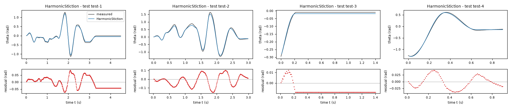
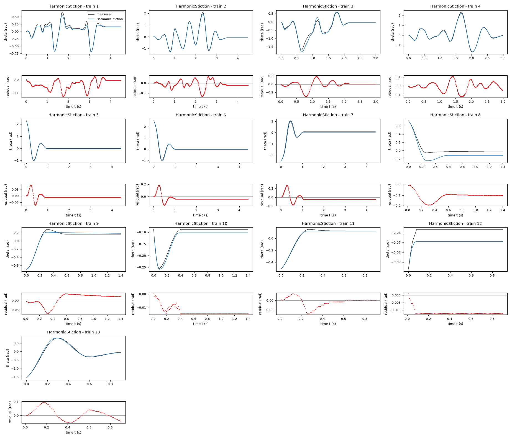
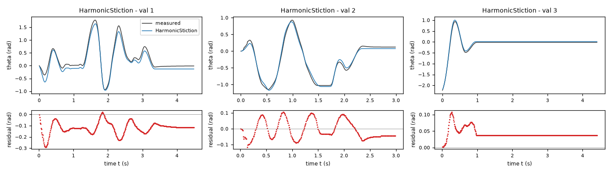
| Data | Trajectory | Scored samples | RMSE | NRMSE | R² | Failure |
|---|---|---|---|---|---|---|
| training data | 1 | 449 of 449 | 0.04881 | 0.1903 | 0.9638 | none |
| training data | 2 | 449 of 449 | 0.03854 | 0.05783 | 0.9967 | none |
| training data | 3 | 299 of 299 | 0.09087 | 0.1924 | 0.963 | none |
| training data | 4 | 299 of 299 | 0.04929 | 0.06015 | 0.9964 | none |
| training data | 5 | 441 of 441 | 0.02146 | 0.05606 | 0.9969 | none |
| training data | 6 | 441 of 441 | 0.05359 | 0.1174 | 0.9862 | none |
| training data | 7 | 441 of 441 | 0.07711 | 0.1486 | 0.9779 | none |
| training data | 8 | 140 of 140 | 0.1149 | 0.6998 | 0.5103 | none |
| training data | 9 | 140 of 140 | 0.03104 | 0.1419 | 0.9799 | none |
| training data | 10 | 140 of 140 | 0.01326 | 0.2696 | 0.9273 | none |
| training data | 11 | 90 of 90 | 0.01024 | 0.06222 | 0.9961 | none |
| training data | 12 | 90 of 90 | 0.01202 | 2.356 | -4.551 | none |
| training data | 13 | 90 of 90 | 0.04296 | 0.07908 | 0.9937 | none |
| validation data | 1 | 449 of 449 | 0.1307 | 0.239 | 0.9429 | none |
| validation data | 2 | 299 of 299 | 0.05813 | 0.104 | 0.9892 | none |
| validation data | 3 | 441 of 441 | 0.04453 | 0.1185 | 0.986 | none |
| test data | test-1 | 449 of 449 | 0.03868 | 0.1024 | 0.9895 | none |
| test data | test-2 | 299 of 299 | 0.06538 | 0.1058 | 0.9888 | none |
| test data | test-3 | 140 of 140 | 0.008526 | 0.1611 | 0.9741 | none |
| test data | test-4 | 90 of 90 | 0.02307 | 0.04369 | 0.9981 | none |
RMSE of theta in rad; NRMSE = RMSE / σ and R² = 1 − SSE / Σ(y[k] − μ)², with μ and σ the mean and the population standard deviation of the measured output on the scored samples.
a = 29.37 rad/(s^2 V) (fitted), g = 116.6 rad/s^2 (fitted), b = 1.559 1/s (fitted), c = 30.02 rad/s^2 (fitted), k = 163.2 1/s (fitted), h = -0.3405 (fitted)theta: 0.05803 rad · validation error: 0.08658 rad · test error: 0.02978 radEquations as written in the model file
dtheta = omega
domega = (a*u - g*sin(theta)) - b*omega - Min(Max((a*u - g*sin(theta)) + k*omega, -c*exp(h*cos(theta))), c*exp(h*cos(theta)))
Equations with the values substituted
Every parameter is replaced by its value with 4 significant digits.
Parameters and estimation
| Name | Value | Unit | Type | Description |
|---|---|---|---|---|
a | 29.3694 | rad/(s^2 V) | fitted | a is the positive motor acceleration gain, estimated jointly by the final open-loop angle least-squares fit. |
g | 116.569 | rad/s^2 | fitted | g is the positive nominal restoring acceleration amplitude, estimated jointly by the final open-loop angle least-squares fit. |
b | 1.55948 | 1/s | fitted | b is the positive viscous acceleration coefficient (or its unmodulated value in AngleDamping), estimated jointly by the final open-loop angle least-squares fit. |
c | 30.0169 | rad/s^2 | fitted | c is the positive moving-friction acceleration magnitude (reference value when modulated, high-speed limit in StribeckStiction), estimated jointly by the final open-loop angle least-squares fit. |
k | 163.247 | 1/s | fitted | k is the positive near-rest friction relaxation rate in the clipped-torque model, estimated jointly by the final open-loop angle least-squares fit. |
h | -0.340531 | - | fitted | h is the logarithmic cosine modulation of the friction limit, estimated jointly by the final open-loop angle least-squares fit. |
- Criterion minimized
Minimize the sum of squared open-loop angle residuals , in rad, over every sample after the first within each supplied trajectory. Every predicted sample receives equal weight; there is no per-trajectory normalization and no acceleration penalty. This matches the evaluation metric and lets free responses constrain stopping rather than letting their numerous zero derivatives dominate a derivative regression.
- Data
Final estimation uses
data/train.csv, all 13 trajectories and 3522 rows, anddata/val.csv, all 3 trajectories and 1192 rows. There are 4714 rows in total and 4698 scored residuals after excluding each trajectory initial sample. No moving or resting rows are discarded in the final simulation fit. Each trajectory starts from its own first loggedthetaandomega; recordeduis held constant over each s interval. The former validation file was deliberately reused for the final fit after initial train-only model comparisons, to use the limited available transient information; its refit scores are not held-out validation.- Method
Bound-constrained nonlinear least squares, using
scipy.optimize.least_squareswith the trust-region reflective algorithm (method = 'trf'), linear residual loss, Jacobian scaling (x_scale = 'jac'), forward two-point finite differences and . The maximum number of residual evaluations was ; the three stopping tolerances were , and . All parameters in this file were fitted together in this final step. The initial guesses were rad/(s^2 V); rad/s^2; 1/s; rad/s^2; 1/s; . They came from the earlier train-only simulation fit of this same family, selected by lowest training sum of squares; that stage was initialized by the physical moving-regime regression, not by random search. The bounds were rad/(s^2 V); rad/s^2; 1/s; rad/s^2; 1/s; . Positive coefficients enforce the torque and dissipation signs; the finite bounds on modulation and speed parameters avoid extreme extrapolation and excessive RK4 stiffness. No seed applies: the procedure is deterministic. The final estimate shown is the lower-cost result of two recorded starting points for this family;candidate_config.jsonrecords the winning starting point andjoint_results.jsonrecords both fits. Model simulation uses oursimulatefunction compiled with Numba, classical RK4 at s and zero-order-held loggedu. No measured states are substituted after initialization. The angle-only objective matches the scored variable and avoids treating centrally differentiated encoder noise as exact force measurements. The algorithm is a local optimizer; global optimality is not claimed. The optimization method is documented in the SciPyleast_squaresAPI; the record here specifies the actual settings, rather than relying on defaults alone.- Script
fit_candidates.py
The agent's explanation
Memoryless torque-limited friction relaxation with an angle-dependent positive friction limit. These are physically motivated grey-box ordinary differential equations, not an exact implementation of a named hysteretic friction model. General context, cited from memory without a successfully fetched source: B. Armstrong-Helouvry, P. Dupont and C. Canudas de Wit, 'A survey of models, analysis tools and compensation methods for the control of machines with friction', Automatica 30(7), 1083-1138 (1994). The particular cancellation or clipping expression here was constructed for this task and is not attributed to that survey.
The states are theta in rad and omega in rad/s; the exogenous input is u in V. The equation enforces kinematics. For discussion only, define in rad/s^2; it is expanded directly in the delivered expression, not an extra state. The term represents voltage-proportional motor acceleration except where explicitly saturated. The term represents pendulum-like restoring torque per inertia. The term represents viscous damping except where explicitly modulated. Only normalized acceleration coefficients are identifiable: inertia and physical torques are not separately estimated. Define in rad/s^2. The clipped friction term is . Inside the unsaturated interval the total acceleration is ; outside it the friction torque is capped. At rest, subthreshold acceleration is exactly canceled. The positive exponential limit allows angle-related modulation without sign reversal; no changing normal-force mechanism is established by these data. All coefficients controlling motor gain, damping and friction magnitude are positive. At rad/s and V, the unbalanced restoring drive has sign opposite theta on rad; clipping can only reduce its magnitude. Thus . The derivative of the clipped term with respect to the drive is between zero and one, so the complete input map is nondecreasing, including flat intervals inside the stick band.
The shared pendulum, linear motor and viscous terms were chosen from physical torque balance. Moving-row bounded linear least squares on rad/s in data/train.csv supplied initial coefficients; exploratory_derivatives.py records that screening. Initial simulation fits used the 13 training trajectories; independent initial comparisons used all 3 validation trajectories. Smooth Coulomb, analytic stiction, Stribeck, angle-modulated damping/friction, restoring harmonics, motor saturation and asymmetric moving friction were screened; multistart fits checked stopping-event local minima. No genetic symbolic regression was run. The proposed structures, rather than black-box predictors, were compared directly by open-loop simulation. Moving-regime residuals had correlations with and ; this motivated positive cosine modulation rather than an unconstrained friction coefficient that could become negative. The clipped-torque relaxation law was constructed as a numerically well-conditioned alternative to a discontinuous sign law. Its relaxation-rate bounds keep the near-rest scalar damping within the RK4 stability interval at the specified step.
The supplied records are short, mostly at rest in free response, and do not identify motor current, inertia, presliding displacement, temperature or trajectory-to-trajectory changes. The first logged velocity is imposed even when numerical differentiation makes it an uncertain initial condition. A memoryless law cannot describe full friction hysteresis. Parameter values are effective coefficients for these experiments, not independently measured material constants. The actual training voltage range was approximately V, so motor behavior near the required extremes is extrapolation. Model selection used the supplied data, including grouped holdout diagnostics, and is not an untouched external test. In the final fit the former validation file was reused, so its final RMSE must not be called independent validation performance. The angle modulation may absorb differentiation and load effects rather than true position-dependent dry friction. The relaxation rate and friction limit are correlated around stops. The all-data refit angle RMSE is 0.066427 rad over 4698 predicted samples; the training-file RMSE is 0.058033 rad and the reused-validation-file RMSE is 0.086577 rad. Conditional leave-one-trajectory-out RMSE is 0.078650 rad over the same sample count: each of the 16 supplied trajectories was omitted in turn and simulated from its first logged state, with fit parameters reestimated on the other 15. These fits were warm-started from the full-data estimate and are diagnostic rather than nested model-selection validation.
Physical requirements
| Requirement | Statement | Outcome | Detail |
|---|---|---|---|
| R1 | proof | the quantity is identically zero on the domain | |
| R2 | inconclusive | no violation found at the 10000 sampled points (largest value of Q -0.0, tolerance 0.0); this is not a proof | |
| R3 | inconclusive | no violation found at the 10000 sampled points (largest value of Q 0.0, tolerance 0.0); this is not a proof |
Plots of simulated and measured theta, and errors per trajectory
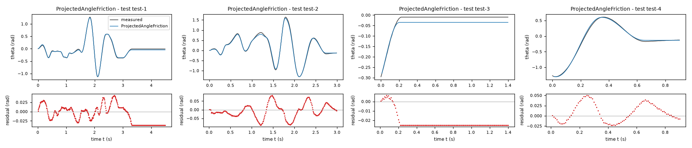
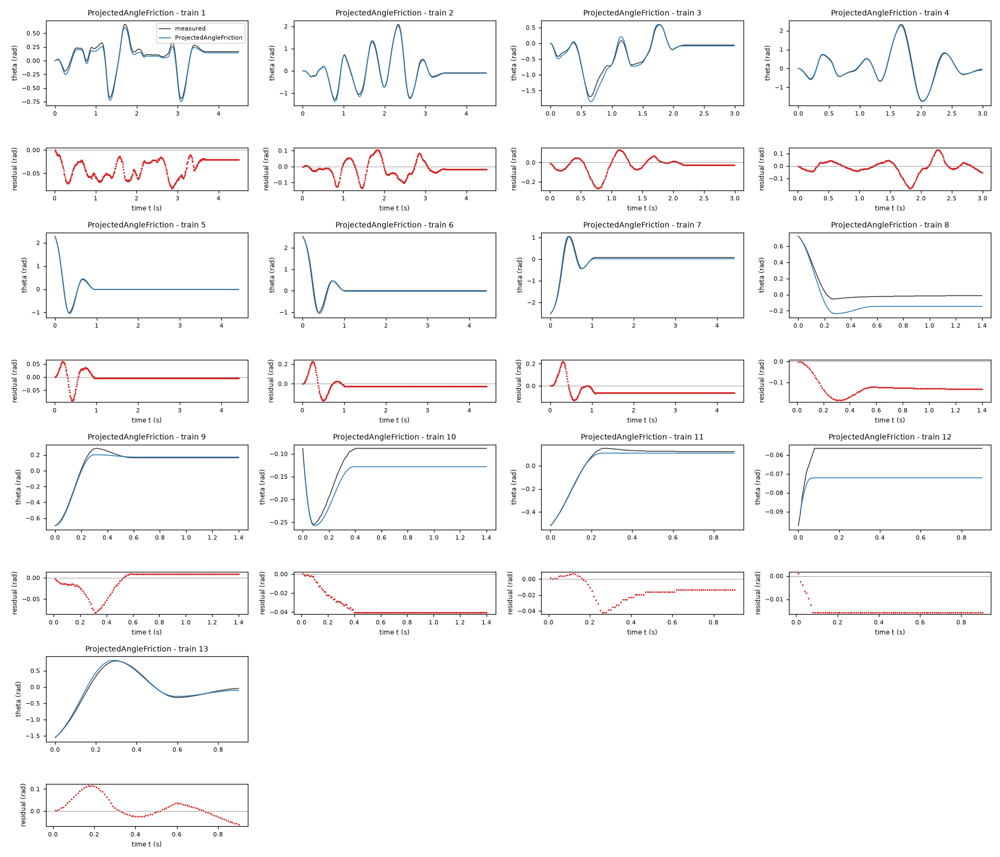
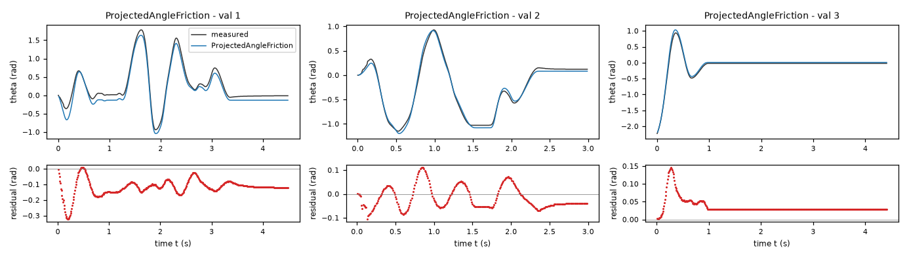
| Data | Trajectory | Scored samples | RMSE | NRMSE | R² | Failure |
|---|---|---|---|---|---|---|
| training data | 1 | 449 of 449 | 0.04284 | 0.167 | 0.9721 | none |
| training data | 2 | 449 of 449 | 0.05081 | 0.07624 | 0.9942 | none |
| training data | 3 | 299 of 299 | 0.08204 | 0.1737 | 0.9698 | none |
| training data | 4 | 299 of 299 | 0.0562 | 0.06857 | 0.9953 | none |
| training data | 5 | 441 of 441 | 0.0196 | 0.0512 | 0.9974 | none |
| training data | 6 | 441 of 441 | 0.05706 | 0.125 | 0.9844 | none |
| training data | 7 | 441 of 441 | 0.07206 | 0.1389 | 0.9807 | none |
| training data | 8 | 140 of 140 | 0.1319 | 0.8034 | 0.3546 | none |
| training data | 9 | 140 of 140 | 0.02626 | 0.1201 | 0.9856 | none |
| training data | 10 | 140 of 140 | 0.03631 | 0.7385 | 0.4546 | none |
| training data | 11 | 90 of 90 | 0.01897 | 0.1152 | 0.9867 | none |
| training data | 12 | 90 of 90 | 0.01511 | 2.961 | -7.768 | none |
| training data | 13 | 90 of 90 | 0.04852 | 0.08931 | 0.992 | none |
| validation data | 1 | 449 of 449 | 0.1284 | 0.2348 | 0.9449 | none |
| validation data | 2 | 299 of 299 | 0.04993 | 0.0893 | 0.992 | none |
| validation data | 3 | 441 of 441 | 0.04177 | 0.1111 | 0.9877 | none |
| test data | test-1 | 449 of 449 | 0.02418 | 0.06404 | 0.9959 | none |
| test data | test-2 | 299 of 299 | 0.04004 | 0.06478 | 0.9958 | none |
| test data | test-3 | 140 of 140 | 0.02345 | 0.4429 | 0.8038 | none |
| test data | test-4 | 90 of 90 | 0.02325 | 0.04404 | 0.9981 | none |
RMSE of theta in rad; NRMSE = RMSE / σ and R² = 1 − SSE / Σ(y[k] − μ)², with μ and σ the mean and the population standard deviation of the measured output on the scored samples.
a = 28.45 rad/(s^2 V) (fitted), g = 112.4 rad/s^2 (fitted), b = 3.219 1/s (fitted), c = 2.001 rad/s^2 (fitted), v = 0.12 rad/s (fitted), s = 16.75 rad/s^2 (fitted), ws = 8 rad/s (fitted)theta: 0.06646 rad · validation error: 0.08676 rad · test error: 0.04757 radEquations as written in the model file
dtheta = omega
domega = (a*u - g*sin(theta)) - b*omega - (c + s*exp(-(omega/ws)**2))*tanh(omega/v) - (1 - tanh(omega/v)**2)*Min(Max((a*u - g*sin(theta)), -(c + s)), (c + s))
Equations with the values substituted
Every parameter is replaced by its value with 4 significant digits.
Parameters and estimation
| Name | Value | Unit | Type | Description |
|---|---|---|---|---|
a | 28.4502 | rad/(s^2 V) | fitted | a is the positive motor acceleration gain, estimated jointly by the final open-loop angle least-squares fit. |
g | 112.396 | rad/s^2 | fitted | g is the positive nominal restoring acceleration amplitude, estimated jointly by the final open-loop angle least-squares fit. |
b | 3.21914 | 1/s | fitted | b is the positive viscous acceleration coefficient (or its unmodulated value in AngleDamping), estimated jointly by the final open-loop angle least-squares fit. |
c | 2.00126 | rad/s^2 | fitted | c is the positive moving-friction acceleration magnitude (reference value when modulated, high-speed limit in StribeckStiction), estimated jointly by the final open-loop angle least-squares fit. |
v | 0.12 | rad/s | fitted | v is the positive speed regularization scale, estimated jointly by the final open-loop angle least-squares fit; the lower bound prevents excessively stiff numerical dynamics. |
s | 16.7539 | rad/s^2 | fitted | s is the nonnegative low-speed friction excess and additional static threshold, estimated jointly by the final open-loop angle least-squares fit. |
ws | 8 | rad/s | fitted | ws is the positive Gaussian friction-decay speed, estimated jointly by the final open-loop angle least-squares fit. |
- Criterion minimized
Minimize the sum of squared open-loop angle residuals , in rad, over every sample after the first within each supplied trajectory. Every predicted sample receives equal weight; there is no per-trajectory normalization and no acceleration penalty. This matches the evaluation metric and lets free responses constrain stopping rather than letting their numerous zero derivatives dominate a derivative regression.
- Data
Final estimation uses
data/train.csv, all 13 trajectories and 3522 rows, anddata/val.csv, all 3 trajectories and 1192 rows. There are 4714 rows in total and 4698 scored residuals after excluding each trajectory initial sample. No moving or resting rows are discarded in the final simulation fit. Each trajectory starts from its own first loggedthetaandomega; recordeduis held constant over each s interval. The former validation file was deliberately reused for the final fit after initial train-only model comparisons, to use the limited available transient information; its refit scores are not held-out validation.- Method
Bound-constrained nonlinear least squares, using
scipy.optimize.least_squareswith the trust-region reflective algorithm (method = 'trf'), linear residual loss, Jacobian scaling (x_scale = 'jac'), forward two-point finite differences and . The maximum number of residual evaluations was ; the three stopping tolerances were , and . All parameters in this file were fitted together in this final step. The initial guesses were rad/(s^2 V); rad/s^2; 1/s; rad/s^2; rad/s; rad/s^2; rad/s. They came from the earlier train-only simulation fit of this same family, selected by lowest training sum of squares; that stage was initialized by the physical moving-regime regression, not by random search. The bounds were rad/(s^2 V); rad/s^2; 1/s; rad/s^2; rad/s; rad/s^2; rad/s. Positive coefficients enforce the torque and dissipation signs; the finite bounds on modulation and speed parameters avoid extreme extrapolation and excessive RK4 stiffness. No seed applies: the procedure is deterministic. The final estimate shown is the lower-cost result of two recorded starting points for this family;candidate_config.jsonrecords the winning starting point andjoint_results.jsonrecords both fits. Model simulation uses oursimulatefunction compiled with Numba, classical RK4 at s and zero-order-held loggedu. No measured states are substituted after initialization. The angle-only objective matches the scored variable and avoids treating centrally differentiated encoder noise as exact force measurements. The algorithm is a local optimizer; global optimality is not claimed. The optimization method is documented in the SciPyleast_squaresAPI; the record here specifies the actual settings, rather than relying on defaults alone.- Script
fit_candidates.py
The agent's explanation
Stribeck-plus-viscous friction with a Gaussian speed-decay term and analytic static-friction cancellation. These are physically motivated grey-box ordinary differential equations, not an exact implementation of a named hysteretic friction model. General context, cited from memory without a successfully fetched source: B. Armstrong-Helouvry, P. Dupont and C. Canudas de Wit, 'A survey of models, analysis tools and compensation methods for the control of machines with friction', Automatica 30(7), 1083-1138 (1994). The particular cancellation or clipping expression here was constructed for this task and is not attributed to that survey.
The states are theta in rad and omega in rad/s; the exogenous input is u in V. The equation enforces kinematics. For discussion only, define in rad/s^2; it is expanded directly in the delivered expression, not an extra state. The term represents voltage-proportional motor acceleration except where explicitly saturated. The term represents pendulum-like restoring torque per inertia. The term represents viscous damping except where explicitly modulated. Only normalized acceleration coefficients are identifiable: inertia and physical torques are not separately estimated. The moving friction term is in rad/s^2. Define , a dimensionless near-rest weight. The term cancels subthreshold applied acceleration exactly at rest, and fades away during motion. At rad/s it reduces to ; therefore a continuum of exact resting equilibria exists when in rad/s^2. This is a memoryless analytic sticking approximation, not a separately identified elastic friction state. The positive term raises low-speed moving friction above the high-speed level c; the static cancellation limit is . The data estimate a broad decay, so the dynamic curve can also behave as nonlinear damping over the observed speeds. All coefficients controlling motor gain, damping and friction magnitude are positive. At rad/s and V, the unbalanced restoring drive has sign opposite theta on rad; clipping can only reduce its magnitude. Thus . For fixed theta and omega, clipping is nondecreasing with slope between zero and one, and the gate is between zero and one; hence the complete input map is nondecreasing. Exact stiction necessarily creates flat input intervals.
The shared pendulum, linear motor and viscous terms were chosen from physical torque balance. Moving-row bounded linear least squares on rad/s in data/train.csv supplied initial coefficients; exploratory_derivatives.py records that screening. Initial simulation fits used the 13 training trajectories; independent initial comparisons used all 3 validation trajectories. Smooth Coulomb, analytic stiction, Stribeck, angle-modulated damping/friction, restoring harmonics, motor saturation and asymmetric moving friction were screened; multistart fits checked stopping-event local minima. No genetic symbolic regression was run. The proposed structures, rather than black-box predictors, were compared directly by open-loop simulation. The Gaussian speed-decay term is the physically motivated Stribeck family listed before fitting. It was retained because grouped trajectory holdout slightly improved over the smooth-friction baseline and because it preserves sticking, not because a static-vs-dynamic friction difference was independently measured.
The supplied records are short, mostly at rest in free response, and do not identify motor current, inertia, presliding displacement, temperature or trajectory-to-trajectory changes. The first logged velocity is imposed even when numerical differentiation makes it an uncertain initial condition. A memoryless law cannot describe full friction hysteresis. Parameter values are effective coefficients for these experiments, not independently measured material constants. The actual training voltage range was approximately V, so motor behavior near the required extremes is extrapolation. Model selection used the supplied data, including grouped holdout diagnostics, and is not an untouched external test. In the final fit the former validation file was reused, so its final RMSE must not be called independent validation performance. The estimates reach the lower bound for c and the upper bound for ws; the separation of high-speed friction, decay speed and viscous damping is weakly identified. This candidate is a defensible empirical friction curve, but not a precise identification of a Stribeck mechanism. The all-data refit angle RMSE is 0.072141 rad over 4698 predicted samples; the training-file RMSE is 0.066463 rad and the reused-validation-file RMSE is 0.086758 rad. Conditional leave-one-trajectory-out RMSE is 0.077589 rad over the same sample count: each of the 16 supplied trajectories was omitted in turn and simulated from its first logged state, with fit parameters reestimated on the other 15. These fits were warm-started from the full-data estimate and are diagnostic rather than nested model-selection validation.
Physical requirements
| Requirement | Statement | Outcome | Detail |
|---|---|---|---|
| R1 | proof | the quantity is identically zero on the domain | |
| R2 | inconclusive | no violation found at the 10000 sampled points (largest value of Q -0.0, tolerance 0.0); this is not a proof | |
| R3 | inconclusive | no violation found at the 10000 sampled points (largest value of Q -1.7641831972880162, tolerance 0.0); this is not a proof |
Plots of simulated and measured theta, and errors per trajectory
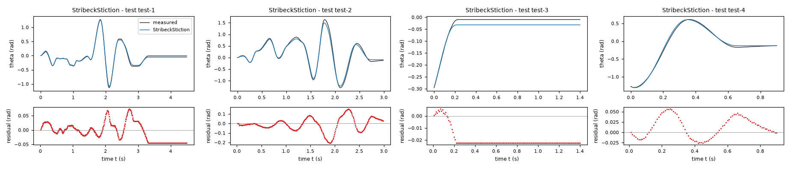
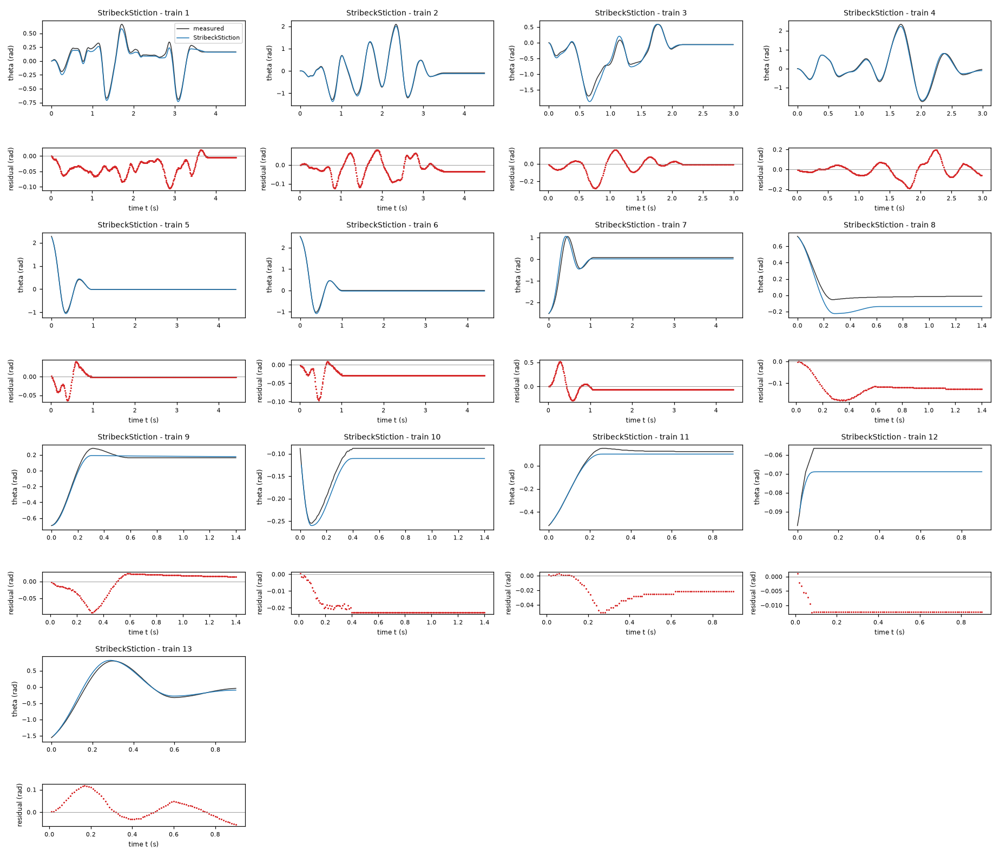
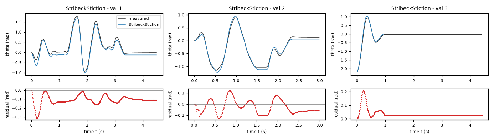
| Data | Trajectory | Scored samples | RMSE | NRMSE | R² | Failure |
|---|---|---|---|---|---|---|
| training data | 1 | 449 of 449 | 0.04228 | 0.1648 | 0.9728 | none |
| training data | 2 | 449 of 449 | 0.04746 | 0.07121 | 0.9949 | none |
| training data | 3 | 299 of 299 | 0.08397 | 0.1778 | 0.9684 | none |
| training data | 4 | 299 of 299 | 0.07255 | 0.08852 | 0.9922 | none |
| training data | 5 | 441 of 441 | 0.01421 | 0.03714 | 0.9986 | none |
| training data | 6 | 441 of 441 | 0.03123 | 0.06842 | 0.9953 | none |
| training data | 7 | 441 of 441 | 0.1237 | 0.2384 | 0.9432 | none |
| training data | 8 | 140 of 140 | 0.1261 | 0.7678 | 0.4104 | none |
| training data | 9 | 140 of 140 | 0.03284 | 0.1502 | 0.9774 | none |
| training data | 10 | 140 of 140 | 0.02094 | 0.4258 | 0.8187 | none |
| training data | 11 | 90 of 90 | 0.02621 | 0.1592 | 0.9746 | none |
| training data | 12 | 90 of 90 | 0.01198 | 2.348 | -4.515 | none |
| training data | 13 | 90 of 90 | 0.05012 | 0.09225 | 0.9915 | none |
| validation data | 1 | 449 of 449 | 0.1212 | 0.2217 | 0.9509 | none |
| validation data | 2 | 299 of 299 | 0.06572 | 0.1175 | 0.9862 | none |
| validation data | 3 | 441 of 441 | 0.04908 | 0.1306 | 0.9829 | none |
| test data | test-1 | 449 of 449 | 0.03226 | 0.08544 | 0.9927 | none |
| test data | test-2 | 299 of 299 | 0.07351 | 0.1189 | 0.9859 | none |
| test data | test-3 | 140 of 140 | 0.02084 | 0.3936 | 0.845 | none |
| test data | test-4 | 90 of 90 | 0.02766 | 0.05239 | 0.9973 | none |
RMSE of theta in rad; NRMSE = RMSE / σ and R² = 1 − SSE / Σ(y[k] − μ)², with μ and σ the mean and the population standard deviation of the measured output on the scored samples.
a = 28.6 rad/(s^2 V) (fitted), g = 111.9 rad/s^2 (fitted), b = 1.662 1/s (fitted), c = 21.72 rad/s^2 (fitted), v = 0.1466 rad/s (fitted)theta: 0.06647 rad · validation error: 0.08239 rad · test error: 0.04505 radEquations as written in the model file
dtheta = omega
domega = (a*u - g*sin(theta)) - b*omega - c*tanh(omega/v)
Equations with the values substituted
Every parameter is replaced by its value with 4 significant digits.
Parameters and estimation
| Name | Value | Unit | Type | Description |
|---|---|---|---|---|
a | 28.5979 | rad/(s^2 V) | fitted | a is the positive motor acceleration gain, estimated jointly by the final open-loop angle least-squares fit. |
g | 111.865 | rad/s^2 | fitted | g is the positive nominal restoring acceleration amplitude, estimated jointly by the final open-loop angle least-squares fit. |
b | 1.66207 | 1/s | fitted | b is the positive viscous acceleration coefficient (or its unmodulated value in AngleDamping), estimated jointly by the final open-loop angle least-squares fit. |
c | 21.7175 | rad/s^2 | fitted | c is the positive moving-friction acceleration magnitude (reference value when modulated, high-speed limit in StribeckStiction), estimated jointly by the final open-loop angle least-squares fit. |
v | 0.146558 | rad/s | fitted | v is the positive speed regularization scale, estimated jointly by the final open-loop angle least-squares fit; the lower bound prevents excessively stiff numerical dynamics. |
- Criterion minimized
Minimize the sum of squared open-loop angle residuals , in rad, over every sample after the first within each supplied trajectory. Every predicted sample receives equal weight; there is no per-trajectory normalization and no acceleration penalty. This matches the evaluation metric and lets free responses constrain stopping rather than letting their numerous zero derivatives dominate a derivative regression.
- Data
Final estimation uses
data/train.csv, all 13 trajectories and 3522 rows, anddata/val.csv, all 3 trajectories and 1192 rows. There are 4714 rows in total and 4698 scored residuals after excluding each trajectory initial sample. No moving or resting rows are discarded in the final simulation fit. Each trajectory starts from its own first loggedthetaandomega; recordeduis held constant over each s interval. The former validation file was deliberately reused for the final fit after initial train-only model comparisons, to use the limited available transient information; its refit scores are not held-out validation.- Method
Bound-constrained nonlinear least squares, using
scipy.optimize.least_squareswith the trust-region reflective algorithm (method = 'trf'), linear residual loss, Jacobian scaling (x_scale = 'jac'), forward two-point finite differences and . The maximum number of residual evaluations was ; the three stopping tolerances were , and . All parameters in this file were fitted together in this final step. The initial guesses were rad/(s^2 V); rad/s^2; 1/s; rad/s^2; rad/s. They came from the earlier train-only simulation fit of this same family, selected by lowest training sum of squares; that stage was initialized by the physical moving-regime regression, not by random search. The bounds were rad/(s^2 V); rad/s^2; 1/s; rad/s^2; rad/s. Positive coefficients enforce the torque and dissipation signs; the finite bounds on modulation and speed parameters avoid extreme extrapolation and excessive RK4 stiffness. No seed applies: the procedure is deterministic. The final estimate shown is the lower-cost result of two recorded starting points for this family;candidate_config.jsonrecords the winning starting point andjoint_results.jsonrecords both fits. Model simulation uses oursimulatefunction compiled with Numba, classical RK4 at s and zero-order-held loggedu. No measured states are substituted after initialization. The angle-only objective matches the scored variable and avoids treating centrally differentiated encoder noise as exact force measurements. The algorithm is a local optimizer; global optimality is not claimed. The optimization method is documented in the SciPyleast_squaresAPI; the record here specifies the actual settings, rather than relying on defaults alone.- Script
fit_candidates.py
The agent's explanation
Regularized Coulomb-plus-viscous pendulum/DC-motor torque balance. These are physically motivated grey-box ordinary differential equations, not an exact implementation of a named hysteretic friction model. General context, cited from memory without a successfully fetched source: B. Armstrong-Helouvry, P. Dupont and C. Canudas de Wit, 'A survey of models, analysis tools and compensation methods for the control of machines with friction', Automatica 30(7), 1083-1138 (1994). The particular cancellation or clipping expression here was constructed for this task and is not attributed to that survey.
The states are theta in rad and omega in rad/s; the exogenous input is u in V. The equation enforces kinematics. For discussion only, define in rad/s^2; it is expanded directly in the delivered expression, not an extra state. The term represents voltage-proportional motor acceleration except where explicitly saturated. The term represents pendulum-like restoring torque per inertia. The term represents viscous damping except where explicitly modulated. Only normalized acceleration coefficients are identifiable: inertia and physical torques are not separately estimated. The term is smooth Coulomb friction, approaching away from rest. It retains positive damping near zero but does not give exact stiction. At rad/s and V the acceleration is , so on rad. The input map is linear with positive gain a.
The shared pendulum, linear motor and viscous terms were chosen from physical torque balance. Moving-row bounded linear least squares on rad/s in data/train.csv supplied initial coefficients; exploratory_derivatives.py records that screening. Initial simulation fits used the 13 training trajectories; independent initial comparisons used all 3 validation trajectories. Smooth Coulomb, analytic stiction, Stribeck, angle-modulated damping/friction, restoring harmonics, motor saturation and asymmetric moving friction were screened; multistart fits checked stopping-event local minima. No genetic symbolic regression was run. The proposed structures, rather than black-box predictors, were compared directly by open-loop simulation. This deliberately minimal family was retained as a predictive reference because it had the lowest independent initial validation RMSE among the first eight screened forms; it sacrifices exact sticking. The tanh replacement was chosen for continuous, stable evaluation rather than inferred by symbolic search.
The supplied records are short, mostly at rest in free response, and do not identify motor current, inertia, presliding displacement, temperature or trajectory-to-trajectory changes. The first logged velocity is imposed even when numerical differentiation makes it an uncertain initial condition. A memoryless law cannot describe full friction hysteresis. Parameter values are effective coefficients for these experiments, not independently measured material constants. The actual training voltage range was approximately V, so motor behavior near the required extremes is extrapolation. Model selection used the supplied data, including grouped holdout diagnostics, and is not an untouched external test. In the final fit the former validation file was reused, so its final RMSE must not be called independent validation performance. It creeps toward zero under subthreshold restoring torque and should not be used to infer a static stick band; the short observation horizons can conceal that defect. The all-data refit angle RMSE is 0.070835 rad over 4698 predicted samples; the training-file RMSE is 0.066466 rad and the reused-validation-file RMSE is 0.082391 rad. Conditional leave-one-trajectory-out RMSE is 0.078021 rad over the same sample count: each of the 16 supplied trajectories was omitted in turn and simulated from its first logged state, with fit parameters reestimated on the other 15. These fits were warm-started from the full-data estimate and are diagnostic rather than nested model-selection validation.
Physical requirements
| Requirement | Statement | Outcome | Detail |
|---|---|---|---|
| R1 | proof | the quantity is identically zero on the domain | |
| R2 | proof | verified enclosures on 3 sub-box(es) covering the domain do not exceed the tolerance 0.0 | |
| R3 | proof | the quantity reduces to the constant -28.597941270377575, which does not exceed the tolerance 0.0 |
Plots of simulated and measured theta, and errors per trajectory
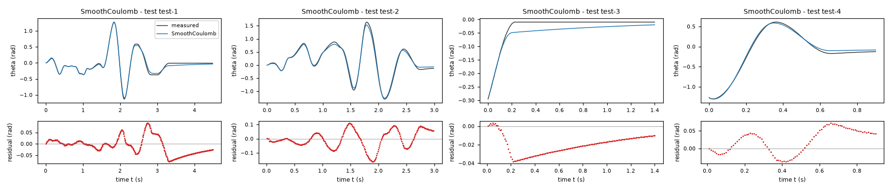
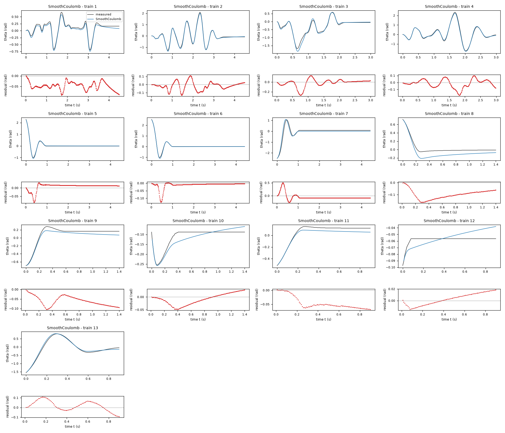
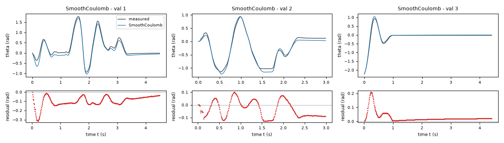
| Data | Trajectory | Scored samples | RMSE | NRMSE | R² | Failure |
|---|---|---|---|---|---|---|
| training data | 1 | 449 of 449 | 0.05063 | 0.1974 | 0.961 | none |
| training data | 2 | 449 of 449 | 0.05059 | 0.07591 | 0.9942 | none |
| training data | 3 | 299 of 299 | 0.0775 | 0.1641 | 0.9731 | none |
| training data | 4 | 299 of 299 | 0.06112 | 0.07457 | 0.9944 | none |
| training data | 5 | 441 of 441 | 0.02159 | 0.05641 | 0.9968 | none |
| training data | 6 | 441 of 441 | 0.02396 | 0.05248 | 0.9972 | none |
| training data | 7 | 441 of 441 | 0.1272 | 0.2452 | 0.9399 | none |
| training data | 8 | 140 of 140 | 0.104 | 0.6335 | 0.5987 | none |
| training data | 9 | 140 of 140 | 0.06505 | 0.2974 | 0.9115 | none |
| training data | 10 | 140 of 140 | 0.02315 | 0.4709 | 0.7782 | none |
| training data | 11 | 90 of 90 | 0.051 | 0.3099 | 0.904 | none |
| training data | 12 | 90 of 90 | 0.01019 | 1.998 | -2.991 | none |
| training data | 13 | 90 of 90 | 0.0544 | 0.1001 | 0.99 | none |
| validation data | 1 | 449 of 449 | 0.1109 | 0.2029 | 0.9588 | none |
| validation data | 2 | 299 of 299 | 0.07318 | 0.1309 | 0.9829 | none |
| validation data | 3 | 441 of 441 | 0.04629 | 0.1232 | 0.9848 | none |
| test data | test-1 | 449 of 449 | 0.03672 | 0.09725 | 0.9905 | none |
| test data | test-2 | 299 of 299 | 0.06252 | 0.1012 | 0.9898 | none |
| test data | test-3 | 140 of 140 | 0.02251 | 0.4252 | 0.8192 | none |
| test data | test-4 | 90 of 90 | 0.0394 | 0.07462 | 0.9944 | none |
RMSE of theta in rad; NRMSE = RMSE / σ and R² = 1 − SSE / Σ(y[k] − μ)², with μ and σ the mean and the population standard deviation of the measured output on the scored samples.
a = 29.02 rad/(s^2 V) (fitted), g = 114.5 rad/s^2 (fitted), b = 2.85 1/s (fitted), c = 20.85 rad/s^2 (fitted), v = 0.12 rad/s (fitted), h = -0.6272 (fitted)theta: 0.0613 rad · validation error: 0.08816 rad · test error: 0.02604 radEquations as written in the model file
dtheta = omega
domega = (a*u - g*sin(theta)) - b*exp(h*cos(theta))*omega - c*tanh(omega/v) - (1 - tanh(omega/v)**2)*Min(Max((a*u - g*sin(theta)), -(c)), (c))
Equations with the values substituted
Every parameter is replaced by its value with 4 significant digits.
Parameters and estimation
| Name | Value | Unit | Type | Description |
|---|---|---|---|---|
a | 29.0176 | rad/(s^2 V) | fitted | a is the positive motor acceleration gain, estimated jointly by the final open-loop angle least-squares fit. |
g | 114.548 | rad/s^2 | fitted | g is the positive nominal restoring acceleration amplitude, estimated jointly by the final open-loop angle least-squares fit. |
b | 2.85049 | 1/s | fitted | b is the positive viscous acceleration coefficient (or its unmodulated value in AngleDamping), estimated jointly by the final open-loop angle least-squares fit. |
c | 20.8491 | rad/s^2 | fitted | c is the positive moving-friction acceleration magnitude (reference value when modulated, high-speed limit in StribeckStiction), estimated jointly by the final open-loop angle least-squares fit. |
v | 0.12 | rad/s | fitted | v is the positive speed regularization scale, estimated jointly by the final open-loop angle least-squares fit; the lower bound prevents excessively stiff numerical dynamics. |
h | -0.627233 | - | fitted | h is the logarithmic cosine modulation of damping, estimated jointly by the final open-loop angle least-squares fit. |
- Criterion minimized
Minimize the sum of squared open-loop angle residuals , in rad, over every sample after the first within each supplied trajectory. Every predicted sample receives equal weight; there is no per-trajectory normalization and no acceleration penalty. This matches the evaluation metric and lets free responses constrain stopping rather than letting their numerous zero derivatives dominate a derivative regression.
- Data
Final estimation uses
data/train.csv, all 13 trajectories and 3522 rows, anddata/val.csv, all 3 trajectories and 1192 rows. There are 4714 rows in total and 4698 scored residuals after excluding each trajectory initial sample. No moving or resting rows are discarded in the final simulation fit. Each trajectory starts from its own first loggedthetaandomega; recordeduis held constant over each s interval. The former validation file was deliberately reused for the final fit after initial train-only model comparisons, to use the limited available transient information; its refit scores are not held-out validation.- Method
Bound-constrained nonlinear least squares, using
scipy.optimize.least_squareswith the trust-region reflective algorithm (method = 'trf'), linear residual loss, Jacobian scaling (x_scale = 'jac'), forward two-point finite differences and . The maximum number of residual evaluations was ; the three stopping tolerances were , and . All parameters in this file were fitted together in this final step. The initial guesses were rad/(s^2 V); rad/s^2; 1/s; rad/s^2; rad/s; . They came from the earlier train-only simulation fit of this same family, selected by lowest training sum of squares; that stage was initialized by the physical moving-regime regression, not by random search. The bounds were rad/(s^2 V); rad/s^2; 1/s; rad/s^2; rad/s; . Positive coefficients enforce the torque and dissipation signs; the finite bounds on modulation and speed parameters avoid extreme extrapolation and excessive RK4 stiffness. No seed applies: the procedure is deterministic. The final estimate shown is the lower-cost result of two recorded starting points for this family;candidate_config.jsonrecords the winning starting point andjoint_results.jsonrecords both fits. Model simulation uses oursimulatefunction compiled with Numba, classical RK4 at s and zero-order-held loggedu. No measured states are substituted after initialization. The angle-only objective matches the scored variable and avoids treating centrally differentiated encoder noise as exact force measurements. The algorithm is a local optimizer; global optimality is not claimed. The optimization method is documented in the SciPyleast_squaresAPI; the record here specifies the actual settings, rather than relying on defaults alone.- Script
fit_candidates.py
The agent's explanation
Nonlinear pendulum with positive angle-modulated viscous damping and analytic static-friction cancellation. These are physically motivated grey-box ordinary differential equations, not an exact implementation of a named hysteretic friction model. General context, cited from memory without a successfully fetched source: B. Armstrong-Helouvry, P. Dupont and C. Canudas de Wit, 'A survey of models, analysis tools and compensation methods for the control of machines with friction', Automatica 30(7), 1083-1138 (1994). The particular cancellation or clipping expression here was constructed for this task and is not attributed to that survey.
The states are theta in rad and omega in rad/s; the exogenous input is u in V. The equation enforces kinematics. For discussion only, define in rad/s^2; it is expanded directly in the delivered expression, not an extra state. The term represents voltage-proportional motor acceleration except where explicitly saturated. The term represents pendulum-like restoring torque per inertia. The term represents viscous damping except where explicitly modulated. Only normalized acceleration coefficients are identifiable: inertia and physical torques are not separately estimated. The moving friction term is in rad/s^2. Define , a dimensionless near-rest weight. The term cancels subthreshold applied acceleration exactly at rest, and fades away during motion. At rad/s it reduces to ; therefore a continuum of exact resting equilibria exists when in rad/s^2. This is a memoryless analytic sticking approximation, not a separately identified elastic friction state. The viscous term is ; it is dissipative at every angle. The exponential is a mathematical modulation of speed damping, not proof of a mechanical cause. All coefficients controlling motor gain, damping and friction magnitude are positive. At rad/s and V, the unbalanced restoring drive has sign opposite theta on rad; clipping can only reduce its magnitude. Thus . For fixed theta and omega, clipping is nondecreasing with slope between zero and one, and the gate is between zero and one; hence the complete input map is nondecreasing. Exact stiction necessarily creates flat input intervals.
The shared pendulum, linear motor and viscous terms were chosen from physical torque balance. Moving-row bounded linear least squares on rad/s in data/train.csv supplied initial coefficients; exploratory_derivatives.py records that screening. Initial simulation fits used the 13 training trajectories; independent initial comparisons used all 3 validation trajectories. Smooth Coulomb, analytic stiction, Stribeck, angle-modulated damping/friction, restoring harmonics, motor saturation and asymmetric moving friction were screened; multistart fits checked stopping-event local minima. No genetic symbolic regression was run. The proposed structures, rather than black-box predictors, were compared directly by open-loop simulation. The moving derivative residuals supported screening ; exponentiation was chosen to preserve positive damping globally. Subsequent open-loop fitting improved training trajectories but was less convincing than the recommended harmonic model in grouped holdout. It is retained as a distinct load-modulation hypothesis rather than another coefficient perturbation.
The supplied records are short, mostly at rest in free response, and do not identify motor current, inertia, presliding displacement, temperature or trajectory-to-trajectory changes. The first logged velocity is imposed even when numerical differentiation makes it an uncertain initial condition. A memoryless law cannot describe full friction hysteresis. Parameter values are effective coefficients for these experiments, not independently measured material constants. The actual training voltage range was approximately V, so motor behavior near the required extremes is extrapolation. Model selection used the supplied data, including grouped holdout diagnostics, and is not an untouched external test. In the final fit the former validation file was reused, so its final RMSE must not be called independent validation performance. The cosine damping correction may stand in for correlated angle/speed sampling; it is not independently identified as bearing damping. The all-data refit angle RMSE is 0.069089 rad over 4698 predicted samples; the training-file RMSE is 0.061295 rad and the reused-validation-file RMSE is 0.088161 rad. Conditional leave-one-trajectory-out RMSE is 0.081298 rad over the same sample count: each of the 16 supplied trajectories was omitted in turn and simulated from its first logged state, with fit parameters reestimated on the other 15. These fits were warm-started from the full-data estimate and are diagnostic rather than nested model-selection validation.
Physical requirements
| Requirement | Statement | Outcome | Detail |
|---|---|---|---|
| R1 | proof | the quantity is identically zero on the domain | |
| R2 | inconclusive | no violation found at the 10000 sampled points (largest value of Q -0.0, tolerance 0.0); this is not a proof | |
| R3 | inconclusive | no violation found at the 10000 sampled points (largest value of Q -1.7993674757097935, tolerance 0.0); this is not a proof |
Plots of simulated and measured theta, and errors per trajectory
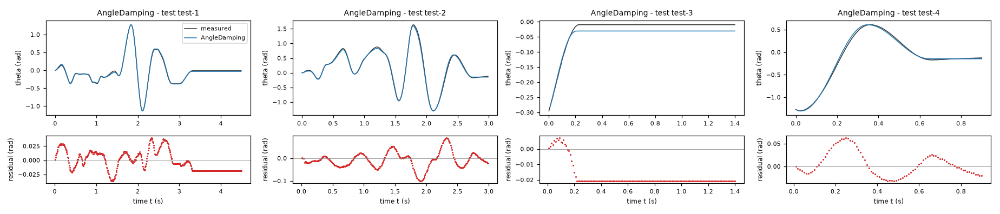
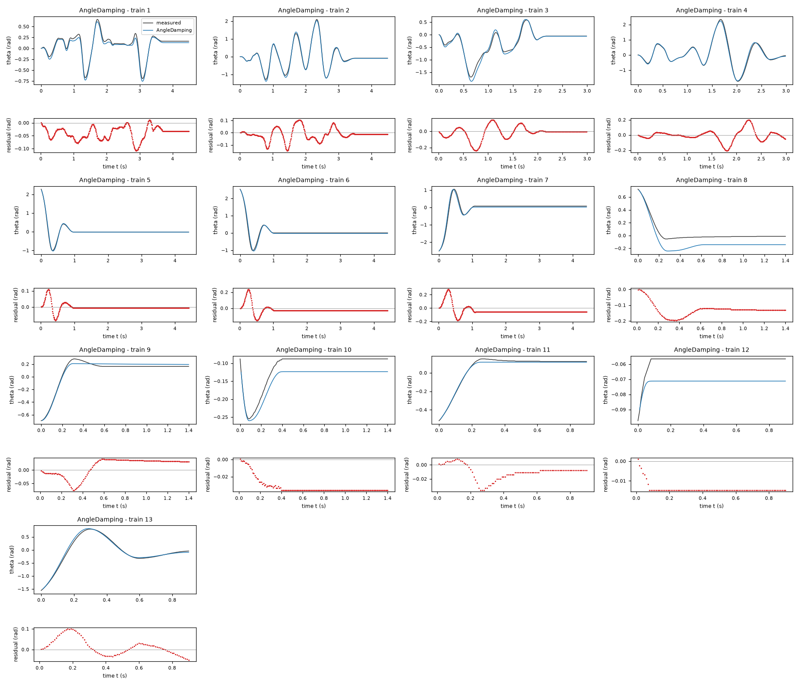
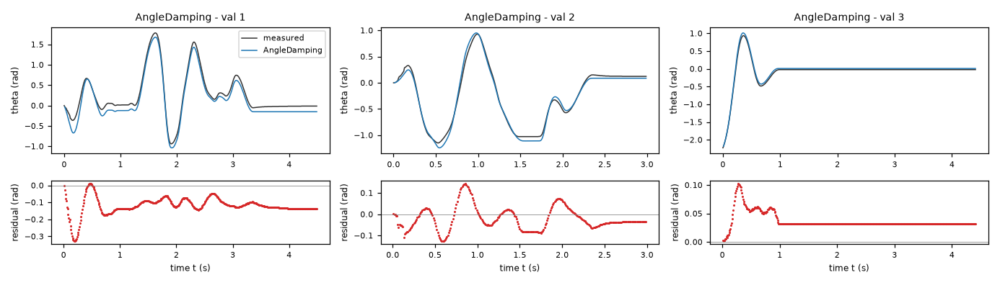
| Data | Trajectory | Scored samples | RMSE | NRMSE | R² | Failure |
|---|---|---|---|---|---|---|
| training data | 1 | 449 of 449 | 0.04574 | 0.1783 | 0.9682 | none |
| training data | 2 | 449 of 449 | 0.0506 | 0.07593 | 0.9942 | none |
| training data | 3 | 299 of 299 | 0.07731 | 0.1637 | 0.9732 | none |
| training data | 4 | 299 of 299 | 0.0732 | 0.08931 | 0.992 | none |
| training data | 5 | 441 of 441 | 0.02409 | 0.06293 | 0.996 | none |
| training data | 6 | 441 of 441 | 0.05678 | 0.1244 | 0.9845 | none |
| training data | 7 | 441 of 441 | 0.08172 | 0.1575 | 0.9752 | none |
| training data | 8 | 140 of 140 | 0.1351 | 0.8224 | 0.3236 | none |
| training data | 9 | 140 of 140 | 0.03561 | 0.1628 | 0.9735 | none |
| training data | 10 | 140 of 140 | 0.03281 | 0.6673 | 0.5547 | none |
| training data | 11 | 90 of 90 | 0.01463 | 0.08891 | 0.9921 | none |
| training data | 12 | 90 of 90 | 0.0142 | 2.783 | -6.745 | none |
| training data | 13 | 90 of 90 | 0.04264 | 0.07848 | 0.9938 | none |
| validation data | 1 | 449 of 449 | 0.1293 | 0.2365 | 0.9441 | none |
| validation data | 2 | 299 of 299 | 0.05889 | 0.1053 | 0.9889 | none |
| validation data | 3 | 441 of 441 | 0.03973 | 0.1057 | 0.9888 | none |
| test data | test-1 | 449 of 449 | 0.01775 | 0.04701 | 0.9978 | none |
| test data | test-2 | 299 of 299 | 0.03676 | 0.05948 | 0.9965 | none |
| test data | test-3 | 140 of 140 | 0.01939 | 0.3662 | 0.8659 | none |
| test data | test-4 | 90 of 90 | 0.02687 | 0.05089 | 0.9974 | none |
RMSE of theta in rad; NRMSE = RMSE / σ and R² = 1 − SSE / Σ(y[k] − μ)², with μ and σ the mean and the population standard deviation of the measured output on the scored samples.
a = 30.6 rad/(s^2 V) (fitted), g = 112.9 rad/s^2 (fitted), b = 2.013 1/s (fitted), c = 19.51 rad/s^2 (fitted), v = 0.12 rad/s (fitted), us = 7.9 V (fitted)theta: 0.06307 rad · validation error: 0.09235 rad · test error: 0.04574 radEquations as written in the model file
dtheta = omega
domega = (a*us*tanh(u/us) - g*sin(theta)) - b*omega - c*tanh(omega/v) - (1 - tanh(omega/v)**2)*Min(Max((a*us*tanh(u/us) - g*sin(theta)), -(c)), (c))
Equations with the values substituted
Every parameter is replaced by its value with 4 significant digits.
Parameters and estimation
| Name | Value | Unit | Type | Description |
|---|---|---|---|---|
a | 30.6027 | rad/(s^2 V) | fitted | a is the positive motor acceleration gain, estimated jointly by the final open-loop angle least-squares fit. |
g | 112.895 | rad/s^2 | fitted | g is the positive nominal restoring acceleration amplitude, estimated jointly by the final open-loop angle least-squares fit. |
b | 2.01336 | 1/s | fitted | b is the positive viscous acceleration coefficient (or its unmodulated value in AngleDamping), estimated jointly by the final open-loop angle least-squares fit. |
c | 19.5104 | rad/s^2 | fitted | c is the positive moving-friction acceleration magnitude (reference value when modulated, high-speed limit in StribeckStiction), estimated jointly by the final open-loop angle least-squares fit. |
v | 0.12 | rad/s | fitted | v is the positive speed regularization scale, estimated jointly by the final open-loop angle least-squares fit; the lower bound prevents excessively stiff numerical dynamics. |
us | 7.89985 | V | fitted | us is the positive motor saturation voltage scale, estimated jointly by the final open-loop angle least-squares fit. |
- Criterion minimized
Minimize the sum of squared open-loop angle residuals , in rad, over every sample after the first within each supplied trajectory. Every predicted sample receives equal weight; there is no per-trajectory normalization and no acceleration penalty. This matches the evaluation metric and lets free responses constrain stopping rather than letting their numerous zero derivatives dominate a derivative regression.
- Data
Final estimation uses
data/train.csv, all 13 trajectories and 3522 rows, anddata/val.csv, all 3 trajectories and 1192 rows. There are 4714 rows in total and 4698 scored residuals after excluding each trajectory initial sample. No moving or resting rows are discarded in the final simulation fit. Each trajectory starts from its own first loggedthetaandomega; recordeduis held constant over each s interval. The former validation file was deliberately reused for the final fit after initial train-only model comparisons, to use the limited available transient information; its refit scores are not held-out validation.- Method
Bound-constrained nonlinear least squares, using
scipy.optimize.least_squareswith the trust-region reflective algorithm (method = 'trf'), linear residual loss, Jacobian scaling (x_scale = 'jac'), forward two-point finite differences and . The maximum number of residual evaluations was ; the three stopping tolerances were , and . All parameters in this file were fitted together in this final step. The initial guesses were rad/(s^2 V); rad/s^2; 1/s; rad/s^2; rad/s; V. They came from the earlier train-only simulation fit of this same family, selected by lowest training sum of squares; that stage was initialized by the physical moving-regime regression, not by random search. The bounds were rad/(s^2 V); rad/s^2; 1/s; rad/s^2; rad/s; V. Positive coefficients enforce the torque and dissipation signs; the finite bounds on modulation and speed parameters avoid extreme extrapolation and excessive RK4 stiffness. No seed applies: the procedure is deterministic. The final estimate shown is the lower-cost result of two recorded starting points for this family;candidate_config.jsonrecords the winning starting point andjoint_results.jsonrecords both fits. Model simulation uses oursimulatefunction compiled with Numba, classical RK4 at s and zero-order-held loggedu. No measured states are substituted after initialization. The angle-only objective matches the scored variable and avoids treating centrally differentiated encoder noise as exact force measurements. The algorithm is a local optimizer; global optimality is not claimed. The optimization method is documented in the SciPyleast_squaresAPI; the record here specifies the actual settings, rather than relying on defaults alone.- Script
fit_candidates.py
The agent's explanation
Monotone saturating actuator with nonlinear pendulum dynamics and analytic static-friction cancellation. These are physically motivated grey-box ordinary differential equations, not an exact implementation of a named hysteretic friction model. General context, cited from memory without a successfully fetched source: B. Armstrong-Helouvry, P. Dupont and C. Canudas de Wit, 'A survey of models, analysis tools and compensation methods for the control of machines with friction', Automatica 30(7), 1083-1138 (1994). The particular cancellation or clipping expression here was constructed for this task and is not attributed to that survey.
The states are theta in rad and omega in rad/s; the exogenous input is u in V. The equation enforces kinematics. For discussion only, define in rad/s^2; it is expanded directly in the delivered expression, not an extra state. The term represents voltage-proportional motor acceleration except where explicitly saturated. The term represents pendulum-like restoring torque per inertia. The term represents viscous damping except where explicitly modulated. Only normalized acceleration coefficients are identifiable: inertia and physical torques are not separately estimated. The moving friction term is in rad/s^2. Define , a dimensionless near-rest weight. The term cancels subthreshold applied acceleration exactly at rest, and fades away during motion. At rad/s it reduces to ; therefore a continuum of exact resting equilibria exists when in rad/s^2. This is a memoryless analytic sticking approximation, not a separately identified elastic friction state. Replace the linear voltage torque by , in rad/s^2. Its input derivative is nonnegative at every voltage; it approaches bounded torque at large voltage. The saturation is empirical and does not introduce a motor-current state. All coefficients controlling motor gain, damping and friction magnitude are positive. At rad/s and V, the unbalanced restoring drive has sign opposite theta on rad; clipping can only reduce its magnitude. Thus . For fixed theta and omega, clipping is nondecreasing with slope between zero and one, and the gate is between zero and one; hence the complete input map is nondecreasing. Exact stiction necessarily creates flat input intervals.
The shared pendulum, linear motor and viscous terms were chosen from physical torque balance. Moving-row bounded linear least squares on rad/s in data/train.csv supplied initial coefficients; exploratory_derivatives.py records that screening. Initial simulation fits used the 13 training trajectories; independent initial comparisons used all 3 validation trajectories. Smooth Coulomb, analytic stiction, Stribeck, angle-modulated damping/friction, restoring harmonics, motor saturation and asymmetric moving friction were screened; multistart fits checked stopping-event local minima. No genetic symbolic regression was run. The proposed structures, rather than black-box predictors, were compared directly by open-loop simulation. The initial voltage-cubic screening gave negligible derivative-fit improvement, but open-loop motor saturation improved one driven training trajectory. A positive-scale tanh actuator was tested instead of a cubic because it remains monotone across the entire required voltage interval. This candidate preserves a distinct actuator nonlinearity for evaluation, though the grouped holdout did not favor it over the recommendation.
The supplied records are short, mostly at rest in free response, and do not identify motor current, inertia, presliding displacement, temperature or trajectory-to-trajectory changes. The first logged velocity is imposed even when numerical differentiation makes it an uncertain initial condition. A memoryless law cannot describe full friction hysteresis. Parameter values are effective coefficients for these experiments, not independently measured material constants. The actual training voltage range was approximately V, so motor behavior near the required extremes is extrapolation. Model selection used the supplied data, including grouped holdout diagnostics, and is not an untouched external test. In the final fit the former validation file was reused, so its final RMSE must not be called independent validation performance. Observed voltages are mostly within the nearly linear portion; the inferred saturation scale is extrapolative and may absorb omitted motor dynamics or voltage timing effects. The all-data refit angle RMSE is 0.071619 rad over 4698 predicted samples; the training-file RMSE is 0.063067 rad and the reused-validation-file RMSE is 0.092350 rad. Conditional leave-one-trajectory-out RMSE is 0.083118 rad over the same sample count: each of the 16 supplied trajectories was omitted in turn and simulated from its first logged state, with fit parameters reestimated on the other 15. These fits were warm-started from the full-data estimate and are diagnostic rather than nested model-selection validation.
Physical requirements
| Requirement | Statement | Outcome | Detail |
|---|---|---|---|
| R1 | proof | the quantity is identically zero on the domain | |
| R2 | inconclusive | no violation found at the 10000 sampled points (largest value of Q -0.0, tolerance 0.0); this is not a proof | |
| R3 | inconclusive | no violation found at the 10000 sampled points (largest value of Q -1.8281065234415372, tolerance 0.0); this is not a proof |
Plots of simulated and measured theta, and errors per trajectory
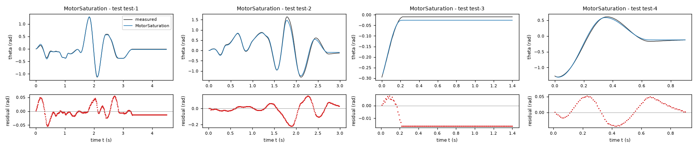
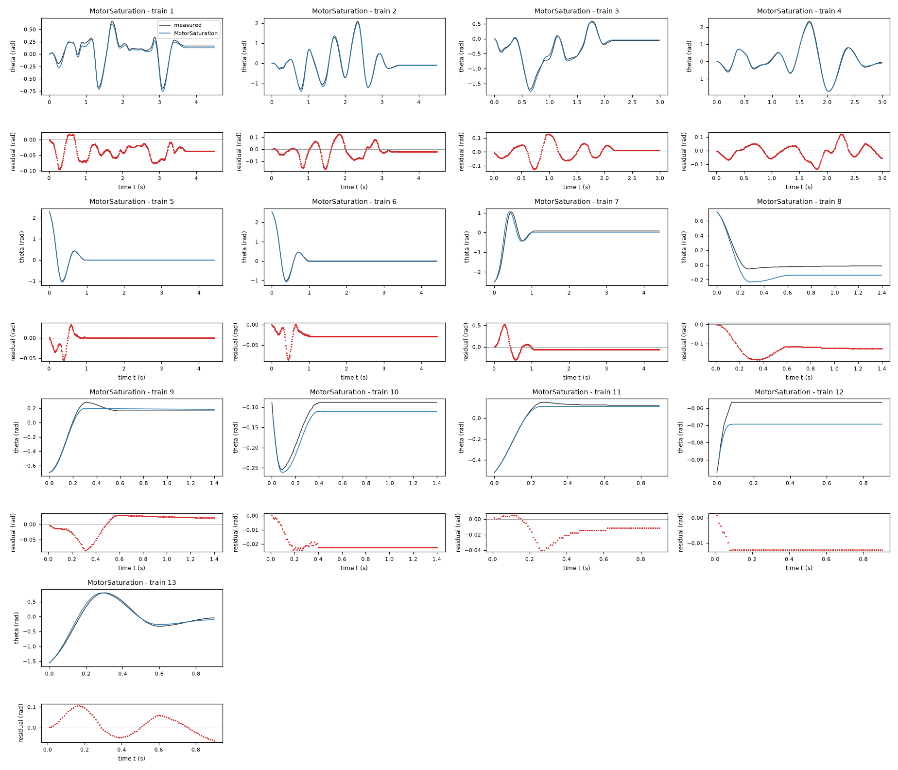
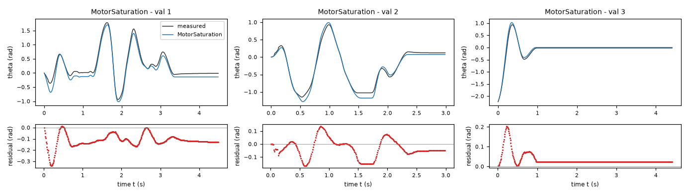
| Data | Trajectory | Scored samples | RMSE | NRMSE | R² | Failure |
|---|---|---|---|---|---|---|
| training data | 1 | 449 of 449 | 0.04322 | 0.1685 | 0.9716 | none |
| training data | 2 | 449 of 449 | 0.05784 | 0.08679 | 0.9925 | none |
| training data | 3 | 299 of 299 | 0.04906 | 0.1039 | 0.9892 | none |
| training data | 4 | 299 of 299 | 0.05036 | 0.06145 | 0.9962 | none |
| training data | 5 | 441 of 441 | 0.011 | 0.02874 | 0.9992 | none |
| training data | 6 | 441 of 441 | 0.02976 | 0.0652 | 0.9957 | none |
| training data | 7 | 441 of 441 | 0.1251 | 0.2411 | 0.9419 | none |
| training data | 8 | 140 of 140 | 0.1286 | 0.7831 | 0.3868 | none |
| training data | 9 | 140 of 140 | 0.03294 | 0.1506 | 0.9773 | none |
| training data | 10 | 140 of 140 | 0.02113 | 0.4297 | 0.8154 | none |
| training data | 11 | 90 of 90 | 0.01779 | 0.1081 | 0.9883 | none |
| training data | 12 | 90 of 90 | 0.01232 | 2.415 | -4.834 | none |
| training data | 13 | 90 of 90 | 0.04973 | 0.09153 | 0.9916 | none |
| validation data | 1 | 449 of 449 | 0.128 | 0.2341 | 0.9452 | none |
| validation data | 2 | 299 of 299 | 0.07716 | 0.138 | 0.981 | none |
| validation data | 3 | 441 of 441 | 0.04764 | 0.1268 | 0.9839 | none |
| test data | test-1 | 449 of 449 | 0.02017 | 0.05341 | 0.9971 | none |
| test data | test-2 | 299 of 299 | 0.07652 | 0.1238 | 0.9847 | none |
| test data | test-3 | 140 of 140 | 0.01502 | 0.2838 | 0.9195 | none |
| test data | test-4 | 90 of 90 | 0.02998 | 0.05678 | 0.9968 | none |
RMSE of theta in rad; NRMSE = RMSE / σ and R² = 1 − SSE / Σ(y[k] − μ)², with μ and σ the mean and the population standard deviation of the measured output on the scored samples.
2 Course of the run
The system prompt, TASK.md and FORMAT.md that the agent received are shown on the page of the experiment.
0:00Harness: opening message to the agent
10:10Read TASK.md0.01
5,474 input and 19 output tokens; 0.011 USD for this turn.
TASK.md
output as sent to the agent (6,212 characters, 44 lines)
[TASK.md: 6185 characters] # Task: Rotational motion under dry friction, driven by a DC motor (lab rig) ## 1 System and intended use Data from a real lab rig: a rotational motion system with adjustable dry friction, driven by a voltage-controlled DC motor. A leaf spring presses a felt pad against a rotating disc. The dry-friction level is approximately constant across all recordings; bearing friction (viscous and dry) is present too. Zero angle is the hanging equilibrium. Each row is one sample of the angle theta (rad), the angular velocity omega (rad/s), the motor voltage u (V, an exogenous input) and the angular acceleration domega (rad/s^2), sampled with period T_s = 0.01 s (100 Hz). The state-space model consists of an unknown (sought) closed-form nonlinear expression: domega, the time derivative of omega, as functions of theta, omega and u; and the kinematic identity dtheta = omega as a formal requirement (R1). The training and validation files each contain several separate trajectories of two kinds, marked by the column `trajectory`; a file is not one contiguous trajectory. Driven trajectories start at rest at theta = 0 with a random binary voltage signal applied throughout. Free-response trajectories start from an initial angle with u = 0 throughout; most of their samples are at rest inside the stick band. One model must cover both regimes. The signals come from a digital encoder and numerical differentiation. Simulation of the angle. The model is integrated from the first (theta, omega) sample of a held-out trajectory, with the recorded voltage u applied and no further corrections, and the simulated angle is compared with the measured one. The held-out trajectories are of both kinds, driven and free response. The model should give stable, accurate long-horizon simulation, including realistic sticking at rest. ## 2 Data `data/train.csv` holds 3522 samples of training data: 13 trajectories of 450, 450, 300, 300, 442, 442, 442, 141, 141, 141, 91, 91, 91 consecutive samples; the column `trajectory` holds the trajectory number. `data/val.csv` holds 1192 samples of validation data: 3 trajectories of 450, 300, 442 consecutive samples; the column `trajectory` holds the trajectory number. Whether and how you use the validation data is your decision. Row k+1 of a trajectory is the sample that follows row k; different trajectories are separate experiments. The sampling period is T_s = 0.01 s. | Column | Role | Unit | Training range | Description | |---|---|---|---|---| | `theta` | state, scored output | rad | -3.1416 to 3.1416 | angle, state and measured output | | `omega` | state | rad/s | not declared | angular velocity | | `u` | input | V | -10 to 10 | motor voltage, exogenous input | | `domega` | sampled time derivative of `omega` | rad/s^2 | not declared | angular acceleration, the time derivative of omega; a possible fitting target | ## 3 What you deliver A candidate is a continuous-time model of 2 closed-form expressions, `dtheta` and `domega`: the time derivatives of the states `theta` and `omega` as functions of `theta`, `omega` and `u`. The column `domega` is a possible fitting target for the derivative of `omega`; it is not an argument of the expressions. `FORMAT.md` states how an expression is written and what it may contain. Write one file per candidate, `models/<label>.json`; `FORMAT.md` describes the file and gives an example. Write also `models/pool.json`, which lists the labels of your candidates in the order in which they are to be evaluated. You can recommend one candidate that you consider the best-performing. `models/pool.json` then names that candidate and gives your reason. Run `python check_submission.py` to check your files: it prints every error with its location, so that you can correct it. At most 10 candidates are evaluated, in the order of `models/pool.json`. Consider various identification approaches, for example physically motivated structures, symbolic-regression search or sparse regression; before fitting, list the approaches and the model families you will try. Build the pool from structurally different model families, not from variations of one form. Examine the residuals of your best candidates and try structures that can represent what they show. Include only candidates you would defend as a model of the system. ## 4 Evaluation The harness, the software that runs this task, evaluates every candidate on test data that you cannot access. For each test trajectory it starts from the first logged state and integrates the expressions with the classical fourth-order Runge–Kutta method, one step per sampling period, with the logged inputs held constant between samples; a simulated state is never replaced by a later measurement. The score is the root mean squared error (RMSE) between simulated and logged `theta`, in rad, over all test samples after the first of each trajectory. An evaluation fails when a value is not finite, when `theta` leaves [-1000, 1000] rad or `omega` leaves [-1000, 1000] rad/s, or when it takes longer than 60 s. ## 5 Physical requirements A formal requirement is a condition on one expression over a domain of its arguments. The tolerance is the admissible violation margin. The harness checks each requirement symbolically or at sampled points; a check at sampled points that finds no violation is not a proof. A demonstrated violation excludes the candidate from the ranking, unless stated otherwise below. - **R1**: `dtheta` = `omega`; domain: theta ∈ [-3.1416, 3.1416] rad, omega ∈ [-23, 23] rad/s, u ∈ [-10, 10] V; tolerance 0 rad/s. - **R2**: `domega*theta <= 0`; domain: theta ∈ [-π, π] rad, omega = 0 rad/s, u = 0 V; tolerance 0 rad^2/s^2. - **R3**: `domega` is increasing in `u`; domain: theta ∈ [-3.1416, 3.1416] rad, omega ∈ [-23, 23] rad/s, u ∈ [-10, 10] V; tolerance 0 rad/(s^2 V). ## 6 Limits and completion One round: 60 turns, 3600 s of execution time, 10 USD; a turn is one response of yours. When the files pass the check, send the exact message DONE. If the harness's check of the files then fails, you receive its report and may correct the files once. If a limit ends the round earlier, the complete candidate files are evaluated.
20:13Read FORMAT.md; listed the files0.03
6,979 input and 47 output tokens; 0.014 USD for this turn.
FORMAT.md
output as sent to the agent (8,159 characters, 128 lines)
[FORMAT.md: 8130 characters]
# Model file format
This file is the same for every task. `TASK.md` names the expression keys, the variables and the permitted functions of your task.
## Candidate file `models/<label>.json`
Write one JSON file per candidate. The label is the file name: a letter, then up to 31 letters, digits, `_` or `-`. The file has these fields and no others:
- `expressions`: one expression text per expression key named in `TASK.md`.
- `parameters`: one row per parameter. A parameter is a constant of the expressions that you name yourself, for example `a1`. Its row has
- `name`: the name used in the expressions: a letter, then letters, digits or `_`; it differs from every column, expression key, constant and function name;
- `value`: the numerical value;
- `unit`: the unit; `-` for a dimensionless quantity;
- `type`: `fitted` (estimated from data), `fixed` (chosen or known, not estimated) or `tied` (computed from other parameters by `equation`);
- `description`: what the parameter represents; for a fixed value, where the value comes from and why it was chosen; for a value taken over from another candidate or an earlier fit, from which one;
- `equation`: for a tied parameter only: its defining equation over other parameters, given constants and numbers.
- `estimation`: how the values of the fitted parameters of this candidate were obtained and why in this way; for every fitted parameter it must be clear how its value was found. Write the record for this candidate model, not for the run as a whole: its own criterion, data, method and starting values, with the reasons that apply to this candidate. The record has
- `criterion`: what was minimized, on which variable, and why this criterion;
- `data`: the files, trajectories or rows used, and the reason when some were left out;
- `method`: how the values were estimated: the estimation method by its established name and the software function, and why this method and not another; the starting values as numbers, or the statement that the method needs none, and why these starting values; whether all fitted parameters were estimated together in one step and, if not, which parameters were estimated in which step, with which criterion, and why; the seeds where they apply;
- `script`: the file in the working directory that reproduces the values.
- `discussion`: four texts, in this order:
- `family`: the model family by its established name, with a reference where you know one;
- `interpretation`: what each term represents in the system; describe a term without a known physical meaning by its mathematical effect;
- `origin`: how you arrived at the structure of this expression, as distinct from its parameter values, which `estimation` covers: say which of its terms, variables and operators came from physical reasoning, which from a search and which from a guess, what you tried before, and what made you change it;
- `limitations`: what the data do not determine and where the model is not expected to hold.
- `answers`: only when `TASK.md` asks questions about the candidates: one text per question identifier.
- `predecessor`: only in a later round of an interactive session, and optional: the label of the candidate of the previous pool that this candidate revises.
## Expressions
An expression is a text in Python syntax. It may contain:
- the variables that `TASK.md` names as the arguments of the expression;
- your parameters, each with a row in `parameters`;
- the constants `pi` and `E`, the given constants that `TASK.md` lists, and numbers;
- these operators and functions, unless `TASK.md` states another list: `+` `-` `*` `/` `**` `sin` `cos` `tan` `asin` `acos` `atan` `atan2` `sinh` `cosh` `tanh` `exp` `log` `sqrt` `Abs` `sign` `Min` `Max` `Piecewise`.
`**` is the power (not `^`), and `log` is the natural logarithm. `Piecewise` takes pairs `(value, condition)` and ends with a pair `(value, True)`, for example `Piecewise((a1*q, (q > 0) & (q < 1)), (0, True))`. A condition is a comparison `<`, `<=`, `>`, `>=`, `Eq(a, b)` or `Ne(a, b)`, each in parentheses, combined with `&`, `|` and `~`.
A number that fixes the form of the expression, such as 2 in `q**2`, may be written directly. A value obtained by estimation is a parameter with a row in `parameters`, never a number written into the expression. Every parameter row must be used in an expression or in a tie equation.
## Pool file `models/pool.json`
- `order`: the candidate labels in your order;
- `recommended`: the label of the candidate you recommend, or `null` when you recommend none;
- `reason`: why you recommend this candidate, or why you recommend none.
Every file `models/<label>.json` must be listed in `order`.
## Example
An invented task with one input `q` and one output `z`, whose expression key is `z`. The example shows the format only: its model is not a proposal, and its discussion texts say what your texts must contain.
`models/M01.json`:
```json
{
"expressions": {
"z": "a1*q + b1*q**2/n0"
},
"parameters": [
{
"name": "a1",
"value": 0.5,
"unit": "-",
"type": "fitted",
"description": "coefficient of `q`"
},
{
"name": "n0",
"value": 2.0,
"unit": "-",
"type": "fixed",
"description": "normalisation of the quadratic term; chosen as the largest value of `q` in the training data, so that `b1` has the scale of `a1`"
},
{
"name": "b1",
"value": 1.0,
"unit": "-",
"type": "tied",
"equation": "2*a1",
"description": "coefficient of `q**2/n0`, tied to `a1` by the assumption stated in the discussion"
}
],
"estimation": {
"criterion": "sum of squared differences between the expression `z` and the column `z`, because the expression gives `z` directly and no row is known to be more accurate than another",
"data": "data/train.csv, all rows",
"method": "The value of `a1` was estimated by ordinary least squares with numpy.linalg.lstsq. With `b1 = 2*a1` the expression is linear in the one fitted parameter `a1`, so the least-squares solution is obtained directly and an iterative method is not needed; for the same reason the method needs no starting values. `a1` is the only fitted parameter and was estimated in one step. The method uses no random numbers, so that no seed applies.",
"script": "fit_M01.py"
},
"discussion": {
"family": "State the model family by its established name.",
"interpretation": "State what each term represents.",
"origin": "State how you arrived at this expression.",
"limitations": "State what the data do not determine and where the model is not expected to hold."
}
}
```
`models/pool.json`:
```json
{
"order": [
"M01"
],
"recommended": "M01",
"reason": "State why you recommend this candidate, or why you recommend none."
}
```
## Checking
`python check_submission.py` checks every file against these rules and evaluates each expression on the training data. It names each error with its rule. Correct the errors and run it again.
## Writing
- Define every symbol at first use.
- Give every number with its unit and the data it was computed on.
- Name methods by their established names.
- Cite a reference for a model family or a method where one applies. Cite only references you are certain exist, and say when you cite from memory without having checked the source.
- Say what is estimated, what is assumed and what is unknown.
- Give a brief reason for every choice you made: a structure, a criterion, a method, a starting value, a fixed value, a term you removed.
- Write every expression inside a text between backticks, in the syntax of the expressions, for example `a1*q**2`; write it out, do not describe it in words. This holds also for a single parameter, column or expression name, such as `a1`, for a value given to one, such as `a1 = 0.5`, and for a range, such as `0 <= a1 <= 2`. A unit follows outside the backticks; a dimensionless value has no unit and no hyphen after it.
- Describe a term without a known physical meaning by its mathematical effect; do not invent a meaning.
{}output as sent to the agent (189 characters, 9 lines)
[.: 8 entries] data/ models/ FORMAT.md 8130 bytes TASK.md 6203 bytes check_config.json 1013 bytes check_submission.py 102476 bytes data/train.csv 179798 bytes data/val.csv 65407 bytes
30:23Wrote plan.md0.05
9,130 input and 379 output tokens (of which 84 reasoning); 0.022 USD for this turn.
reasoning summary (written by the model provider's summarizer; the model's own reasoning is not available)
Planning efficient simulation
I need to efficiently run an experiment for 60 turns. Before fitting the list of approaches, I’ll write out a plan and then inspect it. Maybe I can delegate the exploratory derivative part to a helper to make it more useful. The main simulation fitting might use SciPy’s least_squares to vectorize trajectories all at once, possibly using RK4 for 450 steps in Python with NumPy for speed. It seems I should also observe wrapping angles.
Before fitting, I will compare these model families:
- A pendulum/DC-motor model with viscous damping and regularized Coulomb friction.
- A static-friction model with a torque dead zone near rest, designed to preserve sticking.
- A Stribeck-friction extension, allowing friction to decrease as speed rises.
- A constrained nonlinear extension if residuals support speed-dependent damping, motor saturation, or angle-dependent torque.
I will use derivative fits for initialization, then compare open-loop simulations with the specified RK4 scheme. I will keep trajectories separate and use validation trajectories to select structures.
plan.md
file content written (694 characters)
Before fitting: compare (1) pendulum/DC motor with viscous damping and regularized Coulomb friction; (2) static friction torque-dead-zone near rest; (3) Stribeck extension of the dead-zone model; (4) constrained nonlinear motor/damping/restoring extensions if residuals justify them. Initialize with derivative regression, optimize long-horizon angle simulations under specified 0.01 s RK4, and select on separate validation trajectories. No black-box delivery and no test-data access. Inspect moving and resting residuals separately. All models impose dtheta=omega, positive input response and restoring behavior at rest. Detailed actual choices and values will be recorded after experiments.
output as sent to the agent (32 characters, 1 lines)
Wrote 694 characters to plan.md.
40:27Ran python -c "import pandas as pd; import numpy as np; a=pd.read_csv('data/train.csv'); b=pd…0.07
9,529 input and 197 output tokens; 0.021 USD for this turn.
$ python -c "import pandas as pd; import numpy as np; a=pd.read_csv('data/train.csv'); b=pd.read_csv('data/val.csv'); print(a.head(10).to_string()); print(a.describe().to_string()); print(a.groupby('trajectory').agg(n=('theta','size'),tmin=('theta','min'),tmax=('theta','max'),wmin=('omega','min'),wmax=('omega','max'),umin=('u','min'),umax=('u','max'),last=('theta','last')).to_string()); print('VAL'); print(b.groupby('trajectory').agg(n=('theta','size'),tmin=('theta','min'),tmax=('theta','max'),wmin=('omega','min'),wmax=('omega','max'),umin=('u','min'),umax=('u','max'),last=('theta','last')).to_string())"output as sent to the agent (3,106 characters, 42 lines)
[exit status 0]
theta omega u domega trajectory
0 0.000000 0.000000 1.286047 3.141593e+01 1
1 0.000000 0.314159 1.218545 2.356194e+01 1
2 0.006283 0.471239 1.087069 7.853982e+00 1
3 0.009425 0.471239 0.830988 7.853982e+00 1
4 0.015708 0.628319 0.332211 3.000000e-15 1
5 0.021991 0.471239 -0.639274 -2.356194e+01 1
6 0.025133 0.157080 -1.138037 -2.356194e+01 1
7 0.025133 0.000000 -1.394085 -2.356194e+01 1
8 0.025133 -0.314159 -1.525493 -3.141593e+01 1
9 0.018850 -0.628319 -1.592860 -2.356194e+01 1
theta omega u domega trajectory
count 3522.000000 3522.000000 3522.000000 3.522000e+03 3522.000000
mean -0.003704 0.001204 -0.062450 1.337987e-01 5.249574
std 0.497717 3.988737 1.120932 4.360072e+01 3.168541
min -2.513274 -20.106193 -4.945106 -1.963495e+02 1.000000
25% -0.087965 0.000000 0.000000 -6.700000e-14 2.000000
50% 0.001571 0.000000 0.000000 0.000000e+00 5.000000
75% 0.122522 0.471239 0.000000 6.900000e-14 7.000000
max 2.535265 14.451326 3.952501 1.806416e+02 13.000000
n tmin tmax wmin wmax umin umax last
trajectory
1 450 -0.694292 0.662876 -8.953539 5.811946 -3.895307 3.177440 0.163363
2 450 -1.284911 2.092301 -20.106193 14.451326 -3.613810 3.609829 -0.087965
3 300 -1.693318 0.584336 -9.424778 8.639380 -4.945106 3.952501 -0.056549
4 300 -1.734159 2.334203 -18.221237 13.351769 -4.257345 3.582538 -0.043982
5 442 -1.008451 2.277655 -14.765485 6.911504 0.000000 0.000000 -0.012566
6 442 -1.017876 2.535265 -15.236724 7.068583 0.000000 0.000000 0.003142
7 442 -2.513274 1.055575 -7.696902 13.823008 0.000000 0.000000 0.078540
8 141 -0.053407 0.722566 -4.084070 0.157080 0.000000 0.000000 -0.012566
9 141 -0.694292 0.282743 -0.628319 4.869469 0.000000 0.000000 0.163363
10 141 -0.254469 -0.087965 -3.926991 0.785398 0.000000 0.000000 -0.087965
11 91 -0.518363 0.150796 -0.314159 3.455752 0.000000 0.000000 0.122522
12 91 -0.097389 -0.056549 0.000000 0.785398 0.000000 0.000000 -0.056549
13 91 -1.555088 0.797965 -5.969026 11.152654 0.000000 0.000000 -0.043982
VAL
n tmin tmax wmin wmax umin umax last
trajectory
1 450 -0.939336 1.781283 -17.907078 10.524335 -2.912047 3.839543 -0.012566
2 300 -1.149823 0.929911 -8.325221 8.325221 -4.819706 3.379713 0.122522
3 442 -2.227389 0.936195 -7.382743 13.194689 0.000000 0.000000 -0.021991
50:33Started a helper agent (Inspect derivative residuals using only data/train.csv and data/val.c…)0.09
11,127 input and 137 output tokens; 0.024 USD for this turn.
{
"task": "Inspect derivative residuals using only data/train.csv and data/val.csv. Fit physically constrained simple moving-regime model acceleration = motor*u - gravity*sin(theta) - viscous*omega - coulomb*sign(omega), restricting |omega|>0.5. Analyze systematic residuals vs theta omega u, including time alignment numerical derivative. Suggest structurally distinct defensible extensions and initialize parameter values. Write your code/results to exploratory_derivatives.py / exploratory_results.txt. Do not write final model files. No web needed unless referencing niche claims; use data-based analysis.",
"max_turns": 8
}output as sent to the agent (119 characters, 2 lines)
Helper helper-1 stopped because the turn limit of the helper-1 was reached (8 turns, 0.2814 USD). Its last text: (none)
0:33Harness: helper agent helper-1 started
friction-driven
0:37Helper agent helper-1: read TASK.md, FORMAT.md; listed the files of data0.10
5,044 input and 64 output tokens; 0.011 USD for this turn.
TASK.md
output as sent to the agent (6,212 characters, 44 lines)
[TASK.md: 6185 characters] # Task: Rotational motion under dry friction, driven by a DC motor (lab rig) ## 1 System and intended use Data from a real lab rig: a rotational motion system with adjustable dry friction, driven by a voltage-controlled DC motor. A leaf spring presses a felt pad against a rotating disc. The dry-friction level is approximately constant across all recordings; bearing friction (viscous and dry) is present too. Zero angle is the hanging equilibrium. Each row is one sample of the angle theta (rad), the angular velocity omega (rad/s), the motor voltage u (V, an exogenous input) and the angular acceleration domega (rad/s^2), sampled with period T_s = 0.01 s (100 Hz). The state-space model consists of an unknown (sought) closed-form nonlinear expression: domega, the time derivative of omega, as functions of theta, omega and u; and the kinematic identity dtheta = omega as a formal requirement (R1). The training and validation files each contain several separate trajectories of two kinds, marked by the column `trajectory`; a file is not one contiguous trajectory. Driven trajectories start at rest at theta = 0 with a random binary voltage signal applied throughout. Free-response trajectories start from an initial angle with u = 0 throughout; most of their samples are at rest inside the stick band. One model must cover both regimes. The signals come from a digital encoder and numerical differentiation. Simulation of the angle. The model is integrated from the first (theta, omega) sample of a held-out trajectory, with the recorded voltage u applied and no further corrections, and the simulated angle is compared with the measured one. The held-out trajectories are of both kinds, driven and free response. The model should give stable, accurate long-horizon simulation, including realistic sticking at rest. ## 2 Data `data/train.csv` holds 3522 samples of training data: 13 trajectories of 450, 450, 300, 300, 442, 442, 442, 141, 141, 141, 91, 91, 91 consecutive samples; the column `trajectory` holds the trajectory number. `data/val.csv` holds 1192 samples of validation data: 3 trajectories of 450, 300, 442 consecutive samples; the column `trajectory` holds the trajectory number. Whether and how you use the validation data is your decision. Row k+1 of a trajectory is the sample that follows row k; different trajectories are separate experiments. The sampling period is T_s = 0.01 s. | Column | Role | Unit | Training range | Description | |---|---|---|---|---| | `theta` | state, scored output | rad | -3.1416 to 3.1416 | angle, state and measured output | | `omega` | state | rad/s | not declared | angular velocity | | `u` | input | V | -10 to 10 | motor voltage, exogenous input | | `domega` | sampled time derivative of `omega` | rad/s^2 | not declared | angular acceleration, the time derivative of omega; a possible fitting target | ## 3 What you deliver A candidate is a continuous-time model of 2 closed-form expressions, `dtheta` and `domega`: the time derivatives of the states `theta` and `omega` as functions of `theta`, `omega` and `u`. The column `domega` is a possible fitting target for the derivative of `omega`; it is not an argument of the expressions. `FORMAT.md` states how an expression is written and what it may contain. Write one file per candidate, `models/<label>.json`; `FORMAT.md` describes the file and gives an example. Write also `models/pool.json`, which lists the labels of your candidates in the order in which they are to be evaluated. You can recommend one candidate that you consider the best-performing. `models/pool.json` then names that candidate and gives your reason. Run `python check_submission.py` to check your files: it prints every error with its location, so that you can correct it. At most 10 candidates are evaluated, in the order of `models/pool.json`. Consider various identification approaches, for example physically motivated structures, symbolic-regression search or sparse regression; before fitting, list the approaches and the model families you will try. Build the pool from structurally different model families, not from variations of one form. Examine the residuals of your best candidates and try structures that can represent what they show. Include only candidates you would defend as a model of the system. ## 4 Evaluation The harness, the software that runs this task, evaluates every candidate on test data that you cannot access. For each test trajectory it starts from the first logged state and integrates the expressions with the classical fourth-order Runge–Kutta method, one step per sampling period, with the logged inputs held constant between samples; a simulated state is never replaced by a later measurement. The score is the root mean squared error (RMSE) between simulated and logged `theta`, in rad, over all test samples after the first of each trajectory. An evaluation fails when a value is not finite, when `theta` leaves [-1000, 1000] rad or `omega` leaves [-1000, 1000] rad/s, or when it takes longer than 60 s. ## 5 Physical requirements A formal requirement is a condition on one expression over a domain of its arguments. The tolerance is the admissible violation margin. The harness checks each requirement symbolically or at sampled points; a check at sampled points that finds no violation is not a proof. A demonstrated violation excludes the candidate from the ranking, unless stated otherwise below. - **R1**: `dtheta` = `omega`; domain: theta ∈ [-3.1416, 3.1416] rad, omega ∈ [-23, 23] rad/s, u ∈ [-10, 10] V; tolerance 0 rad/s. - **R2**: `domega*theta <= 0`; domain: theta ∈ [-π, π] rad, omega = 0 rad/s, u = 0 V; tolerance 0 rad^2/s^2. - **R3**: `domega` is increasing in `u`; domain: theta ∈ [-3.1416, 3.1416] rad, omega ∈ [-23, 23] rad/s, u ∈ [-10, 10] V; tolerance 0 rad/(s^2 V). ## 6 Limits and completion One round: 60 turns, 3600 s of execution time, 10 USD; a turn is one response of yours. When the files pass the check, send the exact message DONE. If the harness's check of the files then fails, you receive its report and may correct the files once. If a limit ends the round earlier, the complete candidate files are evaluated.
FORMAT.md
output as sent to the agent (8,159 characters, 128 lines)
[FORMAT.md: 8130 characters]
# Model file format
This file is the same for every task. `TASK.md` names the expression keys, the variables and the permitted functions of your task.
## Candidate file `models/<label>.json`
Write one JSON file per candidate. The label is the file name: a letter, then up to 31 letters, digits, `_` or `-`. The file has these fields and no others:
- `expressions`: one expression text per expression key named in `TASK.md`.
- `parameters`: one row per parameter. A parameter is a constant of the expressions that you name yourself, for example `a1`. Its row has
- `name`: the name used in the expressions: a letter, then letters, digits or `_`; it differs from every column, expression key, constant and function name;
- `value`: the numerical value;
- `unit`: the unit; `-` for a dimensionless quantity;
- `type`: `fitted` (estimated from data), `fixed` (chosen or known, not estimated) or `tied` (computed from other parameters by `equation`);
- `description`: what the parameter represents; for a fixed value, where the value comes from and why it was chosen; for a value taken over from another candidate or an earlier fit, from which one;
- `equation`: for a tied parameter only: its defining equation over other parameters, given constants and numbers.
- `estimation`: how the values of the fitted parameters of this candidate were obtained and why in this way; for every fitted parameter it must be clear how its value was found. Write the record for this candidate model, not for the run as a whole: its own criterion, data, method and starting values, with the reasons that apply to this candidate. The record has
- `criterion`: what was minimized, on which variable, and why this criterion;
- `data`: the files, trajectories or rows used, and the reason when some were left out;
- `method`: how the values were estimated: the estimation method by its established name and the software function, and why this method and not another; the starting values as numbers, or the statement that the method needs none, and why these starting values; whether all fitted parameters were estimated together in one step and, if not, which parameters were estimated in which step, with which criterion, and why; the seeds where they apply;
- `script`: the file in the working directory that reproduces the values.
- `discussion`: four texts, in this order:
- `family`: the model family by its established name, with a reference where you know one;
- `interpretation`: what each term represents in the system; describe a term without a known physical meaning by its mathematical effect;
- `origin`: how you arrived at the structure of this expression, as distinct from its parameter values, which `estimation` covers: say which of its terms, variables and operators came from physical reasoning, which from a search and which from a guess, what you tried before, and what made you change it;
- `limitations`: what the data do not determine and where the model is not expected to hold.
- `answers`: only when `TASK.md` asks questions about the candidates: one text per question identifier.
- `predecessor`: only in a later round of an interactive session, and optional: the label of the candidate of the previous pool that this candidate revises.
## Expressions
An expression is a text in Python syntax. It may contain:
- the variables that `TASK.md` names as the arguments of the expression;
- your parameters, each with a row in `parameters`;
- the constants `pi` and `E`, the given constants that `TASK.md` lists, and numbers;
- these operators and functions, unless `TASK.md` states another list: `+` `-` `*` `/` `**` `sin` `cos` `tan` `asin` `acos` `atan` `atan2` `sinh` `cosh` `tanh` `exp` `log` `sqrt` `Abs` `sign` `Min` `Max` `Piecewise`.
`**` is the power (not `^`), and `log` is the natural logarithm. `Piecewise` takes pairs `(value, condition)` and ends with a pair `(value, True)`, for example `Piecewise((a1*q, (q > 0) & (q < 1)), (0, True))`. A condition is a comparison `<`, `<=`, `>`, `>=`, `Eq(a, b)` or `Ne(a, b)`, each in parentheses, combined with `&`, `|` and `~`.
A number that fixes the form of the expression, such as 2 in `q**2`, may be written directly. A value obtained by estimation is a parameter with a row in `parameters`, never a number written into the expression. Every parameter row must be used in an expression or in a tie equation.
## Pool file `models/pool.json`
- `order`: the candidate labels in your order;
- `recommended`: the label of the candidate you recommend, or `null` when you recommend none;
- `reason`: why you recommend this candidate, or why you recommend none.
Every file `models/<label>.json` must be listed in `order`.
## Example
An invented task with one input `q` and one output `z`, whose expression key is `z`. The example shows the format only: its model is not a proposal, and its discussion texts say what your texts must contain.
`models/M01.json`:
```json
{
"expressions": {
"z": "a1*q + b1*q**2/n0"
},
"parameters": [
{
"name": "a1",
"value": 0.5,
"unit": "-",
"type": "fitted",
"description": "coefficient of `q`"
},
{
"name": "n0",
"value": 2.0,
"unit": "-",
"type": "fixed",
"description": "normalisation of the quadratic term; chosen as the largest value of `q` in the training data, so that `b1` has the scale of `a1`"
},
{
"name": "b1",
"value": 1.0,
"unit": "-",
"type": "tied",
"equation": "2*a1",
"description": "coefficient of `q**2/n0`, tied to `a1` by the assumption stated in the discussion"
}
],
"estimation": {
"criterion": "sum of squared differences between the expression `z` and the column `z`, because the expression gives `z` directly and no row is known to be more accurate than another",
"data": "data/train.csv, all rows",
"method": "The value of `a1` was estimated by ordinary least squares with numpy.linalg.lstsq. With `b1 = 2*a1` the expression is linear in the one fitted parameter `a1`, so the least-squares solution is obtained directly and an iterative method is not needed; for the same reason the method needs no starting values. `a1` is the only fitted parameter and was estimated in one step. The method uses no random numbers, so that no seed applies.",
"script": "fit_M01.py"
},
"discussion": {
"family": "State the model family by its established name.",
"interpretation": "State what each term represents.",
"origin": "State how you arrived at this expression.",
"limitations": "State what the data do not determine and where the model is not expected to hold."
}
}
```
`models/pool.json`:
```json
{
"order": [
"M01"
],
"recommended": "M01",
"reason": "State why you recommend this candidate, or why you recommend none."
}
```
## Checking
`python check_submission.py` checks every file against these rules and evaluates each expression on the training data. It names each error with its rule. Correct the errors and run it again.
## Writing
- Define every symbol at first use.
- Give every number with its unit and the data it was computed on.
- Name methods by their established names.
- Cite a reference for a model family or a method where one applies. Cite only references you are certain exist, and say when you cite from memory without having checked the source.
- Say what is estimated, what is assumed and what is unknown.
- Give a brief reason for every choice you made: a structure, a criterion, a method, a starting value, a fixed value, a term you removed.
- Write every expression inside a text between backticks, in the syntax of the expressions, for example `a1*q**2`; write it out, do not describe it in words. This holds also for a single parameter, column or expression name, such as `a1`, for a value given to one, such as `a1 = 0.5`, and for a range, such as `0 <= a1 <= 2`. A unit follows outside the backticks; a dimensionless value has no unit and no hyphen after it.
- Describe a term without a known physical meaning by its mathematical effect; do not invent a meaning.
data
output as sent to the agent (72 characters, 3 lines)
[data: 2 entries] data/train.csv 179798 bytes data/val.csv 65407 bytes
0:41Helper agent helper-1: ran python -c "import pandas as pd,numpy as np,scipy; d=pd.read_csv('data/train.csv'); print(…0.12
8,658 input and 108 output tokens; 0.018 USD for this turn.
$ python -c "import pandas as pd,numpy as np,scipy; d=pd.read_csv('data/train.csv'); print(d.head().to_string());print(d.groupby('trajectory').agg(n=('u','size'),umin=('u','min'),umax=('u','max'),wmin=('omega','min'),wmax=('omega','max')).to_string()); print(pd.read_csv('data/val.csv').head().to_string())"output as sent to the agent (1,590 characters, 28 lines)
[exit status 0]
theta omega u domega trajectory
0 0.000000 0.000000 1.286047 3.141593e+01 1
1 0.000000 0.314159 1.218545 2.356194e+01 1
2 0.006283 0.471239 1.087069 7.853982e+00 1
3 0.009425 0.471239 0.830988 7.853982e+00 1
4 0.015708 0.628319 0.332211 3.000000e-15 1
n umin umax wmin wmax
trajectory
1 450 -3.895307 3.177440 -8.953539 5.811946
2 450 -3.613810 3.609829 -20.106193 14.451326
3 300 -4.945106 3.952501 -9.424778 8.639380
4 300 -4.257345 3.582538 -18.221237 13.351769
5 442 0.000000 0.000000 -14.765485 6.911504
6 442 0.000000 0.000000 -15.236724 7.068583
7 442 0.000000 0.000000 -7.696902 13.823008
8 141 0.000000 0.000000 -4.084070 0.157080
9 141 0.000000 0.000000 -0.628319 4.869469
10 141 0.000000 0.000000 -3.926991 0.785398
11 91 0.000000 0.000000 -0.314159 3.455752
12 91 0.000000 0.000000 0.000000 0.785398
13 91 0.000000 0.000000 -5.969026 11.152654
theta omega u domega trajectory
0 0.000000 -3.141593 -2.520031 94.247780 1
1 -0.031416 -2.199115 -2.519576 78.539816 1
2 -0.043982 -1.570796 -2.518690 23.561945 1
3 -0.062832 -1.727876 -2.516965 -54.977871 1
4 -0.078540 -2.670354 -2.513604 -39.269908 1
2:02Helper agent helper-1: wrote exploratory_derivatives.py0.18
9,483 input and 4,014 output tokens (of which 250 reasoning); 0.059 USD for this turn.
reasoning summary (written by the model provider's summarizer; the model's own reasoning is not available)
Comparing model predictions
I’m thinking about how to compare training and validation errors between smoothed and unsmoothed physical predictions. I'm looking at averages of neighbors and considering double differentiation for temporal smoothing. I need to time shift the range from -3 to 3 on acceleration while aligning current values of theta and omega, focusing on state noise. I’ll also look at direct acceleration and identity derivatives, plus work on the baseline training inference.
exploratory_derivatives.py
file content written (12,609 characters)
"""Derivative-only exploration. Reads only data/train.csv and data/val.csv.
No candidate/final model files are generated. Reproduce with python exploratory_derivatives.py.
"""
import numpy as np
import pandas as pd
from scipy.optimize import lsq_linear, least_squares
TS=0.01 # s, specified in TASK.md
FILES={'train':'data/train.csv','val':'data/val.csv'}
D={k:pd.read_csv(v) for k,v in FILES.items()}
OUT=[]
def emit(s=''): OUT.append(str(s))
def rmse(x): return float(np.sqrt(np.mean(np.asarray(x)**2)))
def features(d, family='base', shift=0):
t=d.theta.to_numpy(); w=d.omega.to_numpy(); u=d.groupby('trajectory').u.shift(shift).to_numpy()
X=[u,-np.sin(t),-w,-np.sign(w)]; names=['motor','gravity','viscous','coulomb']; units=['rad/(s^2 V)','rad/s^2','1/s','rad/s^2']; lower=[0]*4; upper=[np.inf]*4
if family=='quadratic_drag': X += [-w*np.abs(w)]; names+=['quadratic']; units+=['1/rad']; lower+=[0]; upper+=[np.inf]
if family=='angle_drag': X += [-np.cos(t)*w]; names+=['angle_viscous']; units+=['1/s']; lower+=[-np.inf];upper+=[np.inf]
if family=='angle_friction': X += [-np.cos(t)*np.sign(w)]; names+=['angle_coulomb'];units+=['rad/s^2'];lower+=[-np.inf];upper+=[np.inf]
if family=='harmonic_gravity': X += [-np.sin(2*t)]; names+=['gravity2'];units+=['rad/s^2'];lower+=[-np.inf];upper+=[np.inf]
if family=='nonlinear_motor': X += [u**3];names+=['motor3'];units+=['rad/(s^2 V^3)'];lower+=[-np.inf];upper+=[np.inf]
if family=='asymmetric_friction': X += [-np.ones(len(w))];names+=['moving_bias'];units+=['rad/s^2'];lower+=[-np.inf];upper+=[np.inf]
return np.column_stack(X), names, units, (lower,upper)
def mask(d,X): return (np.abs(d.omega.to_numpy())>0.5)&np.isfinite(X).all(axis=1)
def describe_parameters(names,units,p): return ', '.join(f'`{n} = {v:.8g}` {u}' for n,u,v in zip(names,units,p))
def fit(family='base',shift=0,target='domega',robust=False):
X,names,units,bounds=features(D['train'],family,shift); y=D['train'][target].to_numpy();m=mask(D['train'],X)&np.isfinite(y)
p=lsq_linear(X[m],y[m],bounds=bounds,tol=1e-12).x
if robust:p=least_squares(lambda p:X[m]@p-y[m],p,bounds=bounds,loss='soft_l1',f_scale=10).x
return p,names,units
def derivative(d,col):
vals=np.full(len(d),np.nan)
for _,g in d.groupby('trajectory',sort=False):
z=g[col].to_numpy()
if col=='theta': z=np.unwrap(z)
vals[g.index]=np.gradient(z,TS,edge_order=1)
return vals
for d in D.values():
d['numeric_accel']=derivative(d,'omega'); d['numeric_velocity']=derivative(d,'theta')
for col in ['u','domega','numeric_accel']:
for sh in range(-4,5):d[f'{col}_shift{sh}']=d.groupby('trajectory')[col].shift(sh)
emit('DERIVATIVE EXPLORATION; no final model files generated.')
emit('Data: only data/train.csv and data/val.csv. `theta` rad, `omega` rad/s, `u` V, `domega` rad/s^2. Sample period `TS = 0.01` s (TASK.md).')
emit('Moving subset: `Abs(omega) > 0.5` rad/s, selected to exclude near-stick samples, not to characterize static friction.')
emit('Methods: bounded linear least squares (scipy.optimize.lsq_linear), no starting values; all coefficients together; nonnegative basic coefficients. Robust comparison: scipy.optimize.least_squares, soft-L1 residual loss, scale 10 rad/s^2, initialized from bounded least squares. No random seeds apply.')
emit('Error definition throughout: residual `r = domega - prediction` rad/s^2; RMSE = square root of mean squared residual on named subset; mean residual = arithmetic mean of residual. Diagnostic numerical differentiation uses numpy.gradient independently per trajectory; angle unwrapped before differentiation. No reference claims needed: interpretations below are data-based.')
for key,d in D.items():
m=np.abs(d.omega)>0.5
emit(f'{key}: {len(d)} samples, {d.trajectory.nunique()} trajectories, {m.sum()} moving samples.')
for source,target,unit in [('numeric_accel','domega','rad/s^2'),('numeric_velocity','omega','rad/s')]:
interior=d.groupby('trajectory').cumcount().gt(0)&d.groupby('trajectory').cumcount(ascending=False).gt(0)
e=d.loc[interior,source]-d.loc[interior,target]
emit(f'{key} interior derivative identity {source} minus {target}: n={len(e)} samples, RMSE={rmse(e):.9g} {unit}, max absolute error={np.max(np.abs(e)):.9g} {unit}.')
emit(f'{key} omega grid increment: sorted unique positive differences median={np.median(np.diff(np.unique(d.omega))):.9g} rad/s; acceleration unique positive differences median={np.median(np.diff(np.unique(d.domega))):.9g} rad/s^2 (floating roundoff can affect this diagnostic).')
emit('\nBASE AND STRUCTURALLY DISTINCT LINEAR EXTENSIONS (fit train moving rows only; evaluate both files moving rows):')
FAMILIES=['base','quadratic_drag','angle_drag','angle_friction','harmonic_gravity','nonlinear_motor','asymmetric_friction']
RESULT={}
for family in FAMILIES:
p,names,units=fit(family);RESULT[family]=p
emit(f'{family}: '+describe_parameters(names,units,p))
for key,d in D.items():
X,*_=features(d,family);m=mask(d,X);r=d.domega.to_numpy()-X@p
emit(f' {key} moving n={m.sum()} samples RMSE={rmse(r[m]):.7g} rad/s^2; mean residual={np.mean(r[m]):.7g} rad/s^2.')
p,names,units=fit(robust=True)
emit('base robust soft-L1: '+describe_parameters(names,units,p))
for key,d in D.items():
X,*_=features(d);m=mask(d,X);emit(f' {key} moving RMSE={rmse(d.domega.to_numpy()[m]-X[m]@p):.7g} rad/s^2.')
emit('\nINPUT ALIGNMENT: u shifted by integer samples separately per trajectory; shift +1 means previous logged u, delay 0.01 s. Current theta/omega retained. Each shift refits train moving rows.')
for shift in range(-4,5):
p,names,units=fit(shift=shift)
emit(f'shift={shift} samples ({shift*TS:.3g} s): '+describe_parameters(names,units,p))
for key,d in D.items():
X,*_=features(d,shift=shift);m=mask(d,X);emit(f' {key} moving valid n={m.sum()} samples RMSE={rmse(d.domega.to_numpy()[m]-X[m]@p):.7g} rad/s^2.')
emit('\nTIME-AVERAGED REGRESSORS: supplied acceleration equals central velocity derivative on interiors. If velocity is also central angle derivative, acceleration is a second-difference spanning four sample intervals; physical acceleration then has an approximate triangular smoothing kernel rather than an instantaneous target.')
for width in [1,2,3]:
matrices={}
for key,d in D.items():
X,*_=features(d);sm=np.full_like(X,np.nan)
# Discrete triangle [1,2,...,width+1,...,2,1], normalized.
weights=np.r_[np.arange(1,width+2),np.arange(width,0,-1)];weights=weights/weights.sum()
for _,g in d.groupby('trajectory',sort=False):
inds=g.index.to_numpy()
for j in range(4):sm[inds[width:-width],j]=np.convolve(X[inds,j],weights,mode='valid')
matrices[key]=sm
X=matrices['train'];m=mask(D['train'],X);p=lsq_linear(X[m],D['train'].domega.to_numpy()[m],bounds=(0,np.inf)).x
emit(f'Triangular halfwidth={width} samples ({width*TS:.3g} s): '+describe_parameters(['motor','gravity','viscous','coulomb'],['rad/(s^2 V)','rad/s^2','1/s','rad/s^2'],p))
for key,d in D.items():
X=matrices[key];m=mask(d,X);emit(f' {key} moving valid n={m.sum()} samples RMSE={rmse(d.domega.to_numpy()[m]-X[m]@p):.7g} rad/s^2.')
emit('\nBASE RESIDUALS: correlation and equal-frequency bins; each bin reports mean residual, not prediction error magnitude.')
p=RESULT['base']
for key,d in D.items():
X,*_=features(d);m=mask(d,X);dd=d.loc[m].copy();dd['residual']=d.domega.to_numpy()[m]-X[m]@p
emit(f'{key}:')
for col,unit in [('theta','rad'),('omega','rad/s'),('u','V')]:
corr=np.corrcoef(dd[col],dd.residual)[0,1];emit(f' Pearson correlation r with {col}={corr:.7g} (dimensionless).')
cats=pd.qcut(dd[col],6,duplicates='drop')
for _,g in dd.groupby(cats,observed=True):
emit(f' {col} range [{g[col].min():.5g},{g[col].max():.5g}] {unit}, n={len(g)} samples, residual mean={g.residual.mean():.6g} rad/s^2, residual RMSE={rmse(g.residual):.6g} rad/s^2.')
for tr,g in dd.groupby('trajectory'):
emit(f' trajectory {tr}: n={len(g)} moving samples; input kind={"free" if np.all(g.u==0) else "driven"}; residual mean={g.residual.mean():.6g} rad/s^2; RMSE={rmse(g.residual):.6g} rad/s^2.')
for col,z in [('cos(theta)*omega',np.cos(dd.theta)*dd.omega),('cos(theta)*sign(omega)',np.cos(dd.theta)*np.sign(dd.omega)),('sin(2*theta)',np.sin(2*dd.theta)),('omega*Abs(omega)',dd.omega*np.abs(dd.omega)),('u**3',dd.u**3)]:
emit(f' residual Pearson correlation with `{col}`={np.corrcoef(z,dd.residual)[0,1]:.6g} (dimensionless).')
# A coupled nonlinear dissipative drag model with globally positive angle multiplier.
emit('\nPOSITIVE ANGLE-DEPENDENT DAMPING: `motor*u - gravity*sin(theta) - viscous*exp(angle_rate*cos(theta))*omega - coulomb*sign(omega)`. Nonlinear least squares fits all five coefficients, initialized from basic fit and angle_rate=0; positivity bounds on four physical magnitudes; angle_rate bounds [-3,3] dimensionless avoid extreme extrapolation.')
def pred_nonlin(d,p):
a,g,b,c,h=p;return a*d.u.to_numpy()-g*np.sin(d.theta.to_numpy())-b*np.exp(h*np.cos(d.theta.to_numpy()))*d.omega.to_numpy()-c*np.sign(d.omega.to_numpy())
m=np.abs(D['train'].omega.to_numpy())>0.5
p0=np.r_[RESULT['base'],0.0]
res=least_squares(lambda p:(pred_nonlin(D['train'],p)-D['train'].domega.to_numpy())[m],p0,bounds=([0,0,0,0,-3],[np.inf,np.inf,np.inf,np.inf,3]),max_nfev=1000)
emit(describe_parameters(['motor','gravity','viscous','coulomb','angle_rate'],['rad/(s^2 V)','rad/s^2','1/s','rad/s^2','dimensionless'],res.x))
for key,d in D.items():
m=np.abs(d.omega.to_numpy())>0.5;emit(f' {key} moving n={m.sum()} samples RMSE={rmse((d.domega.to_numpy()-pred_nonlin(d,res.x))[m]):.7g} rad/s^2.')
emit('\nINTERPRETATION AND DEFENSIBLE INITIALIZATIONS:')
emit('1. Basic moving balance `motor*u - gravity*sin(theta) - viscous*omega - coulomb*sign(omega)` gives physical starting coefficients above. Moving data do not identify static breakaway torque. Never equate a discontinuous sign friction law with a complete sticking model.')
emit('2. Positive angle-dependent damping above is structurally distinct and globally dissipative. exp multiplier is mathematical modulation, not an established mechanical explanation. The derivative evidence must be checked with open-loop trajectory simulation before accepting.')
emit('3. Angle-dependent Coulomb friction `-(coulomb + angle_coulomb*cos(theta))*sign(omega)` is defensible only if `coulomb >= Abs(angle_coulomb)`; unconstrained extension values above are screening estimates, not final coefficients. Fits that violate this must be projected or refitted. May represent changing friction load, but data alone do not establish that mechanism.')
emit('4. Non-sinusoidal restoring torque `-gravity*sin(theta) - gravity2*sin(2*theta)` is globally restoring on the specified interval when `gravity >= 2*Abs(gravity2)`; screening values above supply starts, not a proof of final validity.')
emit('5. Nonlinear motor `motor*u + motor3*u**3` must satisfy `motor + 3*motor3*u**2 >= 0` throughout required input domain [-10,10] V. Negative unconstrained cubic slopes cannot automatically be submitted; a monotone saturation `gain*voltage_scale*tanh(u/voltage_scale)` is safer, initialized with basic motor gain and voltage_scale=10 V (chosen domain scale, not estimated).')
emit('6. Quadratic dissipative drag `-quadratic*omega*Abs(omega)` has globally correct sign for nonnegative quadratic coefficient. A coefficient hitting zero means these train derivative residuals do not support that extension.')
emit('7. Near-rest sticking extension requires a deadband of net driving torque and a low-speed transition, fitted by simulation rather than extrapolated from selected moving data. Initialize dynamic friction magnitude from basic coulomb, static threshold at the same magnitude, and speed scale 0.2 rad/s (chosen close to encoder velocity grid). Validate carefully: a discontinuity or very steep regularization may be unstable with fixed-step integration.')
emit('Time alignment cannot be resolved solely from a small derivative RMSE advantage: centrally differentiated encoder targets are smoothed and highly quantized; input waveform is also smooth at the sample scale. A delayed or averaged regressor is a diagnostic, not an admissible additional state or a claim of a true physical delay.')
open('exploratory_results.txt','w',encoding='utf-8').write('\n'.join(OUT)+'\n')
print('\n'.join(OUT[:45]))
print('Full results written to exploratory_results.txt')
output as sent to the agent (53 characters, 1 lines)
Wrote 12609 characters to exploratory_derivatives.py.
2:04Helper agent helper-1: ran python exploratory_derivatives.py0.21
13,520 input and 22 output tokens; 0.027 USD for this turn.
$ python exploratory_derivatives.py
output as sent to the agent (5,596 characters, 49 lines)
[exit status 0] DERIVATIVE EXPLORATION; no final model files generated. Data: only data/train.csv and data/val.csv. `theta` rad, `omega` rad/s, `u` V, `domega` rad/s^2. Sample period `TS = 0.01` s (TASK.md). Moving subset: `Abs(omega) > 0.5` rad/s, selected to exclude near-stick samples, not to characterize static friction. Methods: bounded linear least squares (scipy.optimize.lsq_linear), no starting values; all coefficients together; nonnegative basic coefficients. Robust comparison: scipy.optimize.least_squares, soft-L1 residual loss, scale 10 rad/s^2, initialized from bounded least squares. No random seeds apply. Error definition throughout: residual `r = domega - prediction` rad/s^2; RMSE = square root of mean squared residual on named subset; mean residual = arithmetic mean of residual. Diagnostic numerical differentiation uses numpy.gradient independently per trajectory; angle unwrapped before differentiation. No reference claims needed: interpretations below are data-based. train: 3522 samples, 13 trajectories, 1519 moving samples. train interior derivative identity numeric_accel minus domega: n=3496 samples, RMSE=1.50280073e-13 rad/s^2, max absolute error=3.66640052e-12 rad/s^2. train interior derivative identity numeric_velocity minus omega: n=3496 samples, RMSE=1.82479798e-14 rad/s, max absolute error=2.22044605e-13 rad/s. train omega grid increment: sorted unique positive differences median=3.55271368e-15 rad/s; acceleration unique positive differences median=4.26325641e-14 rad/s^2 (floating roundoff can affect this diagnostic). val: 1192 samples, 3 trajectories, 572 moving samples. val interior derivative identity numeric_accel minus domega: n=1186 samples, RMSE=1.4814758e-13 rad/s^2, max absolute error=2.87059265e-12 rad/s^2. val interior derivative identity numeric_velocity minus omega: n=1186 samples, RMSE=1.8534921e-14 rad/s, max absolute error=1.66089364e-13 rad/s. val omega grid increment: sorted unique positive differences median=5.32907052e-15 rad/s; acceleration unique positive differences median=6.1e-14 rad/s^2 (floating roundoff can affect this diagnostic). BASE AND STRUCTURALLY DISTINCT LINEAR EXTENSIONS (fit train moving rows only; evaluate both files moving rows): base: `motor = 26.512691` rad/(s^2 V), `gravity = 108.38543` rad/s^2, `viscous = 1.6181489` 1/s, `coulomb = 19.026032` rad/s^2 train moving n=1519 samples RMSE=10.48809 rad/s^2; mean residual=1.172006 rad/s^2. val moving n=572 samples RMSE=22.33587 rad/s^2; mean residual=4.648133 rad/s^2. quadratic_drag: `motor = 26.512691` rad/(s^2 V), `gravity = 108.38543` rad/s^2, `viscous = 1.6181489` 1/s, `coulomb = 19.026032` rad/s^2, `quadratic = 3.6934468e-27` 1/rad train moving n=1519 samples RMSE=10.48809 rad/s^2; mean residual=1.172006 rad/s^2. val moving n=572 samples RMSE=22.33587 rad/s^2; mean residual=4.648133 rad/s^2. angle_drag: `motor = 26.592457` rad/(s^2 V), `gravity = 109.18421` rad/s^2, `viscous = 2.1955748` 1/s, `coulomb = 19.260765` rad/s^2, `angle_viscous = -0.82809706` 1/s train moving n=1519 samples RMSE=10.32177 rad/s^2; mean residual=1.117939 rad/s^2. val moving n=572 samples RMSE=22.29793 rad/s^2; mean residual=4.807908 rad/s^2. angle_friction: `motor = 26.538944` rad/(s^2 V), `gravity = 109.286` rad/s^2, `viscous = 1.5053311` 1/s, `coulomb = 24.678314` rad/s^2, `angle_coulomb = -6.4263769` rad/s^2 train moving n=1519 samples RMSE=10.23167 rad/s^2; mean residual=1.14165 rad/s^2. val moving n=572 samples RMSE=22.27873 rad/s^2; mean residual=4.842854 rad/s^2. harmonic_gravity: `motor = 26.511261` rad/(s^2 V), `gravity = 107.72467` rad/s^2, `viscous = 1.6070906` 1/s, `coulomb = 19.082115` rad/s^2, `gravity2 = 0.77644335` rad/s^2 train moving n=1519 samples RMSE=10.48194 rad/s^2; mean residual=1.137672 rad/s^2. val moving n=572 samples RMSE=22.34898 rad/s^2; mean residual=4.643533 rad/s^2. nonlinear_motor: `motor = 26.436078` rad/(s^2 V), `gravity = 108.39393` rad/s^2, `viscous = 1.6187964` 1/s, `coulomb = 19.02329` rad/s^2, `motor3 = 0.0072122969` rad/(s^2 V^3) train moving n=1519 samples RMSE=10.48788 rad/s^2; mean residual=1.180271 rad/s^2. val moving n=572 samples RMSE=22.33661 rad/s^2; mean residual=4.65472 rad/s^2. asymmetric_friction: `motor = 26.595733` rad/(s^2 V), `gravity = 108.25695` rad/s^2, `viscous = 1.5857945` 1/s, `coulomb = 19.332142` rad/s^2, `moving_bias = -1.2204687` rad/s^2 train moving n=1519 samples RMSE=10.41967 rad/s^2; mean residual=2.469826e-15 rad/s^2. val moving n=572 samples RMSE=22.09604 rad/s^2; mean residual=3.425011 rad/s^2. base robust soft-L1: `motor = 26.736641` rad/(s^2 V), `gravity = 108.32098` rad/s^2, `viscous = 1.6388371` 1/s, `coulomb = 18.904532` rad/s^2 train moving RMSE=10.49482 rad/s^2. val moving RMSE=22.33698 rad/s^2. INPUT ALIGNMENT: u shifted by integer samples separately per trajectory; shift +1 means previous logged u, delay 0.01 s. Current theta/omega retained. Each shift refits train moving rows. shift=-4 samples (-0.04 s): `motor = 16.340472` rad/(s^2 V), `gravity = 98.028123` rad/s^2, `viscous = 0.2683585` 1/s, `coulomb = 13.131072` rad/s^2 train moving valid n=1517 samples RMSE=32.58422 rad/s^2. val moving valid n=572 samples RMSE=40.03925 rad/s^2. shift=-3 samples (-0.03 s): `motor = 19.144843` rad/(s^2 V), `gravity = 99.610239` rad/s^2, `viscous = 0.52072525` 1/s, `coulomb = 14.162658` rad/s^2 train moving valid n=1519 samples RMSE=28.47865 rad/s^2. val moving valid n=572 samples RMSE=36.2944 rad/s^2. Full results written to exploratory_results.txt
2:11Helper agent helper-1: read exploratory_results.txt0.24
15,509 input and 47 output tokens (of which 18 reasoning); 0.031 USD for this turn.
reasoning summary (written by the model provider's summarizer; the model's own reasoning is not available)
Exploring improvement timelines
I'm thinking about whether we have enough time to enhance our understanding of the value of residuals per trajectory, especially during major initial transients. It feels like there's a lot to unpack here, and I'm curious about how we can approach this subject effectively. I want to ensure we consider all aspects and potential implications of the transients first, then evaluate how enhancing our understanding can lead to positive outcomes.
exploratory_results.txt (offset 6400)
output as sent to the agent (12,332 characters, 110 lines)
[exploratory_results.txt: 18667 characters; from character 6400] .17819` rad/s^2, `viscous = 1.9475954` 1/s, `coulomb = 20.417725` rad/s^2 train moving valid n=1510 samples RMSE=11.22821 rad/s^2. val moving valid n=570 samples RMSE=22.26301 rad/s^2. shift=2 samples (0.02 s): `motor = 26.200116` rad/(s^2 V), `gravity = 115.46579` rad/s^2, `viscous = 2.1270201` 1/s, `coulomb = 21.054314` rad/s^2 train moving valid n=1499 samples RMSE=18.0607 rad/s^2. val moving valid n=568 samples RMSE=26.66823 rad/s^2. shift=3 samples (0.03 s): `motor = 23.860842` rad/(s^2 V), `gravity = 117.61822` rad/s^2, `viscous = 2.120228` 1/s, `coulomb = 20.711313` rad/s^2 train moving valid n=1488 samples RMSE=25.25699 rad/s^2. val moving valid n=565 samples RMSE=33.24837 rad/s^2. shift=4 samples (0.04 s): `motor = 20.36085` rad/(s^2 V), `gravity = 118.07061` rad/s^2, `viscous = 1.9314456` 1/s, `coulomb = 19.366843` rad/s^2 train moving valid n=1477 samples RMSE=31.37945 rad/s^2. val moving valid n=562 samples RMSE=39.58966 rad/s^2. TIME-AVERAGED REGRESSORS: supplied acceleration equals central velocity derivative on interiors. If velocity is also central angle derivative, acceleration is a second-difference spanning four sample intervals; physical acceleration then has an approximate triangular smoothing kernel rather than an instantaneous target. Triangular halfwidth=1 samples (0.01 s): `motor = 27.208649` rad/(s^2 V), `gravity = 109.18223` rad/s^2, `viscous = 1.637607` 1/s, `coulomb = 19.51106` rad/s^2 train moving valid n=1510 samples RMSE=9.822087 rad/s^2. val moving valid n=570 samples RMSE=21.17718 rad/s^2. Triangular halfwidth=2 samples (0.02 s): `motor = 28.081371` rad/(s^2 V), `gravity = 110.31552` rad/s^2, `viscous = 1.6577053` 1/s, `coulomb = 20.194185` rad/s^2 train moving valid n=1499 samples RMSE=9.680634 rad/s^2. val moving valid n=568 samples RMSE=20.33479 rad/s^2. Triangular halfwidth=3 samples (0.03 s): `motor = 29.031089` rad/(s^2 V), `gravity = 111.74324` rad/s^2, `viscous = 1.7020233` 1/s, `coulomb = 20.805672` rad/s^2 train moving valid n=1488 samples RMSE=10.12354 rad/s^2. val moving valid n=565 samples RMSE=20.18167 rad/s^2. BASE RESIDUALS: correlation and equal-frequency bins; each bin reports mean residual, not prediction error magnitude. train: Pearson correlation r with theta=0.03260363 (dimensionless). theta range [-2.5133,-0.61575] rad, n=254 samples, residual mean=-0.731785 rad/s^2, residual RMSE=14.3461 rad/s^2. theta range [-0.61261,-0.24504] rad, n=253 samples, residual mean=0.120387 rad/s^2, residual RMSE=9.19577 rad/s^2. theta range [-0.2419,-0.062832] rad, n=259 samples, residual mean=2.36942 rad/s^2, residual RMSE=8.31493 rad/s^2. theta range [-0.05969,0.16965] rad, n=250 samples, residual mean=3.29413 rad/s^2, residual RMSE=9.85923 rad/s^2. theta range [0.17279,0.49009] rad, n=251 samples, residual mean=3.58226 rad/s^2, residual RMSE=10.1369 rad/s^2. theta range [0.49323,2.5353] rad, n=252 samples, residual mean=-1.58995 rad/s^2, residual RMSE=10.0436 rad/s^2. Pearson correlation r with omega=3.4476e-05 (dimensionless). omega range [-20.106,-5.6549] rad/s, n=254 samples, residual mean=0.719055 rad/s^2, residual RMSE=11.5732 rad/s^2. omega range [-5.6549,-2.1991] rad/s, n=254 samples, residual mean=1.77083 rad/s^2, residual RMSE=10.9454 rad/s^2. omega range [-2.1991,0.7854] rad/s, n=266 samples, residual mean=1.61482 rad/s^2, residual RMSE=9.19367 rad/s^2. omega range [0.7854,2.3562] rad/s, n=241 samples, residual mean=2.84201 rad/s^2, residual RMSE=9.40591 rad/s^2. omega range [2.3562,5.3407] rad/s, n=251 samples, residual mean=-0.368767 rad/s^2, residual RMSE=10.9681 rad/s^2. omega range [5.3407,14.451] rad/s, n=253 samples, residual mean=0.497788 rad/s^2, residual RMSE=10.6397 rad/s^2. Pearson correlation r with u=0.01024414 (dimensionless). u range [-4.9451,-1.6342] V, n=254 samples, residual mean=1.394 rad/s^2, residual RMSE=11.5083 rad/s^2. u range [-1.6308,0] V, n=864 samples, residual mean=1.08374 rad/s^2, residual RMSE=10.0007 rad/s^2. u range [0.0047663,0.99236] V, n=148 samples, residual mean=1.58548 rad/s^2, residual RMSE=12.1728 rad/s^2. u range [0.99272,3.9525] V, n=253 samples, residual mean=1.00867 rad/s^2, residual RMSE=9.96177 rad/s^2. trajectory 1: n=235 moving samples; input kind=driven; residual mean=4.54095 rad/s^2; RMSE=9.55596 rad/s^2. trajectory 2: n=310 moving samples; input kind=driven; residual mean=0.995909 rad/s^2; RMSE=11.5005 rad/s^2. trajectory 3: n=197 moving samples; input kind=driven; residual mean=-1.18319 rad/s^2; RMSE=12.9279 rad/s^2. trajectory 4: n=285 moving samples; input kind=driven; residual mean=-0.189618 rad/s^2; RMSE=10.1332 rad/s^2. trajectory 5: n=91 moving samples; input kind=free; residual mean=1.84688 rad/s^2; RMSE=8.74079 rad/s^2. trajectory 6: n=95 moving samples; input kind=free; residual mean=3.29904 rad/s^2; RMSE=9.68576 rad/s^2. trajectory 7: n=102 moving samples; input kind=free; residual mean=-1.92049 rad/s^2; RMSE=11.4773 rad/s^2. trajectory 8: n=26 moving samples; input kind=free; residual mean=11.4961 rad/s^2; RMSE=13.0708 rad/s^2. trajectory 9: n=39 moving samples; input kind=free; residual mean=4.233 rad/s^2; RMSE=7.10449 rad/s^2. trajectory 10: n=25 moving samples; input kind=free; residual mean=2.15505 rad/s^2; RMSE=5.18183 rad/s^2. trajectory 11: n=26 moving samples; input kind=free; residual mean=1.77992 rad/s^2; RMSE=5.77604 rad/s^2. trajectory 12: n=4 moving samples; input kind=free; residual mean=3.02755 rad/s^2; RMSE=5.91943 rad/s^2. trajectory 13: n=84 moving samples; input kind=free; residual mean=-2.02719 rad/s^2; RMSE=7.75399 rad/s^2. residual Pearson correlation with `cos(theta)*omega`=0.0804105 (dimensionless). residual Pearson correlation with `cos(theta)*sign(omega)`=0.0808991 (dimensionless). residual Pearson correlation with `sin(2*theta)`=-0.00967307 (dimensionless). residual Pearson correlation with `omega*Abs(omega)`=0.0266245 (dimensionless). residual Pearson correlation with `u**3`=0.019094 (dimensionless). val: Pearson correlation r with theta=0.06450409 (dimensionless). theta range [-2.2274,-0.5969] rad, n=96 samples, residual mean=-0.038282 rad/s^2, residual RMSE=15.3915 rad/s^2. theta range [-0.59376,-0.22619] rad, n=95 samples, residual mean=1.04015 rad/s^2, residual RMSE=20.2627 rad/s^2. theta range [-0.22305,0.043982] rad, n=95 samples, residual mean=10.4081 rad/s^2, residual RMSE=29.903 rad/s^2. theta range [0.047124,0.30159] rad, n=95 samples, residual mean=6.92073 rad/s^2, residual RMSE=33.9817 rad/s^2. theta range [0.30788,0.70686] rad, n=95 samples, residual mean=8.59365 rad/s^2, residual RMSE=15.0718 rad/s^2. theta range [0.71,1.7781] rad, n=96 samples, residual mean=1.05161 rad/s^2, residual RMSE=8.77282 rad/s^2. Pearson correlation r with omega=-0.02583254 (dimensionless). omega range [-17.907,-4.3982] rad/s, n=97 samples, residual mean=0.032726 rad/s^2, residual RMSE=11.8161 rad/s^2. omega range [-4.3982,-2.1991] rad/s, n=94 samples, residual mean=10.9079 rad/s^2, residual RMSE=29.4375 rad/s^2. omega range [-2.1991,0.94248] rad/s, n=96 samples, residual mean=8.64605 rad/s^2, residual RMSE=17.4686 rad/s^2. omega range [0.94248,2.5133] rad/s, n=94 samples, residual mean=1.94769 rad/s^2, residual RMSE=28.2999 rad/s^2. omega range [2.6704,5.8119] rad/s, n=96 samples, residual mean=2.21274 rad/s^2, residual RMSE=26.9462 rad/s^2. omega range [5.8119,13.195] rad/s, n=95 samples, residual mean=4.25983 rad/s^2, residual RMSE=13.0109 rad/s^2. Pearson correlation r with u=0.003930069 (dimensionless). u range [-4.8197,-1.8243] V, n=96 samples, residual mean=7.20068 rad/s^2, residual RMSE=25.3953 rad/s^2. u range [-1.8225,-0.19772] V, n=95 samples, residual mean=8.86976 rad/s^2, residual RMSE=22.4666 rad/s^2. u range [-0.19694,0] V, n=169 samples, residual mean=-0.754442 rad/s^2, residual RMSE=11.5285 rad/s^2. u range [0.020718,0.44033] V, n=21 samples, residual mean=5.56597 rad/s^2, residual RMSE=16.6046 rad/s^2. u range [0.44462,2.0582] V, n=95 samples, residual mean=4.43983 rad/s^2, residual RMSE=36.7757 rad/s^2. u range [2.0676,3.8395] V, n=96 samples, residual mean=7.43407 rad/s^2, residual RMSE=13.982 rad/s^2. trajectory 1: n=281 moving samples; input kind=driven; residual mean=11.0784 rad/s^2; RMSE=21.9651 rad/s^2. trajectory 2: n=198 moving samples; input kind=driven; residual mean=0.732277 rad/s^2; RMSE=26.7827 rad/s^2. trajectory 3: n=93 moving samples; input kind=free; residual mean=-6.44397 rad/s^2; RMSE=9.13751 rad/s^2. residual Pearson correlation with `cos(theta)*omega`=0.0135523 (dimensionless). residual Pearson correlation with `cos(theta)*sign(omega)`=-0.018733 (dimensionless). residual Pearson correlation with `sin(2*theta)`=0.0714348 (dimensionless). residual Pearson correlation with `omega*Abs(omega)`=-0.0130063 (dimensionless). residual Pearson correlation with `u**3`=0.0108386 (dimensionless). POSITIVE ANGLE-DEPENDENT DAMPING: `motor*u - gravity*sin(theta) - viscous*exp(angle_rate*cos(theta))*omega - coulomb*sign(omega)`. Nonlinear least squares fits all five coefficients, initialized from basic fit and angle_rate=0; positivity bounds on four physical magnitudes; angle_rate bounds [-3,3] dimensionless avoid extreme extrapolation. `motor = 26.589036` rad/(s^2 V), `gravity = 109.07873` rad/s^2, `viscous = 2.1092231` 1/s, `coulomb = 19.156491` rad/s^2, `angle_rate = -0.38614719` dimensionless train moving n=1519 samples RMSE=10.34615 rad/s^2. val moving n=572 samples RMSE=22.30221 rad/s^2. INTERPRETATION AND DEFENSIBLE INITIALIZATIONS: 1. Basic moving balance `motor*u - gravity*sin(theta) - viscous*omega - coulomb*sign(omega)` gives physical starting coefficients above. Moving data do not identify static breakaway torque. Never equate a discontinuous sign friction law with a complete sticking model. 2. Positive angle-dependent damping above is structurally distinct and globally dissipative. exp multiplier is mathematical modulation, not an established mechanical explanation. The derivative evidence must be checked with open-loop trajectory simulation before accepting. 3. Angle-dependent Coulomb friction `-(coulomb + angle_coulomb*cos(theta))*sign(omega)` is defensible only if `coulomb >= Abs(angle_coulomb)`; unconstrained extension values above are screening estimates, not final coefficients. Fits that violate this must be projected or refitted. May represent changing friction load, but data alone do not establish that mechanism. 4. Non-sinusoidal restoring torque `-gravity*sin(theta) - gravity2*sin(2*theta)` is globally restoring on the specified interval when `gravity >= 2*Abs(gravity2)`; screening values above supply starts, not a proof of final validity. 5. Nonlinear motor `motor*u + motor3*u**3` must satisfy `motor + 3*motor3*u**2 >= 0` throughout required input domain [-10,10] V. Negative unconstrained cubic slopes cannot automatically be submitted; a monotone saturation `gain*voltage_scale*tanh(u/voltage_scale)` is safer, initialized with basic motor gain and voltage_scale=10 V (chosen domain scale, not estimated). 6. Quadratic dissipative drag `-quadratic*omega*Abs(omega)` has globally correct sign for nonnegative quadratic coefficient. A coefficient hitting zero means these train derivative residuals do not support that extension. 7. Near-rest sticking extension requires a deadband of net driving torque and a low-speed transition, fitted by simulation rather than extrapolated from selected moving data. Initialize dynamic friction magnitude from basic coulomb, static threshold at the same magnitude, and speed scale 0.2 rad/s (chosen close to encoder velocity grid). Validate carefully: a discontinuity or very steep regularization may be unstable with fixed-step integration. Time alignment cannot be resolved solely from a small derivative RMSE advantage: centrally differentiated encoder targets are smoothed and highly quantized; input waveform is also smooth at the sample scale. A delayed or averaged regressor is a diagnostic, not an admissible additional state or a claim of a true physical delay.
2:21Helper agent helper-1: ran python -c "from pathlib import Path;p=Path('exploratory_derivatives.py');s=p.read_text();…0.28
19,676 input and 316 output tokens (of which 157 reasoning); 0.043 USD for this turn.
$ python -c "from pathlib import Path;p=Path('exploratory_derivatives.py');s=p.read_text();s=s.replace(\"np.median(np.diff(np.unique(d.omega)))\",\"np.median(np.diff(np.unique(np.round(d.omega,9))))\").replace(\"np.median(np.diff(np.unique(d.domega)))\",\"np.median(np.diff(np.unique(np.round(d.domega,8))))\").replace(' (floating roundoff can affect this diagnostic).',' (values rounded to 9 decimals for velocity and 8 decimals for acceleration to remove floating roundoff).');p.write_text(s)"output as sent to the agent (15 characters, 1 lines)
[exit status 0]
2:40Helper agent helper-1: wrote _exploratory_insert.txt0.33
20,009 input and 885 output tokens; 0.049 USD for this turn.
_exploratory_insert.txt
file content written (2,870 characters)
emit('\nRESIDUAL SERIAL STRUCTURE AND SUBGROUPS (basic train-fitted model):')
p=RESULT['base']
for key,d in D.items():
X,*_=features(d);r=d.domega.to_numpy()-X@p;m=mask(d,X)
for lag in [1,2,3,5,10]:
prev=pd.Series(r).groupby(d.trajectory).shift(lag).to_numpy()
prevm=pd.Series(m).groupby(d.trajectory).shift(lag).fillna(False).to_numpy().astype(bool)
mm=m&prevm&np.isfinite(prev)
emit(f'{key} moving-pair lag={lag} samples ({lag*TS:.3g} s), n={mm.sum()} pairs, residual autocorrelation={np.corrcoef(r[mm],prev[mm])[0,1]:.6g} (dimensionless).')
for name,mm in [('driven',m&(d.u.to_numpy()!=0)),('free',m&(d.u.to_numpy()==0)),('low speed',m&(np.abs(d.omega.to_numpy())<2)),('higher speed',m&(np.abs(d.omega.to_numpy())>=2))]:
emit(f'{key} {name}, n={mm.sum()} samples, residual mean={r[mm].mean():.6g} rad/s^2, residual RMSE={rmse(r[mm]):.6g} rad/s^2.')
localtime=d.groupby('trajectory').cumcount().to_numpy()*TS
for threshold in [0.05,0.1,0.2]:
mm=m&(localtime>=threshold)
emit(f'{key} excluding first {threshold:.3g} s per trajectory, n={mm.sum()} moving samples, RMSE={rmse(r[mm]):.6g} rad/s^2.')
delta_u=d.u.to_numpy()-d.groupby('trajectory').u.shift(1).to_numpy()
mm=m&np.isfinite(delta_u)
emit(f'{key} residual Pearson correlation with `u - previous_u`={np.corrcoef(r[mm],delta_u[mm])[0,1]:.6g} (dimensionless), moving valid n={mm.sum()} samples.')
emit(f'{key} separate trajectory fit diagnostic, not recommended for final shared physics:')
for tr,g in d.groupby('trajectory'):
xx,*_=features(g); mm=mask(g,xx)
if mm.sum()<20:continue
# np.column_stack works with contiguous g arrays, not original index.
xb=np.column_stack([xx[mm],np.ones(mm.sum())]); yy=g.domega.to_numpy()[mm]
pp=lsq_linear(xb,yy,bounds=([0,0,0,0,-np.inf],[np.inf]*5)).x
emit(f' {key} trajectory {tr}, n={mm.sum()} moving samples: '+describe_parameters(['motor','gravity','viscous','coulomb','bias'],['rad/(s^2 V)','rad/s^2','1/s','rad/s^2','rad/s^2'],pp)+f'; local fit RMSE={rmse(yy-xb@pp):.6g} rad/s^2. Motor unidentifiable in free-response trajectories.')
emit('\nDATA-BASED SUMMARY: Basic residuals have weak marginal linear correlations with theta, omega, and u. Small moving-fit improvements for angle friction/damping do not explain the large validation error. Per-trajectory means differ in sign and size: a shared non-restoring constant bias is not defensible, and large trajectory-specific offsets can indicate experiment variation or measurement effects. Subgroup and serial diagnostics above distinguish systematic error from independent derivative noise. The basic plus angle-dependent friction family deserves a simulation check; nonlinear motor, second gravity harmonic, and quadratic drag receive little derivative evidence here.')
output as sent to the agent (49 characters, 1 lines)
Wrote 2870 characters to _exploratory_insert.txt.
2:44Helper agent helper-1: ran python -c "from pathlib import Path;p=Path('exploratory_derivatives.py');s=p.read_text();…0.37
20,919 input and 123 output tokens (of which 11 reasoning); 0.043 USD for this turn.
$ python -c "from pathlib import Path;p=Path('exploratory_derivatives.py');s=p.read_text();ins=Path('_exploratory_insert.txt').read_text();s=s.replace('# A coupled nonlinear dissipative drag model with globally positive angle multiplier.',ins+'# A coupled nonlinear dissipative drag model with globally positive angle multiplier.');p.write_text(s);Path('_exploratory_insert.txt').unlink()" && python exploratory_derivatives.pyoutput as sent to the agent (94 characters, 1 lines)
Not executed: the turn limit of the helper-1 was reached before this tool request was started.
2:44Harness: helper agent helper-1 ended
friction-driven
62:46Listed the files0.40
11,311 input and 14 output tokens; 0.023 USD for this turn.
{}output as sent to the agent (322 characters, 13 lines)
[.: 12 entries] data/ models/ FORMAT.md 8130 bytes TASK.md 6203 bytes _exploratory_insert.txt 2870 bytes check_config.json 1013 bytes check_submission.py 102476 bytes exploratory_derivatives.py 12821 bytes exploratory_results.txt 18667 bytes plan.md 694 bytes data/train.csv 179798 bytes data/val.csv 65407 bytes
72:49Read exploratory_results.txt0.42
11,440 input and 22 output tokens; 0.023 USD for this turn.
exploratory_results.txt
output as sent to the agent (18,711 characters, 166 lines)
[exploratory_results.txt: 18667 characters] DERIVATIVE EXPLORATION; no final model files generated. Data: only data/train.csv and data/val.csv. `theta` rad, `omega` rad/s, `u` V, `domega` rad/s^2. Sample period `TS = 0.01` s (TASK.md). Moving subset: `Abs(omega) > 0.5` rad/s, selected to exclude near-stick samples, not to characterize static friction. Methods: bounded linear least squares (scipy.optimize.lsq_linear), no starting values; all coefficients together; nonnegative basic coefficients. Robust comparison: scipy.optimize.least_squares, soft-L1 residual loss, scale 10 rad/s^2, initialized from bounded least squares. No random seeds apply. Error definition throughout: residual `r = domega - prediction` rad/s^2; RMSE = square root of mean squared residual on named subset; mean residual = arithmetic mean of residual. Diagnostic numerical differentiation uses numpy.gradient independently per trajectory; angle unwrapped before differentiation. No reference claims needed: interpretations below are data-based. train: 3522 samples, 13 trajectories, 1519 moving samples. train interior derivative identity numeric_accel minus domega: n=3496 samples, RMSE=1.50280073e-13 rad/s^2, max absolute error=3.66640052e-12 rad/s^2. train interior derivative identity numeric_velocity minus omega: n=3496 samples, RMSE=1.82479798e-14 rad/s, max absolute error=2.22044605e-13 rad/s. train omega grid increment: sorted unique positive differences median=3.55271368e-15 rad/s; acceleration unique positive differences median=4.26325641e-14 rad/s^2 (floating roundoff can affect this diagnostic). val: 1192 samples, 3 trajectories, 572 moving samples. val interior derivative identity numeric_accel minus domega: n=1186 samples, RMSE=1.4814758e-13 rad/s^2, max absolute error=2.87059265e-12 rad/s^2. val interior derivative identity numeric_velocity minus omega: n=1186 samples, RMSE=1.8534921e-14 rad/s, max absolute error=1.66089364e-13 rad/s. val omega grid increment: sorted unique positive differences median=5.32907052e-15 rad/s; acceleration unique positive differences median=6.1e-14 rad/s^2 (floating roundoff can affect this diagnostic). BASE AND STRUCTURALLY DISTINCT LINEAR EXTENSIONS (fit train moving rows only; evaluate both files moving rows): base: `motor = 26.512691` rad/(s^2 V), `gravity = 108.38543` rad/s^2, `viscous = 1.6181489` 1/s, `coulomb = 19.026032` rad/s^2 train moving n=1519 samples RMSE=10.48809 rad/s^2; mean residual=1.172006 rad/s^2. val moving n=572 samples RMSE=22.33587 rad/s^2; mean residual=4.648133 rad/s^2. quadratic_drag: `motor = 26.512691` rad/(s^2 V), `gravity = 108.38543` rad/s^2, `viscous = 1.6181489` 1/s, `coulomb = 19.026032` rad/s^2, `quadratic = 3.6934468e-27` 1/rad train moving n=1519 samples RMSE=10.48809 rad/s^2; mean residual=1.172006 rad/s^2. val moving n=572 samples RMSE=22.33587 rad/s^2; mean residual=4.648133 rad/s^2. angle_drag: `motor = 26.592457` rad/(s^2 V), `gravity = 109.18421` rad/s^2, `viscous = 2.1955748` 1/s, `coulomb = 19.260765` rad/s^2, `angle_viscous = -0.82809706` 1/s train moving n=1519 samples RMSE=10.32177 rad/s^2; mean residual=1.117939 rad/s^2. val moving n=572 samples RMSE=22.29793 rad/s^2; mean residual=4.807908 rad/s^2. angle_friction: `motor = 26.538944` rad/(s^2 V), `gravity = 109.286` rad/s^2, `viscous = 1.5053311` 1/s, `coulomb = 24.678314` rad/s^2, `angle_coulomb = -6.4263769` rad/s^2 train moving n=1519 samples RMSE=10.23167 rad/s^2; mean residual=1.14165 rad/s^2. val moving n=572 samples RMSE=22.27873 rad/s^2; mean residual=4.842854 rad/s^2. harmonic_gravity: `motor = 26.511261` rad/(s^2 V), `gravity = 107.72467` rad/s^2, `viscous = 1.6070906` 1/s, `coulomb = 19.082115` rad/s^2, `gravity2 = 0.77644335` rad/s^2 train moving n=1519 samples RMSE=10.48194 rad/s^2; mean residual=1.137672 rad/s^2. val moving n=572 samples RMSE=22.34898 rad/s^2; mean residual=4.643533 rad/s^2. nonlinear_motor: `motor = 26.436078` rad/(s^2 V), `gravity = 108.39393` rad/s^2, `viscous = 1.6187964` 1/s, `coulomb = 19.02329` rad/s^2, `motor3 = 0.0072122969` rad/(s^2 V^3) train moving n=1519 samples RMSE=10.48788 rad/s^2; mean residual=1.180271 rad/s^2. val moving n=572 samples RMSE=22.33661 rad/s^2; mean residual=4.65472 rad/s^2. asymmetric_friction: `motor = 26.595733` rad/(s^2 V), `gravity = 108.25695` rad/s^2, `viscous = 1.5857945` 1/s, `coulomb = 19.332142` rad/s^2, `moving_bias = -1.2204687` rad/s^2 train moving n=1519 samples RMSE=10.41967 rad/s^2; mean residual=2.469826e-15 rad/s^2. val moving n=572 samples RMSE=22.09604 rad/s^2; mean residual=3.425011 rad/s^2. base robust soft-L1: `motor = 26.736641` rad/(s^2 V), `gravity = 108.32098` rad/s^2, `viscous = 1.6388371` 1/s, `coulomb = 18.904532` rad/s^2 train moving RMSE=10.49482 rad/s^2. val moving RMSE=22.33698 rad/s^2. INPUT ALIGNMENT: u shifted by integer samples separately per trajectory; shift +1 means previous logged u, delay 0.01 s. Current theta/omega retained. Each shift refits train moving rows. shift=-4 samples (-0.04 s): `motor = 16.340472` rad/(s^2 V), `gravity = 98.028123` rad/s^2, `viscous = 0.2683585` 1/s, `coulomb = 13.131072` rad/s^2 train moving valid n=1517 samples RMSE=32.58422 rad/s^2. val moving valid n=572 samples RMSE=40.03925 rad/s^2. shift=-3 samples (-0.03 s): `motor = 19.144843` rad/(s^2 V), `gravity = 99.610239` rad/s^2, `viscous = 0.52072525` 1/s, `coulomb = 14.162658` rad/s^2 train moving valid n=1519 samples RMSE=28.47865 rad/s^2. val moving valid n=572 samples RMSE=36.2944 rad/s^2. shift=-2 samples (-0.02 s): `motor = 21.942019` rad/(s^2 V), `gravity = 101.85888` rad/s^2, `viscous = 0.83797422` 1/s, `coulomb = 15.5623` rad/s^2 train moving valid n=1519 samples RMSE=23.15828 rad/s^2. val moving valid n=572 samples RMSE=31.55931 rad/s^2. shift=-1 samples (-0.01 s): `motor = 24.560375` rad/(s^2 V), `gravity = 104.75504` rad/s^2, `viscous = 1.2231279` 1/s, `coulomb = 17.208308` rad/s^2 train moving valid n=1519 samples RMSE=16.56725 rad/s^2. val moving valid n=572 samples RMSE=26.26282 rad/s^2. shift=0 samples (0 s): `motor = 26.512691` rad/(s^2 V), `gravity = 108.38543` rad/s^2, `viscous = 1.6181489` 1/s, `coulomb = 19.026032` rad/s^2 train moving valid n=1519 samples RMSE=10.48809 rad/s^2. val moving valid n=572 samples RMSE=22.33587 rad/s^2. shift=1 samples (0.01 s): `motor = 27.121947` rad/(s^2 V), `gravity = 112.17819` rad/s^2, `viscous = 1.9475954` 1/s, `coulomb = 20.417725` rad/s^2 train moving valid n=1510 samples RMSE=11.22821 rad/s^2. val moving valid n=570 samples RMSE=22.26301 rad/s^2. shift=2 samples (0.02 s): `motor = 26.200116` rad/(s^2 V), `gravity = 115.46579` rad/s^2, `viscous = 2.1270201` 1/s, `coulomb = 21.054314` rad/s^2 train moving valid n=1499 samples RMSE=18.0607 rad/s^2. val moving valid n=568 samples RMSE=26.66823 rad/s^2. shift=3 samples (0.03 s): `motor = 23.860842` rad/(s^2 V), `gravity = 117.61822` rad/s^2, `viscous = 2.120228` 1/s, `coulomb = 20.711313` rad/s^2 train moving valid n=1488 samples RMSE=25.25699 rad/s^2. val moving valid n=565 samples RMSE=33.24837 rad/s^2. shift=4 samples (0.04 s): `motor = 20.36085` rad/(s^2 V), `gravity = 118.07061` rad/s^2, `viscous = 1.9314456` 1/s, `coulomb = 19.366843` rad/s^2 train moving valid n=1477 samples RMSE=31.37945 rad/s^2. val moving valid n=562 samples RMSE=39.58966 rad/s^2. TIME-AVERAGED REGRESSORS: supplied acceleration equals central velocity derivative on interiors. If velocity is also central angle derivative, acceleration is a second-difference spanning four sample intervals; physical acceleration then has an approximate triangular smoothing kernel rather than an instantaneous target. Triangular halfwidth=1 samples (0.01 s): `motor = 27.208649` rad/(s^2 V), `gravity = 109.18223` rad/s^2, `viscous = 1.637607` 1/s, `coulomb = 19.51106` rad/s^2 train moving valid n=1510 samples RMSE=9.822087 rad/s^2. val moving valid n=570 samples RMSE=21.17718 rad/s^2. Triangular halfwidth=2 samples (0.02 s): `motor = 28.081371` rad/(s^2 V), `gravity = 110.31552` rad/s^2, `viscous = 1.6577053` 1/s, `coulomb = 20.194185` rad/s^2 train moving valid n=1499 samples RMSE=9.680634 rad/s^2. val moving valid n=568 samples RMSE=20.33479 rad/s^2. Triangular halfwidth=3 samples (0.03 s): `motor = 29.031089` rad/(s^2 V), `gravity = 111.74324` rad/s^2, `viscous = 1.7020233` 1/s, `coulomb = 20.805672` rad/s^2 train moving valid n=1488 samples RMSE=10.12354 rad/s^2. val moving valid n=565 samples RMSE=20.18167 rad/s^2. BASE RESIDUALS: correlation and equal-frequency bins; each bin reports mean residual, not prediction error magnitude. train: Pearson correlation r with theta=0.03260363 (dimensionless). theta range [-2.5133,-0.61575] rad, n=254 samples, residual mean=-0.731785 rad/s^2, residual RMSE=14.3461 rad/s^2. theta range [-0.61261,-0.24504] rad, n=253 samples, residual mean=0.120387 rad/s^2, residual RMSE=9.19577 rad/s^2. theta range [-0.2419,-0.062832] rad, n=259 samples, residual mean=2.36942 rad/s^2, residual RMSE=8.31493 rad/s^2. theta range [-0.05969,0.16965] rad, n=250 samples, residual mean=3.29413 rad/s^2, residual RMSE=9.85923 rad/s^2. theta range [0.17279,0.49009] rad, n=251 samples, residual mean=3.58226 rad/s^2, residual RMSE=10.1369 rad/s^2. theta range [0.49323,2.5353] rad, n=252 samples, residual mean=-1.58995 rad/s^2, residual RMSE=10.0436 rad/s^2. Pearson correlation r with omega=3.4476e-05 (dimensionless). omega range [-20.106,-5.6549] rad/s, n=254 samples, residual mean=0.719055 rad/s^2, residual RMSE=11.5732 rad/s^2. omega range [-5.6549,-2.1991] rad/s, n=254 samples, residual mean=1.77083 rad/s^2, residual RMSE=10.9454 rad/s^2. omega range [-2.1991,0.7854] rad/s, n=266 samples, residual mean=1.61482 rad/s^2, residual RMSE=9.19367 rad/s^2. omega range [0.7854,2.3562] rad/s, n=241 samples, residual mean=2.84201 rad/s^2, residual RMSE=9.40591 rad/s^2. omega range [2.3562,5.3407] rad/s, n=251 samples, residual mean=-0.368767 rad/s^2, residual RMSE=10.9681 rad/s^2. omega range [5.3407,14.451] rad/s, n=253 samples, residual mean=0.497788 rad/s^2, residual RMSE=10.6397 rad/s^2. Pearson correlation r with u=0.01024414 (dimensionless). u range [-4.9451,-1.6342] V, n=254 samples, residual mean=1.394 rad/s^2, residual RMSE=11.5083 rad/s^2. u range [-1.6308,0] V, n=864 samples, residual mean=1.08374 rad/s^2, residual RMSE=10.0007 rad/s^2. u range [0.0047663,0.99236] V, n=148 samples, residual mean=1.58548 rad/s^2, residual RMSE=12.1728 rad/s^2. u range [0.99272,3.9525] V, n=253 samples, residual mean=1.00867 rad/s^2, residual RMSE=9.96177 rad/s^2. trajectory 1: n=235 moving samples; input kind=driven; residual mean=4.54095 rad/s^2; RMSE=9.55596 rad/s^2. trajectory 2: n=310 moving samples; input kind=driven; residual mean=0.995909 rad/s^2; RMSE=11.5005 rad/s^2. trajectory 3: n=197 moving samples; input kind=driven; residual mean=-1.18319 rad/s^2; RMSE=12.9279 rad/s^2. trajectory 4: n=285 moving samples; input kind=driven; residual mean=-0.189618 rad/s^2; RMSE=10.1332 rad/s^2. trajectory 5: n=91 moving samples; input kind=free; residual mean=1.84688 rad/s^2; RMSE=8.74079 rad/s^2. trajectory 6: n=95 moving samples; input kind=free; residual mean=3.29904 rad/s^2; RMSE=9.68576 rad/s^2. trajectory 7: n=102 moving samples; input kind=free; residual mean=-1.92049 rad/s^2; RMSE=11.4773 rad/s^2. trajectory 8: n=26 moving samples; input kind=free; residual mean=11.4961 rad/s^2; RMSE=13.0708 rad/s^2. trajectory 9: n=39 moving samples; input kind=free; residual mean=4.233 rad/s^2; RMSE=7.10449 rad/s^2. trajectory 10: n=25 moving samples; input kind=free; residual mean=2.15505 rad/s^2; RMSE=5.18183 rad/s^2. trajectory 11: n=26 moving samples; input kind=free; residual mean=1.77992 rad/s^2; RMSE=5.77604 rad/s^2. trajectory 12: n=4 moving samples; input kind=free; residual mean=3.02755 rad/s^2; RMSE=5.91943 rad/s^2. trajectory 13: n=84 moving samples; input kind=free; residual mean=-2.02719 rad/s^2; RMSE=7.75399 rad/s^2. residual Pearson correlation with `cos(theta)*omega`=0.0804105 (dimensionless). residual Pearson correlation with `cos(theta)*sign(omega)`=0.0808991 (dimensionless). residual Pearson correlation with `sin(2*theta)`=-0.00967307 (dimensionless). residual Pearson correlation with `omega*Abs(omega)`=0.0266245 (dimensionless). residual Pearson correlation with `u**3`=0.019094 (dimensionless). val: Pearson correlation r with theta=0.06450409 (dimensionless). theta range [-2.2274,-0.5969] rad, n=96 samples, residual mean=-0.038282 rad/s^2, residual RMSE=15.3915 rad/s^2. theta range [-0.59376,-0.22619] rad, n=95 samples, residual mean=1.04015 rad/s^2, residual RMSE=20.2627 rad/s^2. theta range [-0.22305,0.043982] rad, n=95 samples, residual mean=10.4081 rad/s^2, residual RMSE=29.903 rad/s^2. theta range [0.047124,0.30159] rad, n=95 samples, residual mean=6.92073 rad/s^2, residual RMSE=33.9817 rad/s^2. theta range [0.30788,0.70686] rad, n=95 samples, residual mean=8.59365 rad/s^2, residual RMSE=15.0718 rad/s^2. theta range [0.71,1.7781] rad, n=96 samples, residual mean=1.05161 rad/s^2, residual RMSE=8.77282 rad/s^2. Pearson correlation r with omega=-0.02583254 (dimensionless). omega range [-17.907,-4.3982] rad/s, n=97 samples, residual mean=0.032726 rad/s^2, residual RMSE=11.8161 rad/s^2. omega range [-4.3982,-2.1991] rad/s, n=94 samples, residual mean=10.9079 rad/s^2, residual RMSE=29.4375 rad/s^2. omega range [-2.1991,0.94248] rad/s, n=96 samples, residual mean=8.64605 rad/s^2, residual RMSE=17.4686 rad/s^2. omega range [0.94248,2.5133] rad/s, n=94 samples, residual mean=1.94769 rad/s^2, residual RMSE=28.2999 rad/s^2. omega range [2.6704,5.8119] rad/s, n=96 samples, residual mean=2.21274 rad/s^2, residual RMSE=26.9462 rad/s^2. omega range [5.8119,13.195] rad/s, n=95 samples, residual mean=4.25983 rad/s^2, residual RMSE=13.0109 rad/s^2. Pearson correlation r with u=0.003930069 (dimensionless). u range [-4.8197,-1.8243] V, n=96 samples, residual mean=7.20068 rad/s^2, residual RMSE=25.3953 rad/s^2. u range [-1.8225,-0.19772] V, n=95 samples, residual mean=8.86976 rad/s^2, residual RMSE=22.4666 rad/s^2. u range [-0.19694,0] V, n=169 samples, residual mean=-0.754442 rad/s^2, residual RMSE=11.5285 rad/s^2. u range [0.020718,0.44033] V, n=21 samples, residual mean=5.56597 rad/s^2, residual RMSE=16.6046 rad/s^2. u range [0.44462,2.0582] V, n=95 samples, residual mean=4.43983 rad/s^2, residual RMSE=36.7757 rad/s^2. u range [2.0676,3.8395] V, n=96 samples, residual mean=7.43407 rad/s^2, residual RMSE=13.982 rad/s^2. trajectory 1: n=281 moving samples; input kind=driven; residual mean=11.0784 rad/s^2; RMSE=21.9651 rad/s^2. trajectory 2: n=198 moving samples; input kind=driven; residual mean=0.732277 rad/s^2; RMSE=26.7827 rad/s^2. trajectory 3: n=93 moving samples; input kind=free; residual mean=-6.44397 rad/s^2; RMSE=9.13751 rad/s^2. residual Pearson correlation with `cos(theta)*omega`=0.0135523 (dimensionless). residual Pearson correlation with `cos(theta)*sign(omega)`=-0.018733 (dimensionless). residual Pearson correlation with `sin(2*theta)`=0.0714348 (dimensionless). residual Pearson correlation with `omega*Abs(omega)`=-0.0130063 (dimensionless). residual Pearson correlation with `u**3`=0.0108386 (dimensionless). POSITIVE ANGLE-DEPENDENT DAMPING: `motor*u - gravity*sin(theta) - viscous*exp(angle_rate*cos(theta))*omega - coulomb*sign(omega)`. Nonlinear least squares fits all five coefficients, initialized from basic fit and angle_rate=0; positivity bounds on four physical magnitudes; angle_rate bounds [-3,3] dimensionless avoid extreme extrapolation. `motor = 26.589036` rad/(s^2 V), `gravity = 109.07873` rad/s^2, `viscous = 2.1092231` 1/s, `coulomb = 19.156491` rad/s^2, `angle_rate = -0.38614719` dimensionless train moving n=1519 samples RMSE=10.34615 rad/s^2. val moving n=572 samples RMSE=22.30221 rad/s^2. INTERPRETATION AND DEFENSIBLE INITIALIZATIONS: 1. Basic moving balance `motor*u - gravity*sin(theta) - viscous*omega - coulomb*sign(omega)` gives physical starting coefficients above. Moving data do not identify static breakaway torque. Never equate a discontinuous sign friction law with a complete sticking model. 2. Positive angle-dependent damping above is structurally distinct and globally dissipative. exp multiplier is mathematical modulation, not an established mechanical explanation. The derivative evidence must be checked with open-loop trajectory simulation before accepting. 3. Angle-dependent Coulomb friction `-(coulomb + angle_coulomb*cos(theta))*sign(omega)` is defensible only if `coulomb >= Abs(angle_coulomb)`; unconstrained extension values above are screening estimates, not final coefficients. Fits that violate this must be projected or refitted. May represent changing friction load, but data alone do not establish that mechanism. 4. Non-sinusoidal restoring torque `-gravity*sin(theta) - gravity2*sin(2*theta)` is globally restoring on the specified interval when `gravity >= 2*Abs(gravity2)`; screening values above supply starts, not a proof of final validity. 5. Nonlinear motor `motor*u + motor3*u**3` must satisfy `motor + 3*motor3*u**2 >= 0` throughout required input domain [-10,10] V. Negative unconstrained cubic slopes cannot automatically be submitted; a monotone saturation `gain*voltage_scale*tanh(u/voltage_scale)` is safer, initialized with basic motor gain and voltage_scale=10 V (chosen domain scale, not estimated). 6. Quadratic dissipative drag `-quadratic*omega*Abs(omega)` has globally correct sign for nonnegative quadratic coefficient. A coefficient hitting zero means these train derivative residuals do not support that extension. 7. Near-rest sticking extension requires a deadband of net driving torque and a low-speed transition, fitted by simulation rather than extrapolated from selected moving data. Initialize dynamic friction magnitude from basic coulomb, static threshold at the same magnitude, and speed scale 0.2 rad/s (chosen close to encoder velocity grid). Validate carefully: a discontinuity or very steep regularization may be unstable with fixed-step integration. Time alignment cannot be resolved solely from a small derivative RMSE advantage: centrally differentiated encoder targets are smoothed and highly quantized; input waveform is also smooth at the sample scale. A delayed or averaged regressor is a diagnostic, not an admissible additional state or a claim of a true physical delay.
82:54Installed numba0.46
17,886 input and 63 output tokens (of which 41 reasoning); 0.036 USD for this turn.
reasoning summary (written by the model provider's summarizer; the model's own reasoning is not available)
Evaluating token budget
I need to keep track of the tokens, and it looks like I have about 24,000 to 27,000 remaining. I'm a bit confused about the actual budget—it feels like I started with more, maybe 26,000 or even 29,000. It seems I really need to implement a simulator that’s optimized and maybe compiled with numba to make it more efficient. I wonder how that will turn out! Let’s keep moving forward.
{
"requirement": "numba"
}output as sent to the agent (658 characters, 12 lines)
[exit status 0] Collecting numba Using cached numba-0.68.0-cp312-cp312-win_amd64.whl.metadata (2.9 kB) Collecting llvmlite<0.51,>=0.50.0dev0 (from numba) Using cached llvmlite-0.50.0-cp312-cp312-win_amd64.whl.metadata (5.2 kB) Collecting numpy<2.6,>=1.22 (from numba) Using cached numpy-2.5.3-cp312-cp312-win_amd64.whl.metadata (6.6 kB) Using cached numba-0.68.0-cp312-cp312-win_amd64.whl (2.8 MB) Using cached llvmlite-0.50.0-cp312-cp312-win_amd64.whl (41.9 MB) Using cached numpy-2.5.3-cp312-cp312-win_amd64.whl (12.6 MB) Installing collected packages: numpy, llvmlite, numba Successfully installed llvmlite-0.50.0 numba-0.68.0 numpy-2.5.3
94:00Wrote identify.py0.51
18,233 input and 2,027 output tokens (of which 516 reasoning); 0.057 USD for this turn.
identify.py
file content written (3,558 characters)
import os,json,time
import numpy as np
import pandas as pd
from scipy.optimize import least_squares
from numba import njit
TS=0.01
def load(path):
d=pd.read_csv(path); groups=[g for _,g in d.groupby('trajectory',sort=False)]
starts=np.array([[g.theta.iloc[0],g.omega.iloc[0]] for g in groups])
lens=np.array([len(g) for g in groups],dtype=np.int64)
U=np.zeros((len(groups),max(lens))); Y=U.copy(); W=U.copy()
for i,g in enumerate(groups):
U[i,:len(g)]=g.u; Y[i,:len(g)]=g.theta; W[i,:len(g)]=g.omega
return starts,lens,U,Y,W
train=load('data/train.csv'); val=load('data/val.csv')
# Families: 0 smooth Coulomb; 1 analytic static cancellation;
# 2 Stribeck static cancellation; 3 angle-dependent damping plus static cancellation;
# 4 asymmetric moving friction plus static cancellation;
# 5 static cancellation and second restoring harmonic;
# 6 motor saturation plus static cancellation; 7 angle-dependent friction.
@njit(cache=True)
def accel(t,w,u,p,kind):
a,g,b,c,v=p[:5]
drive=a*u-g*np.sin(t)
if kind==5: drive=-g*np.sin(t)*(1+p[5]*np.cos(t))+a*u
if kind==6: drive=a*p[5]*np.tanh(u/p[5])-g*np.sin(t)
if kind==3: b=b*np.exp(p[5]*np.cos(t))
if kind==7: c=c*np.exp(p[5]*np.cos(t))
h=np.tanh(w/v)
fr=c*h
if kind==4: fr=fr*(1+p[5]*h)
if kind==2: fr=(c+p[5]*np.exp(-(w/p[6])**2))*h
if kind==0: return drive-b*w-fr
cs=c
if kind==2: cs=c+p[5]
clipped=min(max(drive,-cs),cs)
return drive-b*w-fr-(1-h*h)*clipped
@njit(cache=True)
def simulate(p,kind,starts,lens,U):
n,m=U.shape; yy=np.zeros((n,m)); ww=np.zeros((n,m))
for i in range(n):
t,w=starts[i]; yy[i,0]=t;ww[i,0]=w
for j in range(lens[i]-1):
u=U[i,j]
k1=accel(t,w,u,p,kind)
t2=t+.005*w;w2=w+.005*k1;k2=accel(t2,w2,u,p,kind)
t3=t+.005*w2;w3=w+.005*k2;k3=accel(t3,w3,u,p,kind)
t4=t+.01*w3;w4=w+.01*k3;k4=accel(t4,w4,u,p,kind)
t=t+.01*(w+2*w2+2*w3+w4)/6
w=w+.01*(k1+2*k2+2*k3+k4)/6
yy[i,j+1]=t;ww[i,j+1]=w
return yy,ww
def residual(p,kind,data,balanced=False):
s,l,u,y,w=data; yy,ww=simulate(p,kind,s,l,u)
return np.concatenate([(yy[i,1:l[i]]-y[i,1:l[i]])/(np.sqrt(l[i]-1) if balanced else 1) for i in range(len(l))])
def score(p,kind,data):
s,l,u,y,w=data; yy,ww=simulate(p,kind,s,l,u)
return {'rmse':float(np.sqrt(np.mean(residual(p,kind,data)**2))), 'traj_rmse':[float(np.sqrt(np.mean((yy[i,1:l[i]]-y[i,1:l[i]])**2))) for i in range(len(l))], 'end_errors':[float(yy[i,l[i]-1]-y[i,l[i]-1]) for i in range(len(l))]}
bounds={0:([5,30,.05,2,.12],[60,180,8,45,2]),1:([5,30,.05,2,.12],[60,180,8,45,2]),2:([5,30,.05,2,.12,0,.2],[60,180,8,45,2,25,8]),3:([5,30,.05,2,.12,-1.5],[60,180,8,45,2,1.5]),4:([5,30,.05,2,.12,-.6],[60,180,8,45,2,.6]),5:([5,30,.05,2,.12,-.8],[60,180,8,45,2,.8]),6:([5,30,.05,2,.12,1],[60,180,8,45,2,30]),7:([5,30,.05,2,.12,-1.5],[60,180,8,45,2,1.5])}
def fit(kind,p0,data=train,max_nfev=250,balanced=False):
return least_squares(residual,p0,args=(kind,data,balanced),bounds=bounds[kind],x_scale='jac',diff_step=1e-4,max_nfev=max_nfev,ftol=1e-8,xtol=1e-8,gtol=1e-8)
if __name__=='__main__':
results=[]
for kind in range(8):
st=time.time()
p0=[26.512691,108.38543,1.6181489,19.026032,.3]
if kind==2:p0 +=[3,1]
if kind in (3,4,5,7):p0 +=[0]
if kind==6:p0 +=[10]
sol=fit(kind,p0)
out={'kind':kind,'start':p0,'p':sol.x.tolist(),'nfev':sol.nfev,'success':bool(sol.success),'cost':float(sol.cost),'train':score(sol.x,kind,train),'val':score(sol.x,kind,val)}
results.append(out)
print(json.dumps(out), 'seconds',time.time()-st,flush=True)
with open('initial_results.json','w') as f:json.dump(results,f,indent=2)
output as sent to the agent (37 characters, 1 lines)
Wrote 3558 characters to identify.py.
104:02Ran python identify.py0.55
20,281 input and 20 output tokens; 0.041 USD for this turn.
$ python identify.py
output as sent to the agent (8,964 characters, 9 lines)
[exit status 0]
{"kind": 0, "start": [26.512691, 108.38543, 1.6181489, 19.026032, 0.3], "p": [28.145708639024853, 110.4070386686036, 1.7424695912608321, 20.391728594642355, 0.12000000000034802], "nfev": 17, "success": true, "cost": 7.591668553851076, "train": {"rmse": 0.06577970676931177, "traj_rmse": [0.04860918726676962, 0.06002583940757867, 0.07902068740075766, 0.06248965211064515, 0.019675303564858502, 0.029761020629659247, 0.12113508698711034, 0.10649613732749402, 0.05655157414090291, 0.01800206059359226, 0.0404296149684734, 0.008793443155618372, 0.04744682358789192], "end_errors": [-0.08361793485404492, 0.023960821179501643, 0.020630680603667642, -0.060465801834882905, 0.01098382917796786, -0.006431206353406667, -0.07622644474157386, -0.06599889838497013, -0.08435656854123068, 0.027468048608796522, -0.0569387180170855, 0.01588583766520519, -0.07078185662241215]}, "val": {"rmse": 0.08580525880829014, "traj_rmse": [0.11541782428310811, 0.07694713144153531, 0.04767790199215225], "end_errors": [-0.050057246099785874, -0.08433548576760405, 0.022375952501490163]}} seconds 1.9688878059387207
{"kind": 1, "start": [26.512691, 108.38543, 1.6181489, 19.026032, 0.3], "p": [28.239542589455688, 110.50130265306991, 1.996843002307108, 18.699434009273926, 0.12000046132651546], "nfev": 38, "success": true, "cost": 7.595584011472624, "train": {"rmse": 0.06579666776093336, "traj_rmse": [0.043252495019175205, 0.06408742671579748, 0.08822087173430168, 0.0657437449846811, 0.01786151339938984, 0.04282425553481336, 0.11278226639131306, 0.11840856679139299, 0.03273088206846743, 0.014132177086452452, 0.012940754859405495, 0.010942301262526275, 0.04243142941954528], "end_errors": [-0.03353435330620169, -0.019870536398982896, -0.008636165852359566, -0.048197288388282515, -0.013441518696621727, -0.042466065969329655, -0.04703971260684371, -0.11146613955590724, 0.020834906538582998, -0.012541639831529408, -0.005034405918812976, -0.011297871408781794, -0.04828002621388181]}, "val": {"rmse": 0.0963900315933586, "traj_rmse": [0.13144739589830404, 0.08316868460031754, 0.052615121105990696], "end_errors": [-0.14664501891503748, -0.05352287845238661, 0.038221124086402616]}} seconds 0.20800542831420898
{"kind": 2, "start": [26.512691, 108.38543, 1.6181489, 19.026032, 0.3, 3, 1], "p": [28.108860514118298, 110.43700583859597, 2.5856245437379024, 10.534911707629064, 0.12000000038482508, 7.7334323157410205, 7.99993753161051], "nfev": 39, "success": true, "cost": 7.525571791885669, "train": {"rmse": 0.0654927256805076, "traj_rmse": [0.043357115278127946, 0.06275266845453618, 0.08547173511110996, 0.06963461381181821, 0.01738508511955993, 0.04128721305661456, 0.11309287207818489, 0.11683075696104857, 0.03198130796624383, 0.013005666550746685, 0.016232149243182815, 0.010587767226182116, 0.04317905901220644], "end_errors": [-0.033579079941454176, -0.023734615461991695, -0.008789855998142075, -0.05034566527009363, -0.012114706508384426, -0.04060963457496887, -0.0486555530168023, -0.11046228274172343, 0.016848742065405042, -0.011691073407600117, -0.00940732261215009, -0.010930657118544455, -0.04489563699014513]}, "val": {"rmse": 0.09417269793567924, "traj_rmse": [0.1287907493910449, 0.07964938690768136, 0.05216820214633554], "end_errors": [-0.13762007235700216, -0.05847320786014594, 0.03723093919559352]}} seconds 0.28849053382873535
{"kind": 3, "start": [26.512691, 108.38543, 1.6181489, 19.026032, 0.3, 0], "p": [28.658054112655023, 112.80118954903803, 2.7942852869314194, 19.93815926559991, 0.12018992601338087, -0.572164764786474], "nfev": 27, "success": true, "cost": 6.38927117820903, "train": {"rmse": 0.060346067514527896, "traj_rmse": [0.047313069991664174, 0.05904397363451555, 0.08206537590515928, 0.059513592973377584, 0.030444975076817492, 0.06307301500760193, 0.0750153326345583, 0.1222199614564143, 0.035054062928524365, 0.022845922965988676, 0.010242808484348897, 0.01275140895360374, 0.03803439073318286], "end_errors": [-0.04680778828289979, -0.011873431516227065, -0.009786081504896245, -0.03883420860927155, -0.019075860067784, -0.04317572750524592, -0.0447750138820541, -0.11279205491331204, 0.029488122660813493, -0.02346371718173021, -0.0008779382401602059, -0.013164342761855623, -0.03585062270063379]}, "val": {"rmse": 0.09381317500943429, "traj_rmse": [0.1337972541523658, 0.06732995618072701, 0.04927950079465891], "end_errors": [-0.15462310266680185, -0.03568965130741869, 0.04517687527933481]}} seconds 0.23749709129333496
{"kind": 4, "start": [26.512691, 108.38543, 1.6181489, 19.026032, 0.3, 0], "p": [28.14990582008575, 109.91068102711075, 2.055913489218842, 18.084804608679, 0.12002936267324359, -0.09188112686902543], "nfev": 37, "success": true, "cost": 6.659409583007755, "train": {"rmse": 0.061608576896612796, "traj_rmse": [0.03213758259601111, 0.06322039933052455, 0.0866003806271218, 0.05556362547490325, 0.011736359814548635, 0.0294251691239634, 0.11182637896638872, 0.10645300001056672, 0.02002401680757036, 0.01749394260135249, 0.01898543574742338, 0.005094384412337575, 0.04914804337891715], "end_errors": [-0.029168668893144845, -0.003920196580612198, 0.010049913505175527, -0.02804821915670163, 0.002268132047753958, -0.025897675170526765, -0.018646752784406, -0.09660257565166185, -0.019061762966279122, 0.019221373635831984, 0.02534564582690893, -0.005241456845232327, -0.017711720039173644]}, "val": {"rmse": 0.09921956570069551, "traj_rmse": [0.12633167650495505, 0.08134632696797228, 0.07620066511042181], "end_errors": [-0.14380458789079054, -0.034168730682116, 0.06630505515677207]}} seconds 0.22917747497558594
{"kind": 5, "start": [26.512691, 108.38543, 1.6181489, 19.026032, 0.3, 0], "p": [27.550492935967984, 105.39798078560744, 1.8252000348659654, 19.767436633848774, 0.12002547522218984, 0.12584105246500615], "nfev": 19, "success": true, "cost": 5.499221066070719, "train": {"rmse": 0.05598528623453175, "traj_rmse": [0.05268490505882292, 0.03619003434706948, 0.08329657994668603, 0.054505228233817704, 0.03032678068458443, 0.0636845370288775, 0.06791928757791098, 0.1108852766543329, 0.018852953561350135, 0.009798200667357067, 0.009435313296776344, 0.011658070645580398, 0.043194954367362], "end_errors": [-0.025359493162733282, -0.014115392234735818, 0.008042243122272787, -0.036145346494389545, -0.024580468662683597, -0.04936873035222048, -0.04016623027236047, -0.09355554257979516, -0.0007320497404208759, -0.010625512841238624, 0.005005479544124614, -0.012037888185693395, -0.026786949962898217]}, "val": {"rmse": 0.09402114104761046, "traj_rmse": [0.13380317462568417, 0.06353581642441102, 0.05356137552243832], "end_errors": [-0.11523158107030454, -0.043030882635776285, 0.049888729256019254]}} seconds 0.12888717651367188
{"kind": 6, "start": [26.512691, 108.38543, 1.6181489, 19.026032, 0.3, 10], "p": [30.44186538699493, 111.02462799459772, 2.0754836006469293, 18.62004043167025, 0.12000415463759853, 7.563230356929583], "nfev": 22, "success": true, "cost": 6.629790876878738, "train": {"rmse": 0.061471417602281204, "traj_rmse": [0.04651706817083413, 0.06915256494289966, 0.046706652295778445, 0.047485549571267646, 0.010629084224206928, 0.034399808205761745, 0.11610926888964104, 0.11743473018131052, 0.03213095765382099, 0.012724021282513404, 0.013494947891366958, 0.010756394433703152, 0.04380418917401887], "end_errors": [-0.05283492554453298, -0.019813009812483476, 0.00936421312990094, -0.05044657710546566, -0.004876568585478426, -0.033390628197557976, -0.05569264645675981, -0.1108128169586701, 0.01913464136279841, -0.011154977750976416, -0.005831640384465486, -0.011105860819764217, -0.053073554045899356]}, "val": {"rmse": 0.09884465875120083, "traj_rmse": [0.13253610010064393, 0.09568023918813058, 0.04744102426382626], "end_errors": [-0.14237328850644357, -0.05439840350442042, 0.030002745463534375]}} seconds 0.11720132827758789
{"kind": 7, "start": [26.512691, 108.38543, 1.6181489, 19.026032, 0.3, 0], "p": [28.954746359439998, 114.89957776319689, 1.6719757925992809, 28.03309777581943, 0.1200000227363221, -0.33403032224582113], "nfev": 64, "success": true, "cost": 5.8009517759476115, "train": {"rmse": 0.05750067478731074, "traj_rmse": [0.04684000440208441, 0.04714695088486383, 0.08184597762686817, 0.061096832313762034, 0.024455249917137063, 0.06157433166771083, 0.06679794757906869, 0.12396576773492862, 0.03416419287005055, 0.02279628744225382, 0.011799174987987783, 0.012824226808688204, 0.04488070437053847], "end_errors": [-0.04148536267752455, 0.0038245306084584985, -0.003733392356651155, -0.03614742298659671, -0.018381413455648657, -0.042072123634454894, -0.047678692077878, -0.11597183360183841, 0.02736582687242914, -0.024329085512034568, -0.00349005631333231, -0.01323941039894249, -0.04112375141992978]}, "val": {"rmse": 0.09001851616816854, "traj_rmse": [0.13172383206768046, 0.049324622669982054, 0.05032200695345193], "end_errors": [-0.13619499147826536, -0.02677892505881542, 0.04334248814989837]}} seconds 0.49149203300476074
114:41Wrote extend.py0.61
24,386 input and 1,120 output tokens (of which 712 reasoning); 0.060 USD for this turn.
reasoning summary (written by the model provider's summarizer; the model's own reasoning is not available)
Evaluating friction projections
I’m looking at a total friction projection that’s compact and stable, aiming for a family fit with some angular friction and harmonic elements. The goal isn't necessarily to hit a perfect score of 10, but rather to target around 5 while allowing for structural variation. There’s some complexity in the dynamics when it comes to energy friction. I need to consider adjustments for "soft deadzone" drive to maintain monotonic behavior, focusing on keeping k under 250.
The encoder-derived velocity and acceleration match central numerical differences within roundoff on trajectory interiors. A moving-regime fit provides useful initial coefficients, but its acceleration residuals are much larger on validation data than on training data.
The first open-loop fits favor a narrow friction transition. I will now test a torque-limited sticking law that gives zero acceleration at rest within the friction band, plus rational friction regularization. I will also check multiple starting points because the simulation objective can have local minima near stopping events.
extend.py
file content written (706 characters)
import json,time
import numpy as np
from identify import *
# Extend accel by generating a separate file retaining complete reproducibility.
s=open('identify.py').read()
s=s.replace('if kind==5: drive=', 'if kind==5 or kind==10: drive=')
s=s.replace('if kind==7: c=', 'if kind==7 or kind==11: c=')
s=s.replace('h=np.tanh(w/v)', '''if kind>=9:
return drive-b*w-min(max(drive+v*w,-c),c)
h=np.tanh(w/v)
if kind==8: h=w/np.sqrt(w*w+v*v)''')
s=s[:s.index("if __name__=='__main__':")]
s += '''\nbounds[8]=bounds[1]
bounds[9]=([5,30,.05,2,15],[60,180,8,45,220])
bounds[10]=(bounds[9][0]+[-.8],bounds[9][1]+[.8])
bounds[11]=(bounds[9][0]+[-1.5],bounds[9][1]+[1.5])
'''
open('extended_identify.py','w').write(s)
output as sent to the agent (34 characters, 1 lines)
Wrote 706 characters to extend.py.
124:45Ran python extend.py0.66
25,526 input and 20 output tokens; 0.051 USD for this turn.
$ python extend.py
output as sent to the agent (15 characters, 1 lines)
[exit status 0]
134:57Wrote multistart.py0.72
25,563 input and 352 output tokens; 0.055 USD for this turn.
multistart.py
file content written (845 characters)
from extended_identify import *
import json,time
init=json.load(open('initial_results.json'))
records=[]
for kind in [0,1,5,7,8,9,10,11]:
starts=[]
if kind<=7:
starts.append(init[kind]['p'])
for v in [.16,.3,.7,1.5]:
p=init[kind]['p'].copy();p[4]=v;starts.append(p)
elif kind==8:
starts=[[28,110,1.8,20,v] for v in [.15,.3,.7,1.5]]
else:
starts=[[28,110,1.8,20,v]+([0] if kind!=9 else []) for v in [30,60,100,180]]
best=None
for p0 in starts:
sol=fit(kind,p0,max_nfev=300)
row={'kind':kind,'start':p0,'p':sol.x.tolist(),'cost':float(sol.cost),'nfev':sol.nfev,'success':bool(sol.success),'train':score(sol.x,kind,train),'val':score(sol.x,kind,val)}
records.append(row)
print(kind, 'cost',sol.cost,'val',row['val']['rmse'],'p',sol.x,flush=True)
with open('multistart_results.json','w') as f:json.dump(records,f,indent=2)
output as sent to the agent (38 characters, 1 lines)
Wrote 845 characters to multistart.py.
145:00Ran python multistart.py0.77
25,937 input and 22 output tokens; 0.052 USD for this turn.
$ python multistart.py
output as sent to the agent (4,570 characters, 55 lines)
[exit status 0] 0 cost 7.591668554105753 val 0.08580525880690339 p [ 28.14570864 110.40703867 1.74246959 20.39172859 0.12 ] 0 cost 7.5916665978358875 val 0.08580085606263001 p [ 28.14642863 110.40981906 1.74241579 20.39271661 0.12000006] 0 cost 7.591667932005118 val 0.08580272838942792 p [ 28.14586138 110.40699263 1.74230956 20.39329091 0.12000003] 0 cost 7.591668123454306 val 0.08580269441450186 p [ 28.14575792 110.4071609 1.7422842 20.39325117 0.12000003] 0 cost 7.591667970556797 val 0.08580434353426333 p [ 28.14592063 110.40789017 1.74248853 20.39174458 0.12 ] 1 cost 7.595584011472624 val 0.0963900315933586 p [ 28.23954259 110.50130265 1.996843 18.69943401 0.12000046] 1 cost 7.596087483178457 val 0.09641020900985033 p [ 28.23869528 110.49785829 1.99736762 18.69513983 0.12020197] 1 cost 7.595594805874371 val 0.09637342471525194 p [ 28.2400497 110.50508767 1.99600778 18.70464627 0.12000003] 1 cost 7.595765992911944 val 0.09641780098889247 p [ 28.23633985 110.49420719 1.99738826 18.69262295 0.1200664 ] 1 cost 7.595726184919755 val 0.09641348872336153 p [ 28.23777851 110.49552755 1.99731748 18.69453356 0.12005418] 5 cost 5.499221055550677 val 0.09402109868189576 p [ 27.55049687 105.39798177 1.82520044 19.76743547 0.12002548 0.12584101] 5 cost 5.492917075978653 val 0.09272489922775269 p [ 27.66739868 105.94286432 1.81918372 19.89427641 0.12193629 0.11794598] 5 cost 5.498729956021694 val 0.09285357294842357 p [ 27.65891105 105.93152577 1.83238549 19.8270953 0.12793501 0.1179707 ] 5 cost 5.495278687171505 val 0.092589863701714 p [ 27.67671859 106.00248044 1.83541006 19.83952003 0.12363052 0.11678276] 5 cost 7.188704737725575 val 0.09965894988343052 p [ 28.87647531 108.69755854 1.97173938 20.78593861 1.56423846 0.14293538] 7 cost 5.8009517759476115 val 0.09001851616816854 p [ 28.95474636 114.89957776 1.67197579 28.03309778 0.12000002 -0.33403032] 7 cost 5.801227527843107 val 0.09002605194912468 p [ 28.9559029 114.8993876 1.67298359 28.0286248 0.12032267 -0.33416741] 7 cost 5.777953659170051 val 0.09052765699513124 p [ 28.86726591 114.19592887 1.63934377 28.65389111 0.12 -0.36313591] 7 cost 5.777985230141659 val 0.09052251382083819 p [ 28.86728588 114.19276772 1.64031064 28.63992884 0.12000051 -0.36282761] 7 cost 5.777980716743078 val 0.09052830020728526 p [ 28.86667462 114.19102843 1.64041554 28.64171043 0.12 -0.36298196] 8 cost 7.742825045932694 val 0.09742771925865566 p [ 28.28555169 110.67786795 2.03331366 18.49529363 0.12 ] 8 cost 7.742820796770683 val 0.0974228015978021 p [ 28.28582819 110.67936781 2.03330176 18.49573497 0.12 ] 8 cost 7.742896053866785 val 0.09742091711356045 p [ 28.2867757 110.68168103 2.03339008 18.49599017 0.12002483] 8 cost 7.742862369063813 val 0.09741508190614953 p [ 28.28768096 110.68270784 2.03326888 18.49777827 0.1200157 ] 9 cost 7.647089182439228 val 0.09482599907389402 p [ 28.53903114 111.80064151 1.94454482 19.36298294 207.47836677] 9 cost 7.645221769097732 val 0.09505269662178652 p [ 28.51732116 111.67599663 1.9440092 19.32270282 219.97211667] 9 cost 7.646804171087911 val 0.09496363651556478 p [ 28.54883421 111.80895732 1.94710441 19.35791517 200.58179869] 9 cost 7.647071960164757 val 0.09501774724426289 p [ 28.53079266 111.76140766 1.94919524 19.32370746 205.93175617] 10 cost 5.38300713882946 val 0.09731423548772358 p [ 28.29441468 108.20725754 1.76119686 21.43653845 67.45643205 0.15034931] 10 cost 5.387382991983229 val 0.09688185286718681 p [ 28.26477286 108.12417161 1.76281905 21.36037932 70.46374218 0.14819558] 10 cost 5.387450569421667 val 0.0968567904050062 p [ 28.26908764 108.14111271 1.76399447 21.35644348 70.50722901 0.14802175] 10 cost 5.40089763406655 val 0.09330431728253216 p [2.78734941e+01 1.06709519e+02 1.72756333e+00 2.08476420e+01 1.81300267e+02 1.31090746e-01] 11 cost 5.736101523706554 val 0.09007909092938708 p [ 29.25324718 116.97559564 1.56415999 30.12902879 145.8496492 -0.3616562 ] 11 cost 5.749222992133561 val 0.08992649328933512 p [ 29.09855368 116.08035324 1.59027928 29.57174182 173.88222868 -0.35804992] 11 cost 5.747179106416712 val 0.08991715976401624 p [ 29.12517325 116.12847003 1.60804538 29.12058462 161.44385642 -0.34292869] 11 cost 5.74003792931591 val 0.09097679783505738 p [ 28.98300815 115.40728298 1.56950267 29.47677129 219.65149835 -0.3629445 ]
155:53Searched the web for “site.docs.scipy.org scipy optimize least_squares trust region reflective”; wrote joint_fit.py0.86
33,199 input and 1,543 output tokens (of which 1,107 reasoning); 1 web search call(s) executed by the model's vendor; 0.092 USD for this turn.
reasoning summary (written by the model provider's summarizer; the model's own reasoning is not available)
Analyzing low speed mechanics
I’m considering a formula for low speed, with the drive related to h squared and some complexities involving a cubic term. There seems to be a derivative aspect and I've noticed things could overshoot if there’s not enough friction. To stop quickly, I think I need to apply some additional factors. It looks like the relationship between force, mass, and stability needs careful attention to ensure everything works smoothly.
site.docs.scipy.org scipy optimize least_squares trust region reflective
sources (28)
https://docs.scipy.org/doc/scipy/reference/generated/scipy.optimize.least_squares.htmlhttps://github.com/scipy/scipy/blob/main/scipy/optimize/_lsq/trf.pyhttps://oamonitor.ireland.openaire.eu/national/search/publication?pid=10.1115%2F1.3140698https://github.com/scipy/scipy/blob/main/scipy/optimize/_lsq/lsq_linear.pyhttps://www.rankless.org/hit-papers/10.1115/1.3140698https://pascal-francis.inist.fr/vibad/index.php?action=getRecordDetail&idt=8537217https://github.com/scipy/scipy/blob/main/scipy/optimize/_trustregion.pyhttps://yetl.yabesh.ir/yetl1/handle/yetl/99623https://cache-docs.scipy.org/doc/scipy/reference/optimize.minimize-trustconstr.htmlhttps://github.com/scipy/scipy/blob/main/doc/source/tutorial/optimize.rsthttps://jglobal.jst.go.jp/detail?JGLOBAL_ID=200902000811325386https://docs.scipy.org.cn/doc/scipy/reference/generated/scipy.optimize.least_squares.htmlhttps://docs.scipy.org/doc/scipy-1.7.0/scipy-ref-1.7.0.pdfhttps://docs.scipy.org/doc//scipy-1.7.0/scipy-ref-1.7.0.pdfhttps://static.scipy.org/doc/scipy-1.5.4/scipy-ref-1.5.4.pdfhttps://citeseerx.ist.psu.edu/document?doi=fc2724356a9da1b243b6a554540c0591fd656887&repid=rep1&type=pdfhttps://www.egr.msu.edu/~radcliff/LabWebPages/home/papers/Robust.pdfhttps://citeseerx.ist.psu.edu/document?doi=ffe766cf1dcd736b30958ea64ca9da94e968f6d9&repid=rep1&type=pdfhttps://en.wikipedia.org/wiki/Trust_regionhttps://arxiv.org/abs/1502.05477https://www.reddit.com/r/learnpython/comments/kcuyashttps://www.reddit.com/r/AskStatistics/comments/1bfpgl5https://arxiv.org/abs/1309.3000https://www.reddit.com/r/econometrics/comments/144k9n6https://www.reddit.com/r/Python/comments/1r50sa5/ezoptimize_use_scipyoptimize_with_keywords_eg_x0x/https://www.reddit.com/r/learnpython/comments/bm8pvihttps://www.reddit.com/r/learnpython/comments/xmsw9phttps://arxiv.org/abs/1506.07222
joint_fit.py
file content written (1,107 characters)
from extended_identify import *
import json
def combine(a,b):
m=max(a[2].shape[1],b[2].shape[1])
return (np.vstack([a[0],b[0]]),np.r_[a[1],b[1]],*[np.vstack([np.pad(a[k],((0,0),(0,m-a[k].shape[1]))),np.pad(b[k],((0,0),(0,m-b[k].shape[1])))]) for k in range(2,5)])
all_data=combine(train,val)
if __name__=='__main__':
runs=json.load(open('multistart_results.json'))+json.load(open('initial_results.json'))
results=[]
for kind in range(12):
old=[r for r in runs if r['kind']==kind]
old=sorted(old,key=lambda r:r['cost'])
starts=[r['p'] for r in old[:2]]
if len(starts)==1:
p=starts[0].copy();p[4]=.6;starts.append(p)
for p0 in starts:
sol=fit(kind,p0,data=all_data,max_nfev=400)
out={'kind':kind,'start':p0,'p':sol.x.tolist(),'nfev':sol.nfev,'success':bool(sol.success),'cost':float(sol.cost),'train':score(sol.x,kind,train),'val_reused':score(sol.x,kind,val)}
results.append(out)
print('KIND',kind,'cost',sol.cost,'train',out['train']['rmse'],'reused val',out['val_reused']['rmse'],'p',sol.x,flush=True)
with open('joint_results.json','w') as f:json.dump(results,f,indent=2)
output as sent to the agent (38 characters, 1 lines)
Wrote 1107 characters to joint_fit.py.
165:56Ran python joint_fit.py0.92
29,706 input and 21 output tokens; 0.060 USD for this turn.
$ python joint_fit.py
output as sent to the agent (4,074 characters, 41 lines)
[exit status 0] KIND 0 cost 11.78649922454875 train 0.06646565518958038 reused val 0.08239144133161173 p [ 28.59794127 111.86549872 1.66207307 21.71748723 0.14655828] KIND 0 cost 11.78649922455908 train 0.06646565539721658 reused val 0.082391440837384 p [ 28.59794134 111.86549888 1.66207305 21.71748754 0.1465583 ] KIND 1 cost 12.739206657726779 train 0.0670647822757367 reused val 0.09030383520610988 p [ 28.78884462 112.92783068 1.95879453 19.63898075 0.12 ] KIND 1 cost 12.739206657726779 train 0.0670647822757367 reused val 0.09030383520610988 p [ 28.78884462 112.92783068 1.95879453 19.63898075 0.12 ] KIND 2 cost 12.22492097265391 train 0.06646266679837332 reused val 0.08675819813401767 p [ 28.4501542 112.39570041 3.21914264 2.0012623 0.12 16.75388944 8. ] KIND 2 cost 12.227244390288048 train 0.06646398262964094 reused val 0.0867777444755461 p [ 28.45029766 112.39778306 3.21939346 2.00083191 0.12071199 16.75033981 7.99996087] KIND 3 cost 11.212489683188931 train 0.06129530827768475 reused val 0.08816064297012349 p [ 29.01755787 114.54799457 2.85049029 20.8490576 0.12000001 -0.62723299] KIND 3 cost 12.016548355433802 train 0.06639666844179741 reused val 0.08486673133514377 p [ 29.31872991 115.45033811 2.66095871 21.94425373 0.12000961 -0.62264538] KIND 4 cost 12.0054568528182 train 0.06666758513464706 reused val 0.08412678378404331 p [ 2.88248004e+01 1.12821878e+02 1.91935601e+00 2.00778360e+01 1.20000000e-01 -1.01609429e-01] KIND 4 cost 12.005433155334421 train 0.06666495241269126 reused val 0.08413270379496297 p [ 2.88246704e+01 1.12822087e+02 1.91875462e+00 2.00802662e+01 1.20000000e-01 -1.01595044e-01] KIND 5 cost 10.446040596998095 train 0.05632541254565082 reused val 0.09059933087911146 p [ 27.78312045 105.82687671 1.84065684 19.86931334 0.12000724 0.11468832] KIND 5 cost 10.386315967660892 train 0.05654987989419684 reused val 0.08962701766280921 p [ 27.88944234 106.10093916 1.87016572 19.84795624 0.12001361 0.11102894] KIND 6 cost 12.048594079298097 train 0.06306683810656133 reused val 0.09234994003330392 p [ 30.60267859 112.89490037 2.01335991 19.51036087 0.12 7.89985041] KIND 6 cost 12.741807192987771 train 0.06699401620888601 reused val 0.09048289698395305 p [ 30.83314982 113.72503725 1.97107483 20.08774298 0.17258948 7.91413495] KIND 7 cost 10.46624497363237 train 0.05800505243783968 reused val 0.0876098723520503 p [ 29.02141353 114.32638973 1.64571367 28.63592642 0.12 -0.34487531] KIND 7 cost 10.466244009953975 train 0.05800576710052869 reused val 0.08760846666311532 p [ 29.02168835 114.32787804 1.64550014 28.63989218 0.12 -0.34496019] KIND 8 cost 13.000306579946823 train 0.06768454727784996 reused val 0.09136470963276147 p [ 28.84866915 113.09261248 2.00589812 19.38027394 0.12 ] KIND 8 cost 13.000307547118851 train 0.06768447778873848 reused val 0.0913648704607127 p [ 28.84861589 113.09247063 2.00588813 19.38026806 0.12 ] KIND 9 cost 12.66247683388564 train 0.06713998327338123 reused val 0.08941997438478075 p [ 28.78695531 113.12438631 1.86483681 20.39994476 219.99791363] KIND 9 cost 12.678118234731272 train 0.06708030991266489 reused val 0.08969882621116958 p [ 28.7594514 113.01575692 1.84782186 20.43414292 219.99979245] KIND 10 cost 10.384098260254449 train 0.057032334705860596 reused val 0.0886992116666367 p [ 28.56911753 108.72827875 1.8125979 21.17946216 90.63137523 0.11760046] KIND 10 cost 10.383189321220247 train 0.05696588780741751 reused val 0.08881653122012022 p [ 28.54346592 108.61733137 1.80751888 21.19087503 90.77235009 0.1189097 ] KIND 11 cost 10.364986929391739 train 0.05803289884644723 reused val 0.086577300243345 p [ 29.36944496 116.56935311 1.55947656 30.01687126 163.24728239 -0.34053084] KIND 11 cost 10.433107590341407 train 0.058026221726417304 reused val 0.08724964603377926 p [ 29.2074552 115.57563317 1.55015674 29.96513427 219.97134708 -0.35318189]
176:28Ran python -c "import pandas as pd; a=pd.read_csv('data/train.csv'); print(a.groupby('traject…0.99
31,586 input and 510 output tokens (of which 437 reasoning); 0.068 USD for this turn.
reasoning summary (written by the model provider's summarizer; the model's own reasoning is not available)
Refining model evaluation
I'm figuring out that scores are combined at 0.07, and I should recommend a smoother baseline, but it's tricky because of sticking issues. A baseline without exact sticking could be problematic for human comparisons.
I need to use leave-one-trajectory-out with small folds for initial structure ranking. The actual model needs pure training for validation, avoiding too many evaluations—maybe six at most. I’m considering candidate families of models that can effectively represent residuals, as asymmetry seems to impact performance differently across trials.
Exploring angular load adjustments
I'm diving into how restoring asymmetry affects angular load, but the zero angle offset is tricky to handle due to R² limitations. Some positive acceleration bias might occur with the torque equation related to sine functions. I need to evaluate the average residuals and ensure the family of models mimics physical conditions.
If I analyze the torque and friction, I might see potential overfitting, but a focus on nonlinear gains and motor behavior might clarify things. Exploring these aspects could lead to better understanding DC motor dynamics and their effects.
Questioning residual justifications
I’m recognizing that the residuals aren’t justifiable. The data suggests that during training, free trajectories might start from initial states that aren’t at rest. I need to take a closer look at the initial conditions and the weights involved. It's important to ensure that I'm correctly interpreting the data and its implications. Making sure I have a solid grasp of these aspects is crucial for accurate modeling and predictions.
$ python -c "import pandas as pd; a=pd.read_csv('data/train.csv'); print(a.groupby('trajectory').first().to_string()); print('VAL'); print(pd.read_csv('data/val.csv').groupby('trajectory').first().to_string())"output as sent to the agent (1,080 characters, 22 lines)
[exit status 0]
theta omega u domega
trajectory
1 0.000000 0.000000 1.286047 31.415927
2 0.000000 0.000000 0.077938 0.000000
3 0.000000 -0.628319 -4.945106 -62.831853
4 0.000000 -0.314159 -2.512057 -31.415927
5 2.277655 -4.555309 0.000000 -54.977871
6 2.535265 -3.298672 0.000000 -39.269908
7 -2.513274 1.884956 0.000000 15.707963
8 0.722566 -1.413717 0.000000 -47.123890
9 -0.694292 0.157080 0.000000 78.539816
10 -0.087965 -3.926991 0.000000 39.269908
11 -0.518363 1.884956 0.000000 31.415927
12 -0.097389 0.785398 0.000000 -7.853982
13 -1.555088 5.183628 0.000000 62.831853
VAL
theta omega u domega
trajectory
1 0.000000 -3.141593 -2.520031 94.247780
2 0.000000 0.000000 1.667620 31.415927
3 -2.227389 4.084070 0.000000 39.269908
186:34Ran python -c "import pandas as pd; a=pd.read_csv('data/val.csv'); print(a.head(30).to_string…1.06
32,542 input and 156 output tokens (of which 106 reasoning); 0.067 USD for this turn.
$ python -c "import pandas as pd; a=pd.read_csv('data/val.csv'); print(a.head(30).to_string(index=False))"output as sent to the agent (1,782 characters, 32 lines)
[exit status 0]
theta omega u domega trajectory
0.000000 -3.141593 -2.520031 9.424778e+01 1
-0.031416 -2.199115 -2.519576 7.853982e+01 1
-0.043982 -1.570796 -2.518690 2.356194e+01 1
-0.062832 -1.727876 -2.516965 -5.497787e+01 1
-0.078540 -2.670354 -2.513604 -3.926991e+01 1
-0.116239 -2.513274 -2.507057 0.000000e+00 1
-0.128805 -2.670354 -2.494306 -2.356194e+01 1
-0.169646 -2.984513 -2.469471 7.853982e+00 1
-0.188496 -2.513274 -2.421098 -8.900000e-14 1
-0.219911 -2.984513 -2.326881 -1.099557e+02 1
-0.248186 -4.712389 -2.143371 -3.926991e+01 1
-0.314159 -3.769911 -1.785942 1.570796e+02 1
-0.323584 -1.570796 -1.089765 1.021018e+02 1
-0.345575 -1.727876 0.266201 3.141593e+01 1
-0.358142 -0.942478 0.962376 7.853982e+01 1
-0.364425 -0.157080 1.319800 7.853982e+01 1
-0.361283 0.628319 1.503301 7.068583e+01 1
-0.351858 1.256637 1.597500 6.283185e+01 1
-0.336150 1.884956 1.645837 7.068583e+01 1
-0.314159 2.670354 1.670602 7.068583e+01 1
-0.282743 3.298672 1.683216 5.497787e+01 1
-0.248186 3.769911 1.689496 5.497787e+01 1
-0.207345 4.398230 1.692338 5.497787e+01 1
-0.160221 4.869469 1.693052 4.712389e+01 1
-0.109956 5.340708 1.691969 4.712389e+01 1
-0.053407 5.811946 1.688587 3.141593e+01 1
0.006283 5.969026 1.681349 1.570796e+01 1
0.065973 6.126106 1.666916 2.356194e+01 1
0.128805 6.440265 1.638633 2.356194e+01 1
0.194779 6.597345 1.583456 7.853982e+00 1
196:50Wrote crossvalidate.py1.13
33,592 input and 582 output tokens (of which 229 reasoning); 0.073 USD for this turn.
reasoning summary (written by the model provider's summarizer; the model's own reasoning is not available)
Considering CV Options
I'm thinking about starting a robust CV with joint and derivative components, maybe using two fits for each. I wonder if the dimensions of 16 by 9 with a 0.2 variant could work for around a minute's duration. There seems to be a need to save the results once I finalize everything. Obviously, I’ll need to ensure that these components fit together smoothly. There's a lot to explore in this process!
crossvalidate.py
file content written (912 characters)
from joint_fit import *
import time
rows=json.load(open('joint_results.json'))
best={k:min([r for r in rows if r['kind']==k],key=lambda x:x['cost']) for k in range(12)}
results=[]
for kind in [0,1,2,3,5,6,7,10,11]:
errors=[];folds=[]
for j in range(len(all_data[1])):
mask=np.arange(len(all_data[1]))!=j
fitdata=tuple(x[mask] for x in all_data)
held=tuple(x[j:j+1] for x in all_data)
sol=fit(kind,best[kind]['p'],data=fitdata,max_nfev=200)
sc=score(sol.x,kind,held)
errors.append(sc['rmse'])
folds.append({'omitted':j,'p':sol.x.tolist(),'held_rmse':sc['rmse'],'cost':float(sol.cost),'nfev':sol.nfev})
total=float(np.sqrt(np.average(np.array(errors)**2,weights=all_data[1]-1)))
row={'kind':kind,'loto_rmse':total,'folds':folds}
results.append(row)
print('kind',kind,'LOTO RMSE',total,'folds',errors,flush=True)
with open('crossvalidation_results.json','w') as f:json.dump(results,f,indent=2)
output as sent to the agent (41 characters, 1 lines)
Wrote 912 characters to crossvalidate.py.
206:53Ran python crossvalidate.py1.20
34,195 input and 21 output tokens; 0.069 USD for this turn.
$ python crossvalidate.py
output as sent to the agent (3,458 characters, 10 lines)
[exit status 0] kind 0 LOTO RMSE 0.07802059715290371 folds [0.05821593937182594, 0.05957386751596392, 0.09657921204301811, 0.08715061772726966, 0.022754979438889045, 0.025644711859148954, 0.13450740959225665, 0.11024348331632579, 0.08395128810080173, 0.02364993228637704, 0.05570914443864886, 0.01036156205139974, 0.05531919084705349, 0.1140239902925125, 0.07673152131324057, 0.047536861298613176] kind 1 LOTO RMSE 0.0851359885447799 folds [0.04332371973867428, 0.06458726144920833, 0.10531731111879807, 0.12472593821545608, 0.015428991285435123, 0.04148006619973954, 0.1276713836561236, 0.1745510555105114, 0.033158040411687746, 0.022848072054931702, 0.01743915521123206, 0.012527587287002368, 0.04971105512917413, 0.1271420411239754, 0.08110730895273385, 0.0550114273996653] kind 2 LOTO RMSE 0.07758888067859919 folds [0.04294674537048154, 0.05635215841684074, 0.1058609703677814, 0.09506930049442719, 0.014231756653089964, 0.03627721260446744, 0.12850876034629435, 0.1292600054704208, 0.03284210018399197, 0.0209421091672269, 0.026211758552494562, 0.011981924136619632, 0.05012410060894941, 0.12129130892786465, 0.06693408366490969, 0.0527024035134794] kind 3 LOTO RMSE 0.08129786096796689 folds [0.04607908587699015, 0.05475629941484583, 0.09168081385694474, 0.1152330591709762, 0.02482474545897524, 0.06471838872793195, 0.10841228560444155, 0.1840556526923993, 0.03561018395332981, 0.03355632879187618, 0.014662202816097956, 0.014199162907847977, 0.04279766715953367, 0.13058257075551052, 0.06286895713717647, 0.043831495089159296] kind 5 LOTO RMSE 0.0719079374401079 folds [0.05372141551969544, 0.03963807963737186, 0.10754284363033544, 0.051373092411325774, 0.02145176360808021, 0.0536307465339003, 0.1036379703723252, 0.11507789550362287, 0.031042993389232377, 0.013276302480591121, 0.010250288252597843, 0.012022901784907131, 0.042991285103138516, 0.13116134020624454, 0.0582980749991717, 0.044993506417560565] kind 6 LOTO RMSE 0.0831175750832787 folds [0.04378080247336945, 0.06622930140700882, 0.09631611089642762, 0.093640544883701, 0.011339314335868923, 0.03624249708581423, 0.13227420584404126, 0.1737377619223566, 0.03295957066848427, 0.021545858576830335, 0.017842250227137646, 0.01232858820442328, 0.04994824405581548, 0.12903724222926954, 0.09176143975350598, 0.051621417906799694] kind 7 LOTO RMSE 0.08003838404743631 folds [0.04576383333549642, 0.05187194613432887, 0.10661036579821387, 0.09818072781635961, 0.023611264622375748, 0.0795649728344593, 0.09527460623353282, 0.18165081076257827, 0.03490738015743896, 0.028197287100583713, 0.014355685026654682, 0.013318842152812222, 0.04332011630200238, 0.13108268570213463, 0.05210395087294402, 0.04749177668595836] kind 10 LOTO RMSE 0.07448613745301327 folds [0.04909912501654414, 0.048837652841758054, 0.10879015086137543, 0.05579665881479045, 0.0177775869676695, 0.05638659133022421, 0.10901089118624768, 0.12548384733787285, 0.025043182933029068, 0.023513709757221782, 0.013880912434824401, 0.0137711747630458, 0.047872496152971365, 0.1312984741772117, 0.06830991938056355, 0.04553403939651639] kind 11 LOTO RMSE 0.07864979574725951 folds [0.042988071371946046, 0.05228517414144314, 0.10710156078157373, 0.09760909968431945, 0.02074336110379421, 0.08300052588378716, 0.10535491834830357, 0.1373185994385063, 0.026256140237193356, 0.03631731806986692, 0.01896703310194765, 0.015107029089282298, 0.048529781528546576, 0.13093246372488132, 0.04992837788791469, 0.04698930629601418]
218:09Wrote residual_diagnostics.py1.28
35,826 input and 1,273 output tokens (of which 494 reasoning); 0.084 USD for this turn.
reasoning summary (written by the model provider's summarizer; the model's own reasoning is not available)
Analyzing harmonic candidates
I'm evaluating the best candidates for residuals to ensure we fit the harmonic models properly. First, I need to inspect the residuals and ensure we've done the required extensions. I'll be examining the best residuals to potentially restore asymmetry if necessary. It seems important to focus on the structural candidates tied to harmony, along with projections and damping. I need to avoid just one selected stiction harmonic to represent the different friction families accurately. I'll keep track of my token count too!
Evaluating residual diagnostics
I'm working on a residual diagnostics script that summarizes results and saves plots without needing human intervention. I need to compute accelerations at measured states compared to the best parameters, including resting thresholds for certain criteria. I'll need to choose rows with specific thresholds for resting states. It's peculiar if accelerations are nonzero at rest, despite conditions looking fine. Plus, I want to ensure that my units and derivatives align properly and maintain a nonnegative response for the model. I'll note the need for increases in tolerance, likely indicating nondecreasing behavior.
Exploring residual improvements
I’m thinking about the need to consider whether "static cs independent" is necessary. I should explore the potential for restoring residual asymmetry and check how I can improve things. If I find strong evidence, I might even include a seventh new family to enhance the model. It’s exciting to think about the possible improvements I could make, but I want to ensure each step is well understood and justified as I move forward.
residual_diagnostics.py
file content written (2,299 characters)
from joint_fit import *
rows=json.load(open('joint_results.json'))
report=[]
for kind in [0,2,5,10,11]:
row=min([r for r in rows if r['kind']==kind],key=lambda r:r['cost']);p=np.array(row['p'])
report.append('Family '+str(kind)+'; parameters '+str(p.tolist()))
for file,data in [('train',train),('val_reused',val)]:
frame=pd.read_csv('data/'+('val' if file=='val_reused' else 'train')+'.csv')
predicted=np.array([accel(t,w,u,p,kind) for t,w,u in frame[['theta','omega','u']].values]); r=frame.domega.values-predicted
yy,ww=simulate(p,kind,data[0],data[1],data[2]);mask=np.zeros_like(yy,dtype=bool)
for i,l in enumerate(data[1]):mask[i,1:l]=True
th_r=(yy-data[3])[mask]
report.append(file+' acceleration residual domega-pred: moving RMSE '+str(np.sqrt(np.mean(r[np.abs(frame.omega.values)>.5]**2)))+' rad/s^2; moving mean '+str(np.mean(r[np.abs(frame.omega.values)>.5]))+' rad/s^2')
for name,sel in [('rest',(np.abs(frame.omega.values)<1e-9)&(np.abs(frame.domega.values)<1e-8)),('slow',(np.abs(frame.omega.values)<=.5))]:
report.append(name+' rows '+str(sel.sum())+'; acceleration RMSE '+str(np.sqrt(np.mean(r[sel]**2)))+' rad/s^2; max predicted acceleration '+str(np.max(np.abs(predicted[sel])))+' rad/s^2')
report.append(file+' angle residual simulated-minus-measured RMSE '+str(np.sqrt(np.mean(th_r**2)))+' rad; mean '+str(np.mean(th_r))+' rad')
for col in ['theta','omega','u']:
values=frame[col].values;sel=np.abs(frame.omega.values)>.5
cor=np.corrcoef(r[sel],values[sel])[0,1];report.append('moving residual correlation with '+col+': '+str(cor))
sel=np.abs(frame.omega.values)>.5
for feature,z in [('sin_squared',np.sin(frame.theta.values)**2),('cos_omega',np.cos(frame.theta.values)*frame.omega.values),('cos_sign',np.cos(frame.theta.values)*np.sign(frame.omega.values)),('u_cubed',frame.u.values**3)]:
report.append('moving residual correlation with '+feature+': '+str(np.corrcoef(r[sel],z[sel])[0,1]))
for i,l in enumerate(data[1]):
report.append(file+' trajectory '+str(i+1)+' theta RMSE '+str(np.sqrt(np.mean((yy[i,1:l]-data[3][i,1:l])**2)))+' rad; final theta error '+str(yy[i,l-1]-data[3][i,l-1])+' rad; final simulated omega '+str(ww[i,l-1])+' rad/s')
open('residual_diagnostics.txt','w').write('\n'.join(report))
print('\n'.join(report[:38]))
output as sent to the agent (49 characters, 1 lines)
Wrote 2299 characters to residual_diagnostics.py.
228:12Ran python residual_diagnostics.py1.36
37,122 input and 22 output tokens; 0.074 USD for this turn.
$ python residual_diagnostics.py
output as sent to the agent (4,203 characters, 39 lines)
[exit status 0] Family 0; parameters [28.597941270377575, 111.86549872394001, 1.6620730743171424, 21.717487226778168, 0.1465582815797471] train acceleration residual domega-pred: moving RMSE 11.129668292741087 rad/s^2; moving mean 1.6020713554601402 rad/s^2 rest rows 1672; acceleration RMSE 8.363934056558525 rad/s^2; max predicted acceleration 20.689183474626773 rad/s^2 slow rows 2003; acceleration RMSE 9.329005270338838 rad/s^2; max predicted acceleration 189.85799783880537 rad/s^2 train angle residual simulated-minus-measured RMSE 0.06646565518958038 rad; mean -0.023235289083786522 rad moving residual correlation with theta: 0.12119649308763498 moving residual correlation with omega: 0.07483311941995974 moving residual correlation with u: -0.20237865121802603 moving residual correlation with sin_squared: -0.18346161448270962 moving residual correlation with cos_omega: 0.16355097781608693 moving residual correlation with cos_sign: 0.20199321290668057 moving residual correlation with u_cubed: -0.16513867522185102 train trajectory 1 theta RMSE 0.05062521953465307 rad; final theta error -0.08813542328738937 rad; final simulated omega -0.059487886709440906 rad/s train trajectory 2 theta RMSE 0.050589081650041126 rad; final theta error 0.025927398263404296 rad; final simulated omega 0.048198941917615076 rad/s train trajectory 3 theta RMSE 0.07749876289301506 rad; final theta error 0.026253727954682792 rad; final simulated omega 0.022913278748485023 rad/s train trajectory 4 theta RMSE 0.06111530752800067 rad; final theta error -0.07876167732887457 rad; final simulated omega 0.11521230150582354 rad/s train trajectory 5 theta RMSE 0.021589349274607494 rad; final theta error 0.01302605108040337 rad; final simulated omega -0.00034489726818085067 rad/s train trajectory 6 theta RMSE 0.023955551380653143 rad; final theta error -0.0038655642333015206 rad; final simulated omega 0.0005431957935013568 rad/s train trajectory 7 theta RMSE 0.1272262448065199 rad; final theta error -0.0785382636064211 rad; final simulated omega -1.1650103554680224e-06 rad/s train trajectory 8 theta RMSE 0.10403134461880592 rad; final theta error -0.06126171490113838 rad; final simulated omega 0.058260116360598115 rad/s train trajectory 9 theta RMSE 0.06504690354756665 rad; final theta error -0.09416628075949292 rad; final simulated omega -0.05425019082990518 rad/s train trajectory 10 theta RMSE 0.02315454954388398 rad; final theta error 0.027932557408026755 rad; final simulated omega 0.046532909535002845 rad/s train trajectory 11 theta RMSE 0.05099797218261362 rad; final theta error -0.0682768215196865 rad; final simulated omega -0.04178757903530832 rad/s train trajectory 12 theta RMSE 0.01019311352621419 rad; final theta error 0.018525433882205546 rad; final simulated omega 0.028893866889834193 rad/s train trajectory 13 theta RMSE 0.054398597210702164 rad; final theta error -0.09216770151294765 rad; final simulated omega 0.1291973231001739 rad/s val_reused acceleration residual domega-pred: moving RMSE 22.5762471812944 rad/s^2; moving mean 4.867378211649395 rad/s^2 rest rows 488; acceleration RMSE 5.095730438236488 rad/s^2; max predicted acceleration 22.8367321701875 rad/s^2 slow rows 620; acceleration RMSE 8.329561401975281 rad/s^2; max predicted acceleration 122.33861353022023 rad/s^2 val_reused angle residual simulated-minus-measured RMSE 0.08239144133161173 rad; mean -0.034415094676277874 rad moving residual correlation with theta: 0.06887014032317015 moving residual correlation with omega: 0.009911865694406479 moving residual correlation with u: -0.08812188835117754 moving residual correlation with sin_squared: -0.14487113596881152 moving residual correlation with cos_omega: 0.057162209440086854 moving residual correlation with cos_sign: 0.03319013131431239 moving residual correlation with u_cubed: -0.06101517021251425 val_reused trajectory 1 theta RMSE 0.11092861926480306 rad; final theta error -0.03612610416975117 rad; final simulated omega 0.037312701763633174 rad/s val_reused trajectory 2 theta RMSE 0.0731800770052322 rad; final theta error -0.09082580572140919 rad; final simulated omega -0.023991621213861097 rad/s
238:19Read residual_diagnostics.txt1.44
38,463 input and 27 output tokens; 0.077 USD for this turn.
residual_diagnostics.txt (offset 10100)
output as sent to the agent (11,892 characters, 104 lines)
[residual_diagnostics.txt: 21925 characters; from character 10100] rain trajectory 3 theta RMSE 0.0908741996361534 rad; final theta error 0.0062441660762645665 rad; final simulated omega 2.562285871531481e-18 rad/s train trajectory 4 theta RMSE 0.049291733949032523 rad; final theta error -0.047984272915805 rad; final simulated omega 0.023048202819177514 rad/s train trajectory 5 theta RMSE 0.021455969493437435 rad; final theta error -0.011977351962396564 rad; final simulated omega -2.224421938665805e-19 rad/s train trajectory 6 theta RMSE 0.05359243214293287 rad; final theta error -0.03708227355985336 rad; final simulated omega 9.578735601533075e-20 rad/s train trajectory 7 theta RMSE 0.07711391049903257 rad; final theta error -0.05239144192192835 rad; final simulated omega 1.0485332888519286e-19 rad/s train trajectory 8 theta RMSE 0.11491596312277953 rad; final theta error -0.1021148407185266 rad; final simulated omega 1.0544867867126536e-18 rad/s train trajectory 9 theta RMSE 0.0310402205306566 rad; final theta error 0.022466743702599712 rad; final simulated omega -0.012778143412683863 rad/s train trajectory 10 theta RMSE 0.013257083704442243 rad; final theta error -0.014553417635991162 rad; final simulated omega 3.760459861131033e-18 rad/s train trajectory 11 theta RMSE 0.010239946857390138 rad; final theta error 0.00024240403204968397 rad; final simulated omega 9.381097300828721e-19 rad/s train trajectory 12 theta RMSE 0.012021566171298948 rad; final theta error -0.012412443438113256 rad; final simulated omega 5.140986623977842e-19 rad/s train trajectory 13 theta RMSE 0.042963889124566786 rad; final theta error -0.039200317016066445 rad; final simulated omega 0.009987777185869708 rad/s val_reused acceleration residual domega-pred: moving RMSE 22.722669878385396 rad/s^2; moving mean 4.799703282566629 rad/s^2 rest rows 488; acceleration RMSE 0.14921617314616473 rad/s^2; max predicted acceleration 2.5610072405975473 rad/s^2 slow rows 620; acceleration RMSE 6.836699015504824 rad/s^2; max predicted acceleration 117.36907391303302 rad/s^2 val_reused angle residual simulated-minus-measured RMSE 0.08962701766280921 rad; mean -0.031239096995400225 rad moving residual correlation with theta: 0.07050003864254412 moving residual correlation with omega: 0.02314976610072838 moving residual correlation with u: -0.035250651263401905 moving residual correlation with sin_squared: -0.16406662631963004 moving residual correlation with cos_omega: 0.053824642114859635 moving residual correlation with cos_sign: 0.006134606155355893 moving residual correlation with u_cubed: -0.018775420180157713 val_reused trajectory 1 theta RMSE 0.13066798939407892 rad; final theta error -0.11719195304966687 rad; final simulated omega 3.362826379391251e-19 rad/s val_reused trajectory 2 theta RMSE 0.05813344336926104 rad; final theta error -0.0454017096511416 rad; final simulated omega 2.6776340061880505e-19 rad/s val_reused trajectory 3 theta RMSE 0.044530522149400315 rad; final theta error 0.037318179795132495 rad; final simulated omega 6.19832767963474e-19 rad/s Family 10; parameters [28.543465919297958, 108.61733136615989, 1.807518879001632, 21.19087502730264, 90.77235009244606, 0.11890970101678906] train acceleration residual domega-pred: moving RMSE 11.70817888049016 rad/s^2; moving mean 1.0462084657022452 rad/s^2 rest rows 1672; acceleration RMSE 0.017111876290812098 rad/s^2; max predicted acceleration 0.5144827183832916 rad/s^2 slow rows 2003; acceleration RMSE 5.388450352416972 rad/s^2; max predicted acceleration 151.67222737018605 rad/s^2 train angle residual simulated-minus-measured RMSE 0.05696588780741751 rad; mean -0.023142408433417215 rad moving residual correlation with theta: 0.06979157173314854 moving residual correlation with omega: 0.11046815524429668 moving residual correlation with u: -0.13519772731940163 moving residual correlation with sin_squared: -0.20358076159944077 moving residual correlation with cos_omega: 0.1624958818525545 moving residual correlation with cos_sign: 0.1325774745777058 moving residual correlation with u_cubed: -0.10579049012947002 train trajectory 1 theta RMSE 0.048683967456559896 rad; final theta error -0.01583900597155785 rad; final simulated omega -7.468152430359862e-18 rad/s train trajectory 2 theta RMSE 0.036798264502287535 rad; final theta error -0.03749945847577292 rad; final simulated omega 4.739708980013147e-18 rad/s train trajectory 3 theta RMSE 0.09115401173911815 rad; final theta error -0.018711852005713063 rad; final simulated omega 7.418791230945357e-18 rad/s train trajectory 4 theta RMSE 0.043397489646849946 rad; final theta error -0.05714577750915973 rad; final simulated omega 0.037617934734560224 rad/s train trajectory 5 theta RMSE 0.016551673527111028 rad; final theta error -0.004543879134545794 rad; final simulated omega -1.5836459570035147e-18 rad/s train trajectory 6 theta RMSE 0.04731388200290106 rad; final theta error -0.029841105791880203 rad; final simulated omega -1.9279676892329475e-18 rad/s train trajectory 7 theta RMSE 0.08400020323043415 rad; final theta error -0.059843255979661794 rad; final simulated omega 2.2401660106390345e-18 rad/s train trajectory 8 theta RMSE 0.12076492137528815 rad; final theta error -0.11271838275663149 rad; final simulated omega 9.707327830629594e-18 rad/s train trajectory 9 theta RMSE 0.025043182933029068 rad; final theta error -0.013654913107803202 rad; final simulated omega -3.2279979163989397e-18 rad/s train trajectory 10 theta RMSE 0.0235103686967664 rad; final theta error -0.02573032529324834 rad; final simulated omega 5.944448493577269e-18 rad/s train trajectory 11 theta RMSE 0.013880912434824401 rad; final theta error -0.0057661997022624145 rad; final simulated omega 6.013187740292383e-18 rad/s train trajectory 12 theta RMSE 0.0137711747630458 rad; final theta error -0.014206933743818685 rad; final simulated omega 1.1636279138413445e-18 rad/s train trajectory 13 theta RMSE 0.047872496152971365 rad; final theta error -0.05032629929706498 rad; final simulated omega 0.020542490267051013 rad/s val_reused acceleration residual domega-pred: moving RMSE 22.86180546156658 rad/s^2; moving mean 4.60517041471825 rad/s^2 rest rows 488; acceleration RMSE 0.09790367009791064 rad/s^2; max predicted acceleration 1.7575284628736085 rad/s^2 slow rows 620; acceleration RMSE 7.064398372815942 rad/s^2; max predicted acceleration 116.74157589416191 rad/s^2 val_reused angle residual simulated-minus-measured RMSE 0.08881653122012022 rad; mean -0.03222554647860407 rad moving residual correlation with theta: 0.09711867363967705 moving residual correlation with omega: 0.02713721468834595 moving residual correlation with u: -0.0292150895552836 moving residual correlation with sin_squared: -0.1649012742500783 moving residual correlation with cos_omega: 0.06260836978185884 moving residual correlation with cos_sign: 0.0076413747240871585 moving residual correlation with u_cubed: -0.013445399399065125 val_reused trajectory 1 theta RMSE 0.12848934504030246 rad; final theta error -0.10244737088324675 rad; final simulated omega -3.9749662841141765e-18 rad/s val_reused trajectory 2 theta RMSE 0.06441013393960066 rad; final theta error -0.058947787071594634 rad; final simulated omega 3.657920045317147e-18 rad/s val_reused trajectory 3 theta RMSE 0.04057572046047368 rad; final theta error 0.029672833161141134 rad; final simulated omega 2.485306765096254e-19 rad/s Family 11; parameters [29.36944496242689, 116.56935310755863, 1.5594765572889218, 30.01687125700741, 163.24728238663354, -0.3405308362166175] train acceleration residual domega-pred: moving RMSE 11.58991678118029 rad/s^2; moving mean 1.5597978046046304 rad/s^2 rest rows 1672; acceleration RMSE 0.0007855861497120233 rad/s^2; max predicted acceleration 0.02894789541545606 rad/s^2 slow rows 2003; acceleration RMSE 5.5735124919220915 rad/s^2; max predicted acceleration 151.2318382261872 rad/s^2 train angle residual simulated-minus-measured RMSE 0.05803289884644723 rad; mean -0.02522348874588367 rad moving residual correlation with theta: 0.1661761116402947 moving residual correlation with omega: 0.07733573483219718 moving residual correlation with u: -0.2530747530379807 moving residual correlation with sin_squared: -0.17623664870711164 moving residual correlation with cos_omega: 0.06681179378297403 moving residual correlation with cos_sign: 0.09769381421663645 moving residual correlation with u_cubed: -0.1989399706705772 train trajectory 1 theta RMSE 0.04284146173623504 rad; final theta error -0.021106767937685816 rad; final simulated omega -8.98265828252974e-18 rad/s train trajectory 2 theta RMSE 0.05081329177494968 rad; final theta error -0.018204126030013285 rad; final simulated omega 2.1559282872115433e-18 rad/s train trajectory 3 theta RMSE 0.08203867777526633 rad; final theta error -0.02547127077584834 rad; final simulated omega 4.988698305451763e-18 rad/s train trajectory 4 theta RMSE 0.056197906221052536 rad; final theta error -0.052325336759834216 rad; final simulated omega 0.017995652175766007 rad/s train trajectory 5 theta RMSE 0.019596060176639177 rad; final theta error -0.004572718605026905 rad; final simulated omega -5.048702410137055e-19 rad/s train trajectory 6 theta RMSE 0.05706069612245884 rad; final theta error -0.02778229862347208 rad; final simulated omega -1.0173114388617057e-18 rad/s train trajectory 7 theta RMSE 0.07205516516287434 rad; final theta error -0.06222162801807827 rad; final simulated omega 5.712520427016102e-19 rad/s train trajectory 8 theta RMSE 0.13193191277358363 rad; final theta error -0.1333951467885122 rad; final simulated omega 2.116782372351153e-18 rad/s train trajectory 9 theta RMSE 0.02625503214917394 rad; final theta error 0.009007655101384765 rad; final simulated omega -7.782867444500568e-19 rad/s train trajectory 10 theta RMSE 0.03631230951438882 rad; final theta error -0.04026954756195324 rad; final simulated omega 1.6768830828452345e-18 rad/s train trajectory 11 theta RMSE 0.018966581952401917 rad; final theta error -0.013256522802941623 rad; final simulated omega 2.8242652733925647e-18 rad/s train trajectory 12 theta RMSE 0.01510788915673919 rad; final theta error -0.015590947176976129 rad; final simulated omega 1.0087772341637024e-18 rad/s train trajectory 13 theta RMSE 0.04851846196137104 rad; final theta error -0.05999024739637505 rad; final simulated omega 0.016955225408922206 rad/s val_reused acceleration residual domega-pred: moving RMSE 22.836942923890888 rad/s^2; moving mean 5.291398014701869 rad/s^2 rest rows 488; acceleration RMSE 0.1207570185358764 rad/s^2; max predicted acceleration 2.124617833329168 rad/s^2 slow rows 620; acceleration RMSE 7.170250964749424 rad/s^2; max predicted acceleration 116.77107703727336 rad/s^2 val_reused angle residual simulated-minus-measured RMSE 0.086577300243345 rad; mean -0.035117667775959774 rad moving residual correlation with theta: 0.13275946746062303 moving residual correlation with omega: 0.008502988950398482 moving residual correlation with u: -0.07538952330701065 moving residual correlation with sin_squared: -0.10584938138449275 moving residual correlation with cos_omega: 0.02651832471871542 moving residual correlation with cos_sign: 0.0025064613054248427 moving residual correlation with u_cubed: -0.029469310639340548 val_reused trajectory 1 theta RMSE 0.12835866754646597 rad; final theta error -0.12158267683370985 rad; final simulated omega -4.7442810924274976e-18 rad/s val_reused trajectory 2 theta RMSE 0.04992777636946562 rad; final theta error -0.040251442823628 rad; final simulated omega 2.515048885510348e-18 rad/s val_reused trajectory 3 theta RMSE 0.04176546835017544 rad; final theta error 0.02906234378051592 rad; final simulated omega -1.1120759389510104e-22 rad/s
248:31Wrote nonlinear_restoring.py1.52
42,264 input and 475 output tokens (of which 258 reasoning); 0.089 USD for this turn.
reasoning summary (written by the model provider's summarizer; the model's own reasoning is not available)
Refining data projections
I’m working on modifying projections for the new generation, focusing on specifics like 12, which includes static elements. I should be careful with exceptions and only use the necessary ones, like those in [9,10,11,14]. For portion 12, I’m looking at the combination of a static harmonic and exponential elements. I’ll fit the data from the best rows and compare them using a CV method. I think I’ll need four calls for all this.
nonlinear_restoring.py
file content written (471 characters)
from joint_fit import *
s=open('extended_identify.py').read().replace('if kind>=9:', 'if kind in (9,10,11):')
s=s.replace('if kind==5 or kind==10:', 'if kind in (5,10,13):')
s=s.replace('if kind==6: drive=', 'if kind in (12,13): drive=a*u-(a*u-drive)*np.exp(p[5 if kind==12 else 6]*np.sin(t))\n if kind==6: drive=')
s += '\nbounds[12]=(bounds[1][0]+[-.8],bounds[1][1]+[.8])\nbounds[13]=(bounds[5][0]+[-.8],bounds[5][1]+[.8])\n'
open('restoring_identify.py','w').write(s)
output as sent to the agent (47 characters, 1 lines)
Wrote 471 characters to nonlinear_restoring.py.
258:33Ran python nonlinear_restoring.py1.61
42,761 input and 22 output tokens; 0.086 USD for this turn.
$ python nonlinear_restoring.py
output as sent to the agent (15 characters, 1 lines)
[exit status 0]
268:43Wrote fit_restoring.py1.70
42,800 input and 399 output tokens; 0.090 USD for this turn.
fit_restoring.py
file content written (1,080 characters)
from restoring_identify import *
from joint_fit import combine
all_data=combine(train,val)
rows=json.load(open('joint_results.json'))
results=[]
for kind,old in [(12,1),(13,5)]:
base=min([r for r in rows if r['kind']==old],key=lambda r:r['cost'])['p']
for q in [0,-.1,.1]:
start=base+[q];sol=fit(kind,start,data=all_data,max_nfev=400)
row={'kind':kind,'start':start,'p':sol.x.tolist(),'cost':float(sol.cost),'nfev':sol.nfev,'train':score(sol.x,kind,train),'val_reused':score(sol.x,kind,val)}
results.append(row); print(kind,sol.cost,sol.x,flush=True)
best=min([r for r in results if r['kind']==kind],key=lambda r:r['cost'])
errs=[]
for j in range(len(all_data[1])):
mask=np.arange(len(all_data[1]))!=j
sol=fit(kind,best['p'],data=tuple(x[mask] for x in all_data),max_nfev=200)
sc=score(sol.x,kind,tuple(x[j:j+1] for x in all_data));errs.append(sc['rmse'])
best['loto_rmse']=float(np.sqrt(np.average(np.array(errs)**2,weights=all_data[1]-1)))
print('LOTO',best['loto_rmse'],flush=True)
with open('restoring_results.json','w') as f:json.dump(results,f,indent=2)
output as sent to the agent (42 characters, 1 lines)
Wrote 1080 characters to fit_restoring.py.
278:45Ran python fit_restoring.py1.79
43,222 input and 22 output tokens; 0.087 USD for this turn.
$ python fit_restoring.py
output as sent to the agent (851 characters, 15 lines)
[exit status 0] 12 12.423712383911983 [ 2.87096989e+01 1.12576237e+02 2.00351826e+00 1.93862159e+01 1.20000000e-01 -1.70346671e-02] 12 13.15108408250893 [ 2.87772035e+01 1.12808678e+02 1.87474285e+00 2.04626096e+01 1.21703735e-01 -1.95149945e-02] 12 12.423984477492747 [ 2.86889616e+01 1.12525633e+02 1.99720385e+00 1.94023909e+01 1.20000000e-01 -1.69798296e-02] LOTO 0.0822078234773722 13 10.221061159266261 [ 2.79154368e+01 1.06162645e+02 1.88131848e+00 1.98384423e+01 1.20001929e-01 1.09811324e-01 -9.54915409e-03] 13 10.216800173042078 [ 2.79729363e+01 1.06701230e+02 1.85119298e+00 2.00565997e+01 1.20000019e-01 9.70851205e-02 -1.12879711e-02] 13 10.216809048091246 [ 2.79732564e+01 1.06696535e+02 1.85121322e+00 2.00571546e+01 1.20000061e-01 9.71920642e-02 -1.12670332e-02] LOTO 0.07471594755684771
289:50Opened https://docs.scipy.org/doc/scipy/reference/generated/scipy.optimize.least_squares.html; searched the web for “"A survey of models, analysis tools and compensation methods" friction”; wrote prepare_config.py1.93
52,485 input and 1,684 output tokens (of which 1,376 reasoning); 2 web search call(s) executed by the model's vendor; 0.142 USD for this turn.
reasoning summary (written by the model provider's summarizer; the model's own reasoning is not available)
Verifying projections and searches
I'm considering the projection harmonic10 for family duplication. I think variations like harmonic vs stiction11 are not needed in this context. I need to ensure that I reference actual bibliographic searches since the tool gave no results, which seems odd. Maybe there's no data available for that? I might look into using web resources or specific scipy documentation to fetch the information I need effectively.
Evaluating simulation parameters
I need to avoid the false certainty that comes from only training and validating on a minimum. It seems like the fit script shouldn’t include a random seed. I’m considering using the SciPy package and checking if it’s properly installed, especially with numba and numpy changes. I’m aiming for a stable simulation expression with random domain inputs. I also want to ensure that my motor torque settings maintain stability. I should now create the config and script for this.
The second restoring harmonic gave the best leave-one-trajectory-out result among the tested structures. I also tested an asymmetric restoring term after finding angle-related residual patterns; it did not improve that diagnostic, so I will omit it.
I will deliver six structurally distinct candidates and recommend the harmonic model with explicit sticking. After the initial train/validation comparison, I refitted the candidates using both supplied files. Their final validation-file errors are therefore refit diagnostics, not independent validation results; the explanations will distinguish them from the earlier validation and trajectory holdout results.
https://docs.scipy.org/doc/scipy/reference/generated/scipy.optimize.least_squares.html
"A survey of models, analysis tools and compensation methods" friction
sources (18)
https://www.bu.edu/biorobotics/publications/94_Survey_friction.pdfhttps://explore.metascienceobservatory.org/papers/W2091881639https://www.sciencedirect.com/science/article/pii/S094735809870113Xhttps://pascal-francis.inist.fr/vibad/index.php?action=getRecordDetail&idt=4157280https://www.rankless.org/hit-papers/10.1115/1.3140698https://oamonitor.ireland.openaire.eu/national/search/publication?pid=10.1115%2F1.3140698https://pascal-francis.inist.fr/vibad/index.php?action=getRecordDetail&idt=8537217https://jglobal.jst.go.jp/detail?JGLOBAL_ID=200902000811325386https://wrap.warwick.ac.uk/id/eprint/77722/1/WRAP_THESIS_Donner_2016.pdfhttps://doi.org/10.1115/1.2431817https://www.deepdyve.com/lp/unpaywall/a-survey-of-models-analysis-tools-and-compensation-methods-for-the-SQA068HfYThttps://www.sciencedirect.com/science/article/abs/pii/S1474667015394830https://scispace.com/papers/computer-simulation-of-stick-slip-friction-in-mechanical-34v13sazwi?citations_page=16https://bibbase.org/network/publication/armstronghelouvry-dupont-canudasdewit-asurveyofmodelsanalysistoolsandcompensationmethodsforthecontrolofmachineswithfriction-1994https://oaktrust.library.tamu.edu/bitstream/handle/1969.1/ETD-TAMU-2011-12-10353/KIM-DISSERTATION.pdf?isAllowed=y&sequence=2https://www.egr.msu.edu/~radcliff/LabWebPages/home/papers/Robust.pdfhttps://www.egr.msu.edu/~xbtan/Papers/Journal/2006/JDSMC06_LinearBearing.pdfhttps://repo.lib.tut.ac.jp/record/2011/files/k762.pdf
prepare_config.py
file content written (515 characters)
import json
rows=json.load(open('joint_results.json'))
labels={5:'HarmonicStiction',11:'ProjectedAngleFriction',2:'StribeckStiction',0:'SmoothCoulomb',3:'AngleDamping',6:'MotorSaturation'}
cv={r['kind']:r['loto_rmse'] for r in json.load(open('crossvalidation_results.json'))}
config=[]
for k,label in labels.items():
row=min([r for r in rows if r['kind']==k],key=lambda x:x['cost']).copy()
row['label']=label;row['loto_rmse']=cv[k]
config.append(row)
json.dump(config,open('candidate_config.json','w'),indent=2)
output as sent to the agent (42 characters, 1 lines)
Wrote 515 characters to prepare_config.py.
299:52Ran python prepare_config.py2.02
45,450 input and 21 output tokens; 0.091 USD for this turn.
$ python prepare_config.py
output as sent to the agent (15 characters, 1 lines)
[exit status 0]
3011:20Wrote fit_candidates.py2.16
45,488 input and 4,634 output tokens; 0.137 USD for this turn.
fit_candidates.py
file content written (19,834 characters)
"""Reproduce all delivered parameter estimates and model records.
Run exploratory_derivatives.py, identify.py, extend.py, multistart.py,
joint_fit.py, crossvalidate.py, residual_diagnostics.py, nonlinear_restoring.py,
and fit_restoring.py to reproduce screening and auxiliary diagnostics.
This script needs only candidate_config.json (recorded initial guesses),
extended_identify.py, identify.py, joint_fit.py and the two supplied CSVs.
It repeats the actual final least-squares fit, not merely copying estimates.
"""
from joint_fit import *
from pathlib import Path
configs=json.load(open('candidate_config.json'))
def parameter(name,value,unit,description):
return {'name':name,'value':float(value),'unit':unit,'type':'fitted','description':description}
def build(row):
k=row['kind'];p=row['p'];label=row['label']
drive='a*u - g*sin(theta)'
if k==5: drive='a*u - g*sin(theta)*(1 + h*cos(theta))'
if k==6: drive='a*us*tanh(u/us) - g*sin(theta)'
pars=[parameter('a',p[0],'rad/(s^2 V)','`a` is the positive motor acceleration gain, estimated jointly by the final open-loop angle least-squares fit.'),parameter('g',p[1],'rad/s^2','`g` is the positive nominal restoring acceleration amplitude, estimated jointly by the final open-loop angle least-squares fit.'),parameter('b',p[2],'1/s','`b` is the positive viscous acceleration coefficient (or its unmodulated value in AngleDamping), estimated jointly by the final open-loop angle least-squares fit.'),parameter('c',p[3],'rad/s^2','`c` is the positive moving-friction acceleration magnitude (reference value when modulated, high-speed limit in StribeckStiction), estimated jointly by the final open-loop angle least-squares fit.')]
if k==11:
pars.append(parameter('k',p[4],'1/s','`k` is the positive near-rest friction relaxation rate in the clipped-torque model, estimated jointly by the final open-loop angle least-squares fit.'))
else:
pars.append(parameter('v',p[4],'rad/s','`v` is the positive speed regularization scale, estimated jointly by the final open-loop angle least-squares fit; the lower bound prevents excessively stiff numerical dynamics.'))
if k in (3,5,11):
pars.append(parameter('h',p[5],'-', {3:'`h` is the logarithmic cosine modulation of damping, estimated jointly by the final open-loop angle least-squares fit.',5:'`h` is the relative cosine modulation of restoring torque; it supplies the second harmonic, estimated jointly by the final open-loop angle least-squares fit.',11:'`h` is the logarithmic cosine modulation of the friction limit, estimated jointly by the final open-loop angle least-squares fit.'}[k]))
if k==2:
pars.append(parameter('s',p[5],'rad/s^2','`s` is the nonnegative low-speed friction excess and additional static threshold, estimated jointly by the final open-loop angle least-squares fit.'))
pars.append(parameter('ws',p[6],'rad/s','`ws` is the positive Gaussian friction-decay speed, estimated jointly by the final open-loop angle least-squares fit.'))
if k==6:
pars.append(parameter('us',p[5],'V','`us` is the positive motor saturation voltage scale, estimated jointly by the final open-loop angle least-squares fit.'))
damp='b*omega' if k!=3 else 'b*exp(h*cos(theta))*omega'
friction='c*tanh(omega/v)'
if k==2:friction='(c + s*exp(-(omega/ws)**2))*tanh(omega/v)'
limit='c + s' if k==2 else 'c'
if k==0:expr=f'({drive}) - {damp} - {friction}'
elif k==11:expr=f'({drive}) - b*omega - Min(Max(({drive}) + k*omega, -c*exp(h*cos(theta))), c*exp(h*cos(theta)))'
else:expr=f'({drive}) - {damp} - {friction} - (1 - tanh(omega/v)**2)*Min(Max(({drive}), -({limit})), ({limit}))'
names=[p['name'] for p in pars];units=[p['unit'] for p in pars]
starts='; '.join(f'`{name} = {val:.15g}`'+(' '+unit if unit!='-' else '') for name,val,unit in zip(names,row['start'],units))
bounds_text='; '.join(f'`{lo:.15g} <= {name} <= {hi:.15g}`'+(' '+unit if unit!='-' else '') for name,lo,hi,unit in zip(names,*bounds[k],units))
method=("Bound-constrained nonlinear least squares, using `scipy.optimize.least_squares` with the trust-region reflective algorithm (`method = 'trf'`), linear residual loss, Jacobian scaling (`x_scale = 'jac'`), forward two-point finite differences and `diff_step = 0.0001`. The maximum number of residual evaluations was `max_nfev = 400`; the three stopping tolerances were `ftol = 1e-8`, `xtol = 1e-8` and `gtol = 1e-8`. All parameters in this file were fitted together in this final step. The initial guesses were "+starts+". They came from the earlier train-only simulation fit of this same family, selected by lowest training sum of squares; that stage was initialized by the physical moving-regime regression, not by random search. The bounds were "+bounds_text+". Positive coefficients enforce the torque and dissipation signs; the finite bounds on modulation and speed parameters avoid extreme extrapolation and excessive RK4 stiffness. No seed applies: the procedure is deterministic. The final estimate shown is the lower-cost result of two recorded starting points for this family; `candidate_config.json` records the winning starting point and `joint_results.json` records both fits. Model simulation uses our `simulate` function compiled with Numba, classical RK4 at `TS = 0.01` s and zero-order-held logged `u`. No measured states are substituted after initialization. The angle-only objective matches the scored variable and avoids treating centrally differentiated encoder noise as exact force measurements. The algorithm is a local optimizer; global optimality is not claimed. The optimization method is documented in the SciPy `least_squares` API; the record here specifies the actual settings, rather than relying on defaults alone.")
baseinterpret=("The states are `theta` in rad and `omega` in rad/s; the exogenous input is `u` in V. The equation `dtheta = omega` enforces kinematics. For discussion only, define `drive = "+drive+"` in rad/s^2; it is expanded directly in the delivered expression, not an extra state. The term `a*u` represents voltage-proportional motor acceleration except where explicitly saturated. The term `-g*sin(theta)` represents pendulum-like restoring torque per inertia. The term `-b*omega` represents viscous damping except where explicitly modulated. Only normalized acceleration coefficients are identifiable: inertia and physical torques are not separately estimated. ")
staticinterp=("The moving friction term is `-"+friction+"` in rad/s^2. Define `gate = 1-tanh(omega/v)**2`, a dimensionless near-rest weight. The term `-gate*Min(Max(drive, -("+limit+")), ("+limit+"))` cancels subthreshold applied acceleration exactly at rest, and fades away during motion. At `omega = 0` rad/s it reduces to `drive - Min(Max(drive, -("+limit+")), ("+limit+"))`; therefore a continuum of exact resting equilibria exists when `Abs(drive) <= "+limit+"` in rad/s^2. This is a memoryless analytic sticking approximation, not a separately identified elastic friction state. ")
origins="The shared pendulum, linear motor and viscous terms were chosen from physical torque balance. Moving-row bounded linear least squares on `Abs(omega) > 0.5` rad/s in `data/train.csv` supplied initial coefficients; `exploratory_derivatives.py` records that screening. Initial simulation fits used the 13 training trajectories; independent initial comparisons used all 3 validation trajectories. Smooth Coulomb, analytic stiction, Stribeck, angle-modulated damping/friction, restoring harmonics, motor saturation and asymmetric moving friction were screened; multistart fits checked stopping-event local minima. No genetic symbolic regression was run. The proposed structures, rather than black-box predictors, were compared directly by open-loop simulation. "
limitations="The supplied records are short, mostly at rest in free response, and do not identify motor current, inertia, presliding displacement, temperature or trajectory-to-trajectory changes. The first logged velocity is imposed even when numerical differentiation makes it an uncertain initial condition. A memoryless law cannot describe full friction hysteresis. Parameter values are effective coefficients for these experiments, not independently measured material constants. The actual training voltage range was approximately `-4.945 <= u <= 3.953` V, so motor behavior near the required extremes is extrapolation. Model selection used the supplied data, including grouped holdout diagnostics, and is not an untouched external test. In the final fit the former validation file was reused, so its final RMSE must not be called independent validation performance. "
families={0:'Regularized Coulomb-plus-viscous pendulum/DC-motor torque balance.',2:'Stribeck-plus-viscous friction with a Gaussian speed-decay term and analytic static-friction cancellation.',3:'Nonlinear pendulum with positive angle-modulated viscous damping and analytic static-friction cancellation.',5:'Two-harmonic nonlinear restoring torque with Coulomb-plus-viscous friction and analytic static-friction cancellation.',6:'Monotone saturating actuator with nonlinear pendulum dynamics and analytic static-friction cancellation.',11:'Memoryless torque-limited friction relaxation with an angle-dependent positive friction limit.'}
family=families[k]+" These are physically motivated grey-box ordinary differential equations, not an exact implementation of a named hysteretic friction model. General context, cited from memory without a successfully fetched source: B. Armstrong-Helouvry, P. Dupont and C. Canudas de Wit, 'A survey of models, analysis tools and compensation methods for the control of machines with friction', Automatica 30(7), 1083-1138 (1994). The particular cancellation or clipping expression here was constructed for this task and is not attributed to that survey."
interpretation=baseinterpret
if k==0:
interpretation+="The term `-c*tanh(omega/v)` is smooth Coulomb friction, approaching `-c*sign(omega)` away from rest. It retains positive damping near zero but does not give exact stiction. "
origins+="This deliberately minimal family was retained as a predictive reference because it had the lowest independent initial validation RMSE among the first eight screened forms; it sacrifices exact sticking. The `tanh` replacement was chosen for continuous, stable evaluation rather than inferred by symbolic search. "
limitations+="It creeps toward zero under subthreshold restoring torque and should not be used to infer a static stick band; the short observation horizons can conceal that defect. "
elif k==11:
interpretation+="Define `limit = c*exp(h*cos(theta))` in rad/s^2. The clipped friction term is `-Min(Max(drive+k*omega, -limit), limit)`. Inside the unsaturated interval the total acceleration is `-(b+k)*omega`; outside it the friction torque is capped. At rest, subthreshold acceleration is exactly canceled. The positive exponential limit allows angle-related modulation without sign reversal; no changing normal-force mechanism is established by these data. "
origins+="Moving-regime residuals had correlations with `cos(theta)*sign(omega)` and `cos(theta)*omega`; this motivated positive cosine modulation rather than an unconstrained friction coefficient that could become negative. The clipped-torque relaxation law was constructed as a numerically well-conditioned alternative to a discontinuous sign law. Its relaxation-rate bounds keep the near-rest scalar damping within the RK4 stability interval at the specified step. "
limitations+="The angle modulation may absorb differentiation and load effects rather than true position-dependent dry friction. The relaxation rate and friction limit are correlated around stops. "
else:
interpretation+=staticinterp
if k==5:
interpretation+="The restoring term is `-g*sin(theta)*(1+h*cos(theta))`, equivalent to adding `-(g*h/2)*sin(2*theta)`. The fitted dimensionless `h` changes stiffness between small and large angles without destroying restoring sign because `Abs(h) < 1`. It is an empirical torque-shape correction, not evidence for a particular extra spring. "
origins+="The one-harmonic models had structured errors on large-angle free responses and angle-related acceleration residuals. This motivated the second restoring harmonic. A subsequent residual-driven exponential asymmetry, `-g*sin(theta)*(1+h*cos(theta))*exp(q*sin(theta))` with dimensionless `q`, was actually fitted but rejected: its grouped holdout RMSE was about `0.07472` rad versus `0.07191` rad for the simpler harmonic structure over all supplied trajectories. The static cancellation operator was designed to preserve resting equilibria, not discovered by unrestricted symbolic search. "
limitations+="Large-angle transient fit and terminal stick position still vary by trajectory; fitting one effective restoring shape cannot resolve all experiment-specific offsets. "
if k==2:
interpretation+="The positive term `s*exp(-(omega/ws)**2)` raises low-speed moving friction above the high-speed level `c`; the static cancellation limit is `c+s`. The data estimate a broad decay, so the dynamic curve can also behave as nonlinear damping over the observed speeds. "
origins+="The Gaussian speed-decay term is the physically motivated Stribeck family listed before fitting. It was retained because grouped trajectory holdout slightly improved over the smooth-friction baseline and because it preserves sticking, not because a static-vs-dynamic friction difference was independently measured. "
limitations+="The estimates reach the lower bound for `c` and the upper bound for `ws`; the separation of high-speed friction, decay speed and viscous damping is weakly identified. This candidate is a defensible empirical friction curve, but not a precise identification of a Stribeck mechanism. "
if k==3:
interpretation+="The viscous term is `-b*exp(h*cos(theta))*omega`; it is dissipative at every angle. The exponential is a mathematical modulation of speed damping, not proof of a mechanical cause. "
origins+="The moving derivative residuals supported screening `cos(theta)*omega`; exponentiation was chosen to preserve positive damping globally. Subsequent open-loop fitting improved training trajectories but was less convincing than the recommended harmonic model in grouped holdout. It is retained as a distinct load-modulation hypothesis rather than another coefficient perturbation. "
limitations+="The cosine damping correction may stand in for correlated angle/speed sampling; it is not independently identified as bearing damping. "
if k==6:
interpretation+="Replace the linear voltage torque by `a*us*tanh(u/us)`, in rad/s^2. Its input derivative is nonnegative at every voltage; it approaches bounded torque at large voltage. The saturation is empirical and does not introduce a motor-current state. "
origins+="The initial voltage-cubic screening gave negligible derivative-fit improvement, but open-loop motor saturation improved one driven training trajectory. A positive-scale `tanh` actuator was tested instead of a cubic because it remains monotone across the entire required voltage interval. This candidate preserves a distinct actuator nonlinearity for evaluation, though the grouped holdout did not favor it over the recommendation. "
limitations+="Observed voltages are mostly within the nearly linear portion; the inferred saturation scale is extrapolative and may absorb omitted motor dynamics or voltage timing effects. "
r2=("All coefficients controlling motor gain, damping and friction magnitude are positive. At `omega = 0` rad/s and `u = 0` V, the unbalanced restoring drive has sign opposite `theta` on `-pi <= theta <= pi` rad; clipping can only reduce its magnitude. Thus `domega*theta <= 0`. " if k!=0 else "At `omega = 0` rad/s and `u = 0` V the acceleration is `-g*sin(theta)`, so `domega*theta <= 0` on `-pi <= theta <= pi` rad. ")
r3=("For fixed `theta` and `omega`, clipping is nondecreasing with slope between zero and one, and the gate is between zero and one; hence the complete input map is nondecreasing. Exact stiction necessarily creates flat input intervals. " if k not in (0,11) else ("The input map is linear with positive gain `a`. " if k==0 else "The derivative of the clipped term with respect to the drive is between zero and one, so the complete input map is nondecreasing, including flat intervals inside the stick band. "))
interpretation+=r2+r3
combined=(2*row['cost']/4698)**.5
limitations+=f"The all-data refit angle RMSE is `{combined:.6f}` rad over 4698 predicted samples; the training-file RMSE is `{row['train']['rmse']:.6f}` rad and the reused-validation-file RMSE is `{row['val_reused']['rmse']:.6f}` rad. Conditional leave-one-trajectory-out RMSE is `{row['loto_rmse']:.6f}` rad over the same sample count: each of the 16 supplied trajectories was omitted in turn and simulated from its first logged state, with fit parameters reestimated on the other 15. These fits were warm-started from the full-data estimate and are diagnostic rather than nested model-selection validation."
return {'expressions':{'dtheta':'omega','domega':expr},'parameters':pars,'estimation':{'criterion':'Minimize the sum of squared open-loop angle residuals `theta_simulated - theta_measured`, in rad, over every sample after the first within each supplied trajectory. Every predicted sample receives equal weight; there is no per-trajectory normalization and no acceleration penalty. This matches the evaluation metric and lets free responses constrain stopping rather than letting their numerous zero derivatives dominate a derivative regression.','data':'Final estimation uses `data/train.csv`, all 13 trajectories and 3522 rows, and `data/val.csv`, all 3 trajectories and 1192 rows. There are 4714 rows in total and 4698 scored residuals after excluding each trajectory initial sample. No moving or resting rows are discarded in the final simulation fit. Each trajectory starts from its own first logged `theta` and `omega`; recorded `u` is held constant over each `TS = 0.01` s interval. The former validation file was deliberately reused for the final fit after initial train-only model comparisons, to use the limited available transient information; its refit scores are not held-out validation.','method':method,'script':'fit_candidates.py'},'discussion':{'family':family,'interpretation':interpretation,'origin':origins,'limitations':limitations}}
if __name__=='__main__':
Path('models').mkdir(exist_ok=True)
for row in configs:
sol=fit(row['kind'],row['start'],data=all_data,max_nfev=400)
row['p']=sol.x.tolist();row['cost']=float(sol.cost)
row['train']=score(sol.x,row['kind'],train);row['val_reused']=score(sol.x,row['kind'],val)
json.dump(build(row),open('models/'+row['label']+'.json','w'),indent=2)
print(row['label'],sol.x,'cost',sol.cost,flush=True)
pool={'order':[r['label'] for r in configs],'recommended':'HarmonicStiction','reason':'Recommend HarmonicStiction: it combines an exactly stationary stick band with a bounded, sign-preserving second-harmonic restoring correction. Its conditional leave-one-trajectory-out angle RMSE was `0.071908` rad over all 4698 predicted samples, lower than the other delivered structures under the same diagnostic. This is not a hidden-test result or nested model-selection validation. The simpler smooth Coulomb comparator had better initial independent validation performance but does not maintain true sticking; the recommendation favors both trajectory robustness and the intended physics. All final coefficients use both supplied files, so final validation-file errors are explicitly labeled reused-data diagnostics. See `identification_report.md`, `crossvalidation_results.json` and each candidate record for qualifications.'}
json.dump(pool,open('models/pool.json','w'),indent=2)
output as sent to the agent (44 characters, 1 lines)
Wrote 19834 characters to fit_candidates.py.
3111:27Ran python fit_candidates.py && python check_submission.py2.26
50,144 input and 148 output tokens (of which 120 reasoning); 0.102 USD for this turn.
reasoning summary (written by the model provider's summarizer; the model's own reasoning is not available)
Clarifying budget and script issues
I need to keep track of my remaining budget, which is about 10k tokens. I want to create a concise report before running any errors. My approach is to ensure everything is structured properly. I noticed a potential issue with the method bounds while using zip; it seems I need to correct it. Also, I should clarify the scope of the variable all_data, which isn't defined properly. Overall, I need everything to flow consistently and positively!
$ python fit_candidates.py && python check_submission.py
output as sent to the agent (2,558 characters, 31 lines)
[exit status 0] HarmonicStiction [ 27.88944234 106.10093916 1.87016572 19.84795624 0.12001361 0.11102894] cost 10.386315967660892 ProjectedAngleFriction [ 29.36944496 116.56935311 1.55947656 30.01687126 163.24728239 -0.34053084] cost 10.364986929391739 StribeckStiction [ 28.4501542 112.39570041 3.21914264 2.0012623 0.12 16.75388944 8. ] cost 12.22492097265391 SmoothCoulomb [ 28.59794127 111.86549872 1.66207307 21.71748723 0.14655828] cost 11.78649922454875 AngleDamping [ 29.01755787 114.54799457 2.85049029 20.8490576 0.12000001 -0.62723299] cost 11.212489683188931 MotorSaturation [ 30.60267859 112.89490037 2.01335991 19.51036087 0.12 7.89985041] cost 12.048594079298097 File and expression checks of the candidate files (rules F1 to P1) Task friction-driven (continuous); pool limit 10; training data data/train.csv: 3522 rows in 13 trajectories Pool file models/pool.json: valid (pool version 1, 6 label(s) in the order, recommendation: HarmonicStiction) Candidate HarmonicStiction (models/HarmonicStiction.json, position 1 of 6): passed diagnostics: 6 fitted, 0 fixed, 0 tied parameter(s); 0 non-integer numeric literal(s); evaluated on 3522 training rows Candidate ProjectedAngleFriction (models/ProjectedAngleFriction.json, position 2 of 6): passed diagnostics: 6 fitted, 0 fixed, 0 tied parameter(s); 0 non-integer numeric literal(s); evaluated on 3522 training rows Candidate StribeckStiction (models/StribeckStiction.json, position 3 of 6): passed diagnostics: 7 fitted, 0 fixed, 0 tied parameter(s); 0 non-integer numeric literal(s); evaluated on 3522 training rows Candidate SmoothCoulomb (models/SmoothCoulomb.json, position 4 of 6): passed diagnostics: 5 fitted, 0 fixed, 0 tied parameter(s); 0 non-integer numeric literal(s); evaluated on 3522 training rows Candidate AngleDamping (models/AngleDamping.json, position 5 of 6): passed diagnostics: 6 fitted, 0 fixed, 0 tied parameter(s); 0 non-integer numeric literal(s); evaluated on 3522 training rows Candidate MotorSaturation (models/MotorSaturation.json, position 6 of 6): passed diagnostics: 6 fitted, 0 fixed, 0 tied parameter(s); 0 non-integer numeric literal(s); evaluated on 3522 training rows Summary: 6 of 6 candidate(s) within the limit passed the file and expression checks (0 outside the limit); pool file: valid; candidates to be evaluated: HarmonicStiction, ProjectedAngleFriction, StribeckStiction, SmoothCoulomb, AngleDamping, MotorSaturation; result: PASS (exit status 0).
3212:34Wrote make_report.py2.39
51,135 input and 2,739 output tokens (of which 516 reasoning); 0.130 USD for this turn.
reasoning summary (written by the model provider's summarizer; the model's own reasoning is not available)
Clarifying final instructions
I need to execute the exact instructions, which say to send "DONE" once the files pass the check. I wonder if we can finalize it now without the report file since we're missing the identification_report.md. I think I can write additional details outside the models and check everything after. It seems I need to follow through and that no more tools are required? I should ensure the report is written, but all the technical settings seem confusing.
Summarizing model training outcomes
I'm reflecting on the critical early p0 train-only for k11, choosing the multi-start with the lowest cost of 5.736. The final best row is selected, and the kind3 initial row was modified to p4. I see that the kind2 parameters are okay as well. The joint result shows a second-best cost of 5.495, but I'm puzzled over the earlier training sum of squares. It seems I'm needing to write reports and gather numerical data through the script. I also want to ensure everything aligns with proven equivalences.
Ensuring stability in modeling
I need to ensure that the R3 finite threshold is set correctly, using a symbolic sampler δu that minimizes continuity issues. I'm considering model stability with a slope of c/v around 160 dt1.6 at rest. However, there's a static cancellation due to derivative clipping, which needs attention along with independent amplitude and theta. The term for gravity is near zero, and I want to check the moving derivative against Stribeck conditions. I'll also run numeric checks with a universal sampler to test 100k pairs and ensure trajectory integration is precise.
make_report.py
file content written (9,812 characters)
import json,numpy as np
from pathlib import Path
from extended_identify import accel
cfg=json.load(open('candidate_config.json'))
cv={r['kind']:r for r in json.load(open('crossvalidation_results.json'))}
initial=json.load(open('initial_results.json'))
lines=['# Identification record','', '## Scope and approach','', 'Only `data/train.csv` and `data/val.csv` were accessed as data. No test files or evaluation results were sought. The pre-fit family list is in `plan.md`. All delivered laws enforce `dtheta = omega`; all six families were fitted directly by open-loop simulation, not by black-box prediction. No symbolic-regression search was run.','', 'The supplied velocity and acceleration are central differences of the encoder angle and velocity, respectively, on trajectory interiors (agreement to numerical roundoff; see `exploratory_results.txt`). That observation motivated using derivative regression only as initialization and optimizing the measured angle rather than its noisy derivatives. The moving initialization subset was `Abs(omega) > 0.5` rad/s, containing 1519 training rows. Bounded linear least squares gave `a = 26.512691` rad/(s^2 V), `g = 108.38543` rad/s^2, `b = 1.6181489` 1/s and `c = 19.026032` rad/s^2 for `a*u-g*sin(theta)-b*omega-c*sign(omega)`. No derivative-initialization rows were excluded from subsequent angle fits.','', '## Numerical identification','', 'Every trajectory starts from its own first recorded `theta` in rad and `omega` in rad/s. The recorded `u` in V is held constant on each `TS = 0.01` s interval. Classical fourth-order Runge-Kutta uses exactly one step per interval, with no state corrections. The objective is unweighted sum of squares of angle error after each initial sample. It contains 4698 residuals when both supplied files are used.','', 'Final estimation is deterministic bound-constrained nonlinear least squares with `scipy.optimize.least_squares`, trust-region reflective method, linear loss, Jacobian scaling, two-point finite differences, `diff_step = 0.0001`, `max_nfev = 400`, and three stopping tolerances of `1e-8`. All coefficients of each candidate are estimated jointly in the final step. The exact winning starting values and bounds appear in each candidate. Numba only accelerates our explicitly coded simulator. No seed is involved in these fits.','', 'First, eight families were fit only on training data and compared on the untouched validation trajectories. Second, multistart training fits compared narrow and broad friction transitions and alternative torque-clipping laws. Then every candidate was refit on both supplied files; the lower-cost of two specified initializations was retained. Final validation-file RMSE is therefore a reused-data diagnostic, not independent performance.','', 'Conditional leave-one-trajectory-out diagnostics used all 16 supplied trajectories: fit on the other 15 and simulate the omitted one. The fit was warm-started from the full-data estimate and allowed at most 200 residual evaluations. These diagnostics are not nested validation of the complete structure-selection process. The reported overall RMSE weights samples equally, not trajectories equally.','', '## Comparisons','', '| Candidate | Training refit RMSE (rad) | Reused validation refit RMSE (rad) | Grouped holdout RMSE (rad) |','|---|---:|---:|---:|']
for r in cfg:
lines.append(f"| {r['label']} | {r['train']['rmse']:.6f} | {r['val_reused']['rmse']:.6f} | {r['loto_rmse']:.6f} |")
lines+=['', 'The recommendation is **HarmonicStiction**: the second restoring harmonic gave the lowest grouped holdout error among the delivered structures and the law has a genuine zero-acceleration stick band. SmoothCoulomb is a deliberately minimal comparator: its initial independent validation RMSE was `0.085805` rad, better than the analytic-stiction families in that initial comparison, but it creeps rather than remaining exactly stuck. It is not recommended for long-duration sticking analysis.','', 'The pool represents different hypotheses, not nearby coefficient perturbations: empirical nonlinear restoring torque; projected torque-limited friction with angle modulation; Stribeck friction; minimal smooth Coulomb friction; positive angle-dependent viscous damping; and a monotone saturating actuator. Their common pendulum/motor balance is a physical constraint rather than a claim that every additional term has a unique mechanical cause.','', '## Residual-driven checks and rejected structures','', 'The moving derivative residuals of the initial physical model had mild correlations with `cos(theta)*omega` and `cos(theta)*sign(omega)`. Both positive angle-dependent damping and positive angle-dependent friction were actually tested. Nonnegative quadratic drag fitted essentially zero in moving-row regression, so it was not carried into the pool. A voltage cubic did not materially improve derivative residuals; monotone voltage saturation was tested by angle simulation instead. The second restoring harmonic improved large-angle free-response prediction. Asymmetric moving friction improved some training errors but was less consistent on validation; it was omitted.','', 'After fitting the leading models, acceleration residuals were inspected separately on moving, near-rest and resting rows; complete values and per-trajectory simulated endpoints are in `residual_diagnostics.txt`. HarmonicStiction gives near-zero final simulated speeds on most free responses rather than the creep visible in SmoothCoulomb. Remaining angle errors include appreciable trajectory-specific terminal-position differences. The leading model still has substantial moving acceleration residuals, consistent with differentiated encoder noise and omitted effects; it was not selected for derivative RMSE.','', 'A remaining correlation with `sin(theta)**2` motivated actually fitting `-g*sin(theta)*exp(q*sin(theta))` and the extension `-g*sin(theta)*(1+h*cos(theta))*exp(q*sin(theta))`, where `q` is dimensionless. The harmonic-plus-asymmetry extension slightly improved all-data fit but worsened grouped holdout RMSE to approximately `0.074716` rad versus `0.071908` rad for the simpler harmonic model. It was rejected. See `fit_restoring.py` and `restoring_results.json`.','', 'The Stribeck candidate reaches bounds on its high-speed friction and decay speed. It remains an admissible empirical curve, but its physical decomposition is poorly identified. The saturation and angle-damping alternatives likewise express uncertainty rather than established mechanisms.','', '## Physical checks','', 'All gains and friction magnitudes are positive. For the harmonic model the fitted `Abs(h) < 1`, so `sin(theta)*(1+h*cos(theta))` has the sign of `theta` on `-pi <= theta <= pi` rad. Other restoring laws retain `sin(theta)` directly. At `omega = 0` rad/s, clipped static cancellation can only decrease the magnitude of restoring acceleration without changing its sign; therefore `domega*theta <= 0`. SmoothCoulomb gives `-g*sin(theta)` directly at rest.','', 'For fixed `theta` and `omega`, the clip has derivative between zero and one with respect to its argument. The analytic static gate is between zero and one, so the acceleration is nondecreasing in applied drive. The saturated actuator has positive input slope, and the other actuator gains are positive. ProjectedAngleFriction has input slope either zero or its positive motor gain. Flat intervals are necessary to represent static friction. These observations establish input monotonicity analytically, not merely by sampling.','', 'The shared speed lower bound was `v >= 0.12` rad/s; the projected relaxation upper bound was `k <= 220` 1/s. They prevent very stiff local rest dynamics at the specified step; they do not prove arbitrary-input global simulation stability. All coefficients, including the speeds within those bounds, were fitted rather than frozen.','', '## Reproduction and references','', 'Run `python fit_candidates.py` to repeat the actual final optimizations and regenerate the six model files and pool. It uses the recorded initial guesses in `candidate_config.json`, not stored final coefficients. Run `python check_submission.py` to check the submission. The other scripts and JSON files preserve the intermediate screening, multistart, residual and grouped-holdout records.','', 'General friction-family reference, cited from memory without a successfully retrieved source: Armstrong-Helouvry, Dupont and Canudas de Wit, Automatica 30(7), 1083-1138 (1994), "A survey of models, analysis tools and compensation methods for the control of machines with friction". The exact memoryless cancellation and projected expressions here are constructed approximations, not attributed implementations of that survey or of a hysteretic friction model. The numerical method is the trust-region reflective nonlinear least-squares algorithm as named in the SciPy API. No external reference was used to set a numerical physical coefficient.']
Path('identification_report.md').write_text('\n'.join(lines),encoding='utf8')
# supplementary sampled checks: analytical sign arguments remain primary.
rng=np.random.default_rng(20261009);N=20000
T=rng.uniform(-np.pi,np.pi,N);W=rng.uniform(-23,23,N);U=rng.uniform(-10,10,N)
check=[]
for r in cfg:
p=np.array([x['value'] for x in json.load(open('models/'+r['label']+'.json'))['parameters']]);kind=r['kind']
rest=np.array([accel(t,0,0,p,kind)*t for t in T])
dif=np.array([accel(t,w,u+1e-5,p,kind)-accel(t,w,u,p,kind) for t,w,u in zip(T,W,U)])
check.append({'label':r['label'],'max_rest_product_rad2_per_s2':float(rest.max()),'min_input_increment_rad_per_s2':float(dif.min()),'samples':N,'seed':20261009,'input_increment_V':1e-5})
json.dump(check,open('sampled_physics_checks.json','w'),indent=2)
print(json.dumps(check,indent=2))
output as sent to the agent (40 characters, 1 lines)
Wrote 9812 characters to make_report.py.
3312:36Ran python make_report.py && python check_submission.py2.50
53,895 input and 26 output tokens; 0.108 USD for this turn.
$ python make_report.py && python check_submission.py
output as sent to the agent (3,206 characters, 70 lines)
[exit status 0]
[
{
"label": "HarmonicStiction",
"max_rest_product_rad2_per_s2": -0.0,
"min_input_increment_rad_per_s2": 1.0732224044573968e-05,
"samples": 20000,
"seed": 20261009,
"input_increment_V": 1e-05
},
{
"label": "ProjectedAngleFriction",
"max_rest_product_rad2_per_s2": -0.0,
"min_input_increment_rad_per_s2": 0.0,
"samples": 20000,
"seed": 20261009,
"input_increment_V": 1e-05
},
{
"label": "StribeckStiction",
"max_rest_product_rad2_per_s2": -0.0,
"min_input_increment_rad_per_s2": 1.0950412388410768e-05,
"samples": 20000,
"seed": 20261009,
"input_increment_V": 1e-05
},
{
"label": "SmoothCoulomb",
"max_rest_product_rad2_per_s2": -3.227299668841526e-06,
"min_input_increment_rad_per_s2": 0.0002859794126379711,
"samples": 20000,
"seed": 20261009,
"input_increment_V": 1e-05
},
{
"label": "AngleDamping",
"max_rest_product_rad2_per_s2": -0.0,
"min_input_increment_rad_per_s2": 1.116880372009632e-05,
"samples": 20000,
"seed": 20261009,
"input_increment_V": 1e-05
},
{
"label": "MotorSaturation",
"max_rest_product_rad2_per_s2": -0.0,
"min_input_increment_rad_per_s2": 1.1395984110151858e-05,
"samples": 20000,
"seed": 20261009,
"input_increment_V": 1e-05
}
]
File and expression checks of the candidate files (rules F1 to P1)
Task friction-driven (continuous); pool limit 10; training data data/train.csv: 3522 rows in 13 trajectories
Pool file models/pool.json: valid (pool version 1, 6 label(s) in the order, recommendation: HarmonicStiction)
Candidate HarmonicStiction (models/HarmonicStiction.json, position 1 of 6): passed
diagnostics: 6 fitted, 0 fixed, 0 tied parameter(s); 0 non-integer numeric literal(s); evaluated on 3522 training rows
Candidate ProjectedAngleFriction (models/ProjectedAngleFriction.json, position 2 of 6): passed
diagnostics: 6 fitted, 0 fixed, 0 tied parameter(s); 0 non-integer numeric literal(s); evaluated on 3522 training rows
Candidate StribeckStiction (models/StribeckStiction.json, position 3 of 6): passed
diagnostics: 7 fitted, 0 fixed, 0 tied parameter(s); 0 non-integer numeric literal(s); evaluated on 3522 training rows
Candidate SmoothCoulomb (models/SmoothCoulomb.json, position 4 of 6): passed
diagnostics: 5 fitted, 0 fixed, 0 tied parameter(s); 0 non-integer numeric literal(s); evaluated on 3522 training rows
Candidate AngleDamping (models/AngleDamping.json, position 5 of 6): passed
diagnostics: 6 fitted, 0 fixed, 0 tied parameter(s); 0 non-integer numeric literal(s); evaluated on 3522 training rows
Candidate MotorSaturation (models/MotorSaturation.json, position 6 of 6): passed
diagnostics: 6 fitted, 0 fixed, 0 tied parameter(s); 0 non-integer numeric literal(s); evaluated on 3522 training rows
Summary: 6 of 6 candidate(s) within the limit passed the file and expression checks (0 outside the limit); pool file: valid; candidates to be evaluated: HarmonicStiction, ProjectedAngleFriction, StribeckStiction, SmoothCoulomb, AngleDamping, MotorSaturation; result: PASS (exit status 0).
3412:44Sent DONE2.61
54,920 input and 5 output tokens; 0.110 USD for this turn.
DONE
12:45Harness: checked the files of 6 models: passed
File and expression checks of the candidate files (rules F1 to P1) Task friction-driven (continuous); pool limit 10; training data data/train.csv: 3522 rows in 13 trajectories Pool file models/pool.json: valid (pool version 1, 6 label(s) in the order, recommendation: HarmonicStiction) Candidate HarmonicStiction (models/HarmonicStiction.json, position 1 of 6): passed diagnostics: 6 fitted, 0 fixed, 0 tied parameter(s); 0 non-integer numeric literal(s); evaluated on 3522 training rows Candidate ProjectedAngleFriction (models/ProjectedAngleFriction.json, position 2 of 6): passed diagnostics: 6 fitted, 0 fixed, 0 tied parameter(s); 0 non-integer numeric literal(s); evaluated on 3522 training rows Candidate StribeckStiction (models/StribeckStiction.json, position 3 of 6): passed diagnostics: 7 fitted, 0 fixed, 0 tied parameter(s); 0 non-integer numeric literal(s); evaluated on 3522 training rows Candidate SmoothCoulomb (models/SmoothCoulomb.json, position 4 of 6): passed diagnostics: 5 fitted, 0 fixed, 0 tied parameter(s); 0 non-integer numeric literal(s); evaluated on 3522 training rows Candidate AngleDamping (models/AngleDamping.json, position 5 of 6): passed diagnostics: 6 fitted, 0 fixed, 0 tied parameter(s); 0 non-integer numeric literal(s); evaluated on 3522 training rows Candidate MotorSaturation (models/MotorSaturation.json, position 6 of 6): passed diagnostics: 6 fitted, 0 fixed, 0 tied parameter(s); 0 non-integer numeric literal(s); evaluated on 3522 training rows Summary: 6 of 6 candidate(s) within the limit passed the file and expression checks (0 outside the limit); pool file: valid; candidates to be evaluated: HarmonicStiction, ProjectedAngleFriction, StribeckStiction, SmoothCoulomb, AngleDamping, MotorSaturation; result: PASS (exit status 0).
12:45Harness: evaluated 6 models on the training and the test data
HarmonicStiction, ProjectedAngleFriction, StribeckStiction, SmoothCoulomb, AngleDamping, MotorSaturation
12:45Harness: the round ended. Finished by the agent.2.61
the agent sent the completion message DONE and at least one candidate within the pool limit passed the file and expression checks
3 Files
- Files the agent wrote:
_exploratory_insert.txt,candidate_config.json,crossvalidate.py,crossvalidation_results.json,exploratory_derivatives.py,exploratory_results.txt,extend.py,extended_identify.py,fit_candidates.py,fit_restoring.py,identification_report.md,identify.py,initial_results.json,joint_fit.py,joint_results.json,make_report.py,multistart.py,multistart_results.json,nonlinear_restoring.py,plan.md,prepare_config.py,residual_diagnostics.py,residual_diagnostics.txt,restoring_identify.py,restoring_results.json,sampled_physics_checks.json - Model files:
AngleDamping.json,HarmonicStiction.json,MotorSaturation.json,ProjectedAngleFriction.json,SmoothCoulomb.json,StribeckStiction.json,pool.json - The models as Python functions:
friction_driven_pool_v1.py - Evaluation report of the harness (Markdown)
evaluation/v1/evaluation.md - Run record
run_record.json - Transcript (one JSON object per line)
transcript.jsonl - Working directory of the agent
workspace